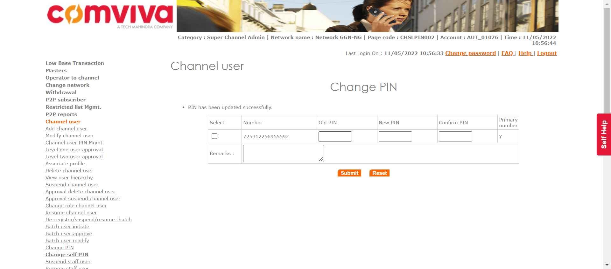
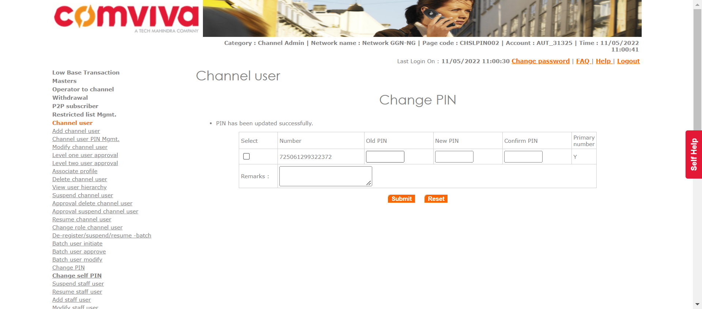

Tests
16 test(s) passed
4 test(s) failed, 0 others
Steps
0 step(s) passed
6 step(s) failed, 1,787 others
Tests
-
[Pre-Requisite]Operator User Creation May 11, 2022 10:56:16 AM failMay 11, 2022 10:56:16 AM May 11, 2022 11:06:58 AM 0h 10m 42s+428ms
-
POPTCREATION1: To verify that Super Admin is able to create Super Customer Care.May 11, 2022 10:56:16 AM 0h 0m 58s+69ms passPre-Requisite
Status Timestamp Details info_outline 10:56:16 AM Entered operatorUserInitiate(Super Admin, Super Customer Care) info_outline 10:56:16 AM Login ID Found as: superadmin info_outline 10:56:16 AM Password Found as: 1357 info_outline 10:56:16 AM Trying to select Language info_outline 10:56:16 AM Language selected successfully as: English info_outline 10:56:16 AM Trying to enter Login ID info_outline 10:56:16 AM Login ID entered successfully as: superadmin info_outline 10:56:16 AM Trying to enter Password info_outline 10:56:16 AM Password entered successfully as: 1357 info_outline 10:56:16 AM Trying to click Submit Button info_outline 10:56:18 AM Submit button clicked successfully info_outline 10:56:18 AM Trying to click Relogin Button info_outline 10:56:18 AM Relogin Button Not Found info_outline 10:56:18 AM Multiple Networks page exists: true info_outline 10:56:19 AM User clicked Operator Users. info_outline 10:56:19 AM Trying to click add Operator User Link info_outline 10:56:20 AM Add Operator User link clicked successfully info_outline 10:56:20 AM Trying to select Category info_outline 10:56:20 AM Category selected successfully info_outline 10:56:20 AM Trying to click Submit Button info_outline 10:56:20 AM Submit Button clicked successfully info_outline 10:56:20 AM Trying to enter First Name info_outline 10:56:21 AM First Name entered as: AUTFN2754 info_outline 10:56:21 AM Trying to enter Last Name info_outline 10:56:21 AM Last Name entered as: AUTLN9374 info_outline 10:56:21 AM Trying to enter User Name info_outline 10:56:21 AM User Name field not found info_outline 10:56:21 AM Trying to enter Short Name info_outline 10:56:21 AM Short Name entered as: AUTSN5298 info_outline 10:56:21 AM Trying to select User Name Prefix info_outline 10:56:21 AM User Name prefix selected successfully info_outline 10:56:21 AM Trying to enter Subscriber Code info_outline 10:56:21 AM Subscriber Code entered as: 211263 info_outline 10:56:21 AM Trying to select Status info_outline 10:56:21 AM Status drop down not found info_outline 10:56:21 AM GenerateMSISDN class Returns: Remaining MSISDNLength (13) info_outline 10:56:21 AM The generated MSISDN is ::721325589723857 info_outline 10:56:21 AM Entered :: checkForUniqueMSISDN() info_outline 10:56:21 AM Query Repository Returns: MSISDNStatus (N) info_outline 10:56:21 AM The generated External Code is ::885039473 info_outline 10:56:21 AM Entered :: checkForUniqueEXTCODE() info_outline 10:56:21 AM Query Repository Returns: ExternalCodeStatus (N) info_outline 10:56:21 AM Trying to enter External Code info_outline 10:56:21 AM External Code entered as: 885039473 info_outline 10:56:21 AM Trying to enter MobileNumber info_outline 10:56:21 AM Mobile Number entered as: 721325589723857 info_outline 10:56:21 AM Trying to enter Contact Number info_outline 10:56:22 AM Contact No. entered as: 562639 info_outline 10:56:22 AM Trying to select Division info_outline 10:56:22 AM Division selected as: AUTDIV41703 info_outline 10:56:22 AM Trying to select Department info_outline 10:56:22 AM Department selected as: AUTDEPT669018 info_outline 10:56:22 AM Trying to enter Address1 info_outline 10:56:22 AM Address1 entered as: Add15902 info_outline 10:56:22 AM Trying to enter Address2 info_outline 10:56:22 AM Address2 entered as: Add21584 info_outline 10:56:22 AM Trying to enter City info_outline 10:56:22 AM City entered as: City0042 info_outline 10:56:22 AM Trying to enter State info_outline 10:56:22 AM State entered as: State3120 info_outline 10:56:22 AM Trying to enter Country info_outline 10:56:22 AM Country entered as: Country84 info_outline 10:56:22 AM Trying to enter Email ID info_outline 10:56:22 AM Email ID entered as: goeb3@mail.com info_outline 10:56:22 AM The generated Login ID is ::AUT_94925 info_outline 10:56:22 AM Entered :: checkForUniqueLoginID() info_outline 10:56:23 AM Query Repository Returns: LoginIDStatus (N) info_outline 10:56:23 AM Trying to enter Login ID info_outline 10:56:23 AM Login ID entered as: AUT_94925 info_outline 10:56:23 AM Trying to check if Assign Geographies link exist info_outline 10:56:23 AM Assign geographies link not found info_outline 10:56:24 AM Assign Geographies link not found info_outline 10:56:24 AM ---- Window Handler ----
Switched Window ID - CDwindow-10080D3037B3B8B4349D8966A9E852D8
Current Window ID - CDwindow-10080D3037B3B8B4349D8966A9E852D8
Window ID Matched
Window is already closed or close link not exist
Window Switched to: http://172.30.38.232:6789/pretups/login.doinfo_outline 10:56:26 AM Trying to check if Assign Network link exists info_outline 10:56:26 AM Assign Network link found info_outline 10:56:26 AM Trying to click Assign Network info_outline 10:56:26 AM User clicked Assign Network. info_outline 10:56:27 AM Trying to select ALL option for assign network info_outline 10:56:27 AM ALL option for Assign Networks selected successfully info_outline 10:56:27 AM Trying to click Add button info_outline 10:56:27 AM Add button clicked successfully info_outline 10:56:28 AM ---- Window Handler ----
Switched Window ID - CDwindow-85A3C6A534C00817B3816D814C4A9C88
Current Window ID - CDwindow-10080D3037B3B8B4349D8966A9E852D8
Window Switched to: http://172.30.38.232:6789/pretups/login.doinfo_outline 10:56:30 AM Trying to check if Assign Roles link exist info_outline 10:56:30 AM Trying to click Assign Roles info_outline 10:56:30 AM Assign Roles clicked successfully info_outline 10:56:31 AM Trying to check ALL option for assign Roles info_outline 10:56:33 AM ALL option selected for Assign Roles info_outline 10:56:33 AM Trying to click Add button info_outline 10:56:35 AM Add button clicked successfully info_outline 10:56:36 AM ---- Window Handler ----
Switched Window ID - CDwindow-C4383D1FC10FF6AC7C6D79199F9B7796
Current Window ID - CDwindow-10080D3037B3B8B4349D8966A9E852D8
Window Switched to: http://172.30.38.232:6789/pretups/login.doinfo_outline 10:56:38 AM Trying to check if Assign Domain link exists info_outline 10:56:38 AM Assign Domains link not found info_outline 10:56:39 AM Assign Domains link not found info_outline 10:56:39 AM ---- Window Handler ----
Switched Window ID - CDwindow-10080D3037B3B8B4349D8966A9E852D8
Current Window ID - CDwindow-10080D3037B3B8B4349D8966A9E852D8
Window ID Matched
Window is already closed or close link not exist
Window Switched to: http://172.30.38.232:6789/pretups/login.doinfo_outline 10:56:41 AM Trying to check if Assign Products link exist info_outline 10:56:41 AM Assign Products link not found info_outline 10:56:42 AM Assign Products link not found info_outline 10:56:42 AM ---- Window Handler ----
Switched Window ID - CDwindow-10080D3037B3B8B4349D8966A9E852D8
Current Window ID - CDwindow-10080D3037B3B8B4349D8966A9E852D8
Window ID Matched
Window is already closed or close link not exist
Window Switched to: http://172.30.38.232:6789/pretups/login.doinfo_outline 10:56:44 AM Trying to click 'assign voucher type' link. info_outline 10:56:44 AM 'assign voucher type' link clicked successfully info_outline 10:56:45 AM Trying to check ALL option for voucher type. info_outline 10:56:45 AM ALL option for Voucher types selected successfully info_outline 10:56:45 AM Trying to click Add button info_outline 10:56:45 AM Add button clicked successfully info_outline 10:56:47 AM ---- Window Handler ----
Switched Window ID - CDwindow-3A4AA0FC020EDF0EBC8F3C4984B25DD9
Current Window ID - CDwindow-10080D3037B3B8B4349D8966A9E852D8
Window Switched to: http://172.30.38.232:6789/pretups/login.doinfo_outline 10:56:49 AM Trying to check if Assign Phone Number link exist info_outline 10:56:49 AM Assign phone number link not found info_outline 10:56:50 AM Assign Phone Numbers link not found info_outline 10:56:50 AM ---- Window Handler ----
Switched Window ID - CDwindow-10080D3037B3B8B4349D8966A9E852D8
Current Window ID - CDwindow-10080D3037B3B8B4349D8966A9E852D8
Window ID Matched
Window is already closed or close link not exist
Window Switched to: http://172.30.38.232:6789/pretups/login.doinfo_outline 10:56:52 AM Trying to check if Assign Services exists info_outline 10:56:52 AM Assign Services link not found info_outline 10:56:52 AM Assign Services link not found info_outline 10:56:53 AM ---- Window Handler ----
Switched Window ID - CDwindow-10080D3037B3B8B4349D8966A9E852D8
Current Window ID - CDwindow-10080D3037B3B8B4349D8966A9E852D8
Window ID Matched
Window is already closed or close link not exist
Window Switched to: http://172.30.38.232:6789/pretups/login.doinfo_outline 10:56:55 AM Trying to click Assign Voucher Type link info_outline 10:56:55 AM Assign voucher Type link clicked successfully info_outline 10:56:56 AM Trying to click ALL Voucher Type info_outline 10:56:56 AM All Voucher Types clicked successfully for Assign Voucher Type info_outline 10:56:56 AM Trying to click Add button for Assign Voucher Type info_outline 10:56:56 AM Add button for assign voucher Type clicked successfully info_outline 10:56:57 AM ---- Window Handler ----
Switched Window ID - CDwindow-32D0803E01D4165F87FB6199623025A2
Current Window ID - CDwindow-10080D3037B3B8B4349D8966A9E852D8
Window Switched to: http://172.30.38.232:6789/pretups/login.doinfo_outline 10:56:59 AM Trying to click Voucher Segment Type link info_outline 10:56:59 AM Assign voucher Segment link not exist info_outline 10:57:00 AM Assign Voucher Segment link not found info_outline 10:57:00 AM ---- Window Handler ----
Switched Window ID - CDwindow-10080D3037B3B8B4349D8966A9E852D8
Current Window ID - CDwindow-10080D3037B3B8B4349D8966A9E852D8
Window ID Matched
Window is already closed or close link not exist
Window Switched to: http://172.30.38.232:6789/pretups/login.doinfo_outline 10:57:02 AM Trying to check if Enter Password field exist info_outline 10:57:02 AM Enter Password field found info_outline 10:57:02 AM Trying to enter Password info_outline 10:57:02 AM Password Entered as: Com@1357 info_outline 10:57:02 AM Trying to enter Confirm Password info_outline 10:57:02 AM Confirm Password Entered as: Com@1357 info_outline 10:57:02 AM Trying to click Save button info_outline 10:57:03 AM Save Button clicked successfully info_outline 10:57:03 AM Trying to click Confirm button. info_outline 10:57:04 AM Confirm Button clicked successfully info_outline 10:57:04 AM Trying to fetch success or reject message. info_outline 10:57:04 AM Message fetched as :: Operator user AUTFN2754 AUTLN9374 request successfully accepted info_outline 10:57:04 AM Exited operatorUserInitiate() info_outline 10:57:04 AM Entered approveUser(Super Admin) info_outline 10:57:04 AM Entered :: getSystemPreference(OPT_USR_APRL_LEVEL) info_outline 10:57:05 AM Query Repository Returns: DEFAULT_VALUE (1) info_outline 10:57:05 AM Login ID Found as: superadmin info_outline 10:57:05 AM Password Found as: 1357 info_outline 10:57:05 AM Trying to select Language info_outline 10:57:05 AM Language selected successfully as: English info_outline 10:57:05 AM Trying to enter Login ID info_outline 10:57:05 AM Login ID entered successfully as: superadmin info_outline 10:57:05 AM Trying to enter Password info_outline 10:57:05 AM Password entered successfully as: 1357 info_outline 10:57:05 AM Trying to click Submit Button info_outline 10:57:06 AM Submit button clicked successfully info_outline 10:57:07 AM Trying to click Relogin Button info_outline 10:57:07 AM Relogin Button Not Found info_outline 10:57:07 AM Multiple Networks page exists: true info_outline 10:57:08 AM User clicked Operator Users. info_outline 10:57:08 AM Trying to click Operator User Approval Link info_outline 10:57:09 AM Operator User approval link clicked successfully info_outline 10:57:09 AM Trying to Enter intiated Login ID: AUT_94925 info_outline 10:57:09 AM Login ID entered successfully info_outline 10:57:09 AM Trying to click approval submit button info_outline 10:57:10 AM First Submit button clicked successfully info_outline 10:57:10 AM Trying to click Submit button info_outline 10:57:11 AM Second Submit button clicked successfully info_outline 10:57:11 AM Tring to click Approve button info_outline 10:57:12 AM Approve button clicked successfully info_outline 10:57:12 AM Tring to click Confirm button info_outline 10:57:13 AM Confirm button clicked successfully info_outline 10:57:13 AM Trying to fetch success or reject message. info_outline 10:57:13 AM Message fetched as :: User AUTFN2754 AUTLN9374 successfully approved. info_outline 10:57:14 AM User clicked Logout. info_outline 10:57:14 AM Exited approveUser() low_priority 10:57:14 AM java.io.FileNotFoundException: src\test\resources\config\DataProvider.xlsx (The process cannot access the file because it is being used by another process) at java.io.FileOutputStream.open0(Native Method) at java.io.FileOutputStream.open(Unknown Source) at java.io.FileOutputStream.
(Unknown Source) at java.io.FileOutputStream. (Unknown Source) at com.utils.ExcelUtility.setCellData(ExcelUtility.java:360) at com.Features.OperatorUser.writeOperatorUserData(OperatorUser.java:527) at com.testscripts.prerequisites.PreRequisite_OperatorUserCreation.Test_CreateOperatorUsers(PreRequisite_OperatorUserCreation.java:53) at sun.reflect.NativeMethodAccessorImpl.invoke0(Native Method) at sun.reflect.NativeMethodAccessorImpl.invoke(Unknown Source) at sun.reflect.DelegatingMethodAccessorImpl.invoke(Unknown Source) at java.lang.reflect.Method.invoke(Unknown Source) at org.testng.internal.MethodInvocationHelper.invokeMethod(MethodInvocationHelper.java:124) at org.testng.internal.Invoker.invokeMethod(Invoker.java:580) at org.testng.internal.Invoker.invokeTestMethod(Invoker.java:716) at org.testng.internal.Invoker.invokeTestMethods(Invoker.java:988) at org.testng.internal.TestMethodWorker.invokeTestMethods(TestMethodWorker.java:125) at org.testng.internal.TestMethodWorker.run(TestMethodWorker.java:109) at org.testng.TestRunner.privateRun(TestRunner.java:648) at org.testng.TestRunner.run(TestRunner.java:505) at org.testng.SuiteRunner.runTest(SuiteRunner.java:455) at org.testng.SuiteRunner.runSequentially(SuiteRunner.java:450) at org.testng.SuiteRunner.privateRun(SuiteRunner.java:415) at org.testng.SuiteRunner.run(SuiteRunner.java:364) at org.testng.SuiteRunnerWorker.runSuite(SuiteRunnerWorker.java:52) at org.testng.SuiteRunnerWorker.run(SuiteRunnerWorker.java:84) at org.testng.TestNG.runSuitesSequentially(TestNG.java:1208) at org.testng.TestNG.runSuitesLocally(TestNG.java:1137) at org.testng.TestNG.runSuites(TestNG.java:1049) at org.testng.TestNG.run(TestNG.java:1017) at org.testng.remote.AbstractRemoteTestNG.run(AbstractRemoteTestNG.java:115) at org.testng.remote.RemoteTestNG.initAndRun(RemoteTestNG.java:251) at org.testng.remote.RemoteTestNG.main(RemoteTestNG.java:77) low_priority 10:57:14 AM java.io.FileNotFoundException: src\test\resources\config\DataProvider.xlsx (The process cannot access the file because it is being used by another process) at java.io.FileOutputStream.open0(Native Method) at java.io.FileOutputStream.open(Unknown Source) at java.io.FileOutputStream.
(Unknown Source) at java.io.FileOutputStream. (Unknown Source) at com.utils.ExcelUtility.setCellData(ExcelUtility.java:360) at com.Features.OperatorUser.writeOperatorUserData(OperatorUser.java:528) at com.testscripts.prerequisites.PreRequisite_OperatorUserCreation.Test_CreateOperatorUsers(PreRequisite_OperatorUserCreation.java:53) at sun.reflect.NativeMethodAccessorImpl.invoke0(Native Method) at sun.reflect.NativeMethodAccessorImpl.invoke(Unknown Source) at sun.reflect.DelegatingMethodAccessorImpl.invoke(Unknown Source) at java.lang.reflect.Method.invoke(Unknown Source) at org.testng.internal.MethodInvocationHelper.invokeMethod(MethodInvocationHelper.java:124) at org.testng.internal.Invoker.invokeMethod(Invoker.java:580) at org.testng.internal.Invoker.invokeTestMethod(Invoker.java:716) at org.testng.internal.Invoker.invokeTestMethods(Invoker.java:988) at org.testng.internal.TestMethodWorker.invokeTestMethods(TestMethodWorker.java:125) at org.testng.internal.TestMethodWorker.run(TestMethodWorker.java:109) at org.testng.TestRunner.privateRun(TestRunner.java:648) at org.testng.TestRunner.run(TestRunner.java:505) at org.testng.SuiteRunner.runTest(SuiteRunner.java:455) at org.testng.SuiteRunner.runSequentially(SuiteRunner.java:450) at org.testng.SuiteRunner.privateRun(SuiteRunner.java:415) at org.testng.SuiteRunner.run(SuiteRunner.java:364) at org.testng.SuiteRunnerWorker.runSuite(SuiteRunnerWorker.java:52) at org.testng.SuiteRunnerWorker.run(SuiteRunnerWorker.java:84) at org.testng.TestNG.runSuitesSequentially(TestNG.java:1208) at org.testng.TestNG.runSuitesLocally(TestNG.java:1137) at org.testng.TestNG.runSuites(TestNG.java:1049) at org.testng.TestNG.run(TestNG.java:1017) at org.testng.remote.AbstractRemoteTestNG.run(AbstractRemoteTestNG.java:115) at org.testng.remote.RemoteTestNG.initAndRun(RemoteTestNG.java:251) at org.testng.remote.RemoteTestNG.main(RemoteTestNG.java:77) low_priority 10:57:14 AM java.io.FileNotFoundException: src\test\resources\config\DataProvider.xlsx (The process cannot access the file because it is being used by another process) at java.io.FileOutputStream.open0(Native Method) at java.io.FileOutputStream.open(Unknown Source) at java.io.FileOutputStream.
(Unknown Source) at java.io.FileOutputStream. (Unknown Source) at com.utils.ExcelUtility.setCellData(ExcelUtility.java:360) at com.Features.OperatorUser.writeOperatorUserData(OperatorUser.java:529) at com.testscripts.prerequisites.PreRequisite_OperatorUserCreation.Test_CreateOperatorUsers(PreRequisite_OperatorUserCreation.java:53) at sun.reflect.NativeMethodAccessorImpl.invoke0(Native Method) at sun.reflect.NativeMethodAccessorImpl.invoke(Unknown Source) at sun.reflect.DelegatingMethodAccessorImpl.invoke(Unknown Source) at java.lang.reflect.Method.invoke(Unknown Source) at org.testng.internal.MethodInvocationHelper.invokeMethod(MethodInvocationHelper.java:124) at org.testng.internal.Invoker.invokeMethod(Invoker.java:580) at org.testng.internal.Invoker.invokeTestMethod(Invoker.java:716) at org.testng.internal.Invoker.invokeTestMethods(Invoker.java:988) at org.testng.internal.TestMethodWorker.invokeTestMethods(TestMethodWorker.java:125) at org.testng.internal.TestMethodWorker.run(TestMethodWorker.java:109) at org.testng.TestRunner.privateRun(TestRunner.java:648) at org.testng.TestRunner.run(TestRunner.java:505) at org.testng.SuiteRunner.runTest(SuiteRunner.java:455) at org.testng.SuiteRunner.runSequentially(SuiteRunner.java:450) at org.testng.SuiteRunner.privateRun(SuiteRunner.java:415) at org.testng.SuiteRunner.run(SuiteRunner.java:364) at org.testng.SuiteRunnerWorker.runSuite(SuiteRunnerWorker.java:52) at org.testng.SuiteRunnerWorker.run(SuiteRunnerWorker.java:84) at org.testng.TestNG.runSuitesSequentially(TestNG.java:1208) at org.testng.TestNG.runSuitesLocally(TestNG.java:1137) at org.testng.TestNG.runSuites(TestNG.java:1049) at org.testng.TestNG.run(TestNG.java:1017) at org.testng.remote.AbstractRemoteTestNG.run(AbstractRemoteTestNG.java:115) at org.testng.remote.RemoteTestNG.initAndRun(RemoteTestNG.java:251) at org.testng.remote.RemoteTestNG.main(RemoteTestNG.java:77) -
POPTCREATION2: To verify that newly created Super Customer Care is prompted to change password after successful login for the first attempt and also able to change password.May 11, 2022 10:57:14 AM 0h 0m 27s+9ms failPre-Requisite
Status Timestamp Details info_outline 10:57:14 AM Entered changeUserFirstTimePassword() info_outline 10:57:14 AM Entered :: getSystemPreference(AUTO_PWD_GENERATE_ALLOW) info_outline 10:57:14 AM Query Repository Returns: DEFAULT_VALUE (false) info_outline 10:57:14 AM Password field exist info_outline 10:57:14 AM Trying to select Language info_outline 10:57:14 AM Language selected successfully as: English info_outline 10:57:14 AM Trying to enter Login ID info_outline 10:57:14 AM Login ID entered successfully as: AUT_94925 info_outline 10:57:14 AM Trying to enter Password info_outline 10:57:14 AM Password entered successfully as: Com@1357 info_outline 10:57:14 AM Trying to click Submit Button info_outline 10:57:16 AM Submit button clicked successfully info_outline 10:57:16 AM Trying to click Relogin Button info_outline 10:57:16 AM Relogin Button Not Found info_outline 10:57:16 AM Trying to enter Old Password info_outline 10:57:18 AM Old Password Entered successfully:Com@1357 info_outline 10:57:18 AM Trying to enter New Password info_outline 10:57:18 AM New Password Entered successfully:Com@2468 info_outline 10:57:18 AM Trying to enter Confirm Password info_outline 10:57:18 AM Confirm Password Entered successfully:Com@2468 info_outline 10:57:18 AM Trying to click Submit Button info_outline 10:57:19 AM Submit Button clicked successfully info_outline 10:57:19 AM Exited changeUserFirstTimePassword() info_outline 10:57:19 AM Trying to fetch success message. info_outline 10:57:19 AM Success message not found. info_outline 10:57:19 AM No message found on screen. info_outline 10:57:19 AM Entered :: fetchUserPassword() info_outline 10:57:19 AM Error while fetching Password: low_priority 10:57:19 AM org.postgresql.util.PSQLException: ResultSet not positioned properly, perhaps you need to call next. at org.postgresql.jdbc.PgResultSet.checkResultSet(PgResultSet.java:2772) at org.postgresql.jdbc.PgResultSet.getString(PgResultSet.java:1894) at com.mchange.v2.c3p0.impl.NewProxyResultSet.getString(NewProxyResultSet.java:4865) at com.dbrepository.PostGreSQLRepository.fetchUserPassword(PostGreSQLRepository.java:726) at com.testscripts.prerequisites.PreRequisite_OperatorUserCreation.Test_CreateOperatorUsers(PreRequisite_OperatorUserCreation.java:68) at sun.reflect.NativeMethodAccessorImpl.invoke0(Native Method) at sun.reflect.NativeMethodAccessorImpl.invoke(Unknown Source) at sun.reflect.DelegatingMethodAccessorImpl.invoke(Unknown Source) at java.lang.reflect.Method.invoke(Unknown Source) at org.testng.internal.MethodInvocationHelper.invokeMethod(MethodInvocationHelper.java:124) at org.testng.internal.Invoker.invokeMethod(Invoker.java:580) at org.testng.internal.Invoker.invokeTestMethod(Invoker.java:716) at org.testng.internal.Invoker.invokeTestMethods(Invoker.java:988) at org.testng.internal.TestMethodWorker.invokeTestMethods(TestMethodWorker.java:125) at org.testng.internal.TestMethodWorker.run(TestMethodWorker.java:109) at org.testng.TestRunner.privateRun(TestRunner.java:648) at org.testng.TestRunner.run(TestRunner.java:505) at org.testng.SuiteRunner.runTest(SuiteRunner.java:455) at org.testng.SuiteRunner.runSequentially(SuiteRunner.java:450) at org.testng.SuiteRunner.privateRun(SuiteRunner.java:415) at org.testng.SuiteRunner.run(SuiteRunner.java:364) at org.testng.SuiteRunnerWorker.runSuite(SuiteRunnerWorker.java:52) at org.testng.SuiteRunnerWorker.run(SuiteRunnerWorker.java:84) at org.testng.TestNG.runSuitesSequentially(TestNG.java:1208) at org.testng.TestNG.runSuitesLocally(TestNG.java:1137) at org.testng.TestNG.runSuites(TestNG.java:1049) at org.testng.TestNG.run(TestNG.java:1017) at org.testng.remote.AbstractRemoteTestNG.run(AbstractRemoteTestNG.java:115) at org.testng.remote.RemoteTestNG.initAndRun(RemoteTestNG.java:251) at org.testng.remote.RemoteTestNG.main(RemoteTestNG.java:77)
info_outline 10:57:19 AM Query Repository Returns: DecryptedPassword (null) info_outline 10:57:19 AM Expected: Com@2468
Found: nullinfo_outline 10:57:19 AM Message Validation Failed error 10:57:40 AM Error while getting SSH Server Instance : com.jcraft.jsch.JSchException: java.net.ConnectException: Connection timed out: connect cancel 10:57:40 AM Catalina Log
info_outline 10:57:41 AM low_priority 10:57:41 AM java.io.FileNotFoundException: src\test\resources\config\DataProvider.xlsx (The process cannot access the file because it is being used by another process) at java.io.FileOutputStream.open0(Native Method) at java.io.FileOutputStream.open(Unknown Source) at java.io.FileOutputStream.
(Unknown Source) at java.io.FileOutputStream. (Unknown Source) at com.utils.ExcelUtility.setCellData(ExcelUtility.java:360) at com.utils.ExtentI.insertValueInDataProviderSheet(ExtentI.java:61) at com.testscripts.prerequisites.PreRequisite_OperatorUserCreation.Test_CreateOperatorUsers(PreRequisite_OperatorUserCreation.java:75) at sun.reflect.NativeMethodAccessorImpl.invoke0(Native Method) at sun.reflect.NativeMethodAccessorImpl.invoke(Unknown Source) at sun.reflect.DelegatingMethodAccessorImpl.invoke(Unknown Source) at java.lang.reflect.Method.invoke(Unknown Source) at org.testng.internal.MethodInvocationHelper.invokeMethod(MethodInvocationHelper.java:124) at org.testng.internal.Invoker.invokeMethod(Invoker.java:580) at org.testng.internal.Invoker.invokeTestMethod(Invoker.java:716) at org.testng.internal.Invoker.invokeTestMethods(Invoker.java:988) at org.testng.internal.TestMethodWorker.invokeTestMethods(TestMethodWorker.java:125) at org.testng.internal.TestMethodWorker.run(TestMethodWorker.java:109) at org.testng.TestRunner.privateRun(TestRunner.java:648) at org.testng.TestRunner.run(TestRunner.java:505) at org.testng.SuiteRunner.runTest(SuiteRunner.java:455) at org.testng.SuiteRunner.runSequentially(SuiteRunner.java:450) at org.testng.SuiteRunner.privateRun(SuiteRunner.java:415) at org.testng.SuiteRunner.run(SuiteRunner.java:364) at org.testng.SuiteRunnerWorker.runSuite(SuiteRunnerWorker.java:52) at org.testng.SuiteRunnerWorker.run(SuiteRunnerWorker.java:84) at org.testng.TestNG.runSuitesSequentially(TestNG.java:1208) at org.testng.TestNG.runSuitesLocally(TestNG.java:1137) at org.testng.TestNG.runSuites(TestNG.java:1049) at org.testng.TestNG.run(TestNG.java:1017) at org.testng.remote.AbstractRemoteTestNG.run(AbstractRemoteTestNG.java:115) at org.testng.remote.RemoteTestNG.initAndRun(RemoteTestNG.java:251) at org.testng.remote.RemoteTestNG.main(RemoteTestNG.java:77) info_outline 10:57:41 AM Pin Change is not required. info_outline 10:57:41 AM The following asserts failed: expected [Com@2468] but found [null] -
POPTCREATION1: To verify that Super Admin is able to create Sub Super Admin.May 11, 2022 10:57:42 AM 0h 0m 59s+990ms passPre-Requisite
Status Timestamp Details info_outline 10:57:42 AM Entered operatorUserInitiate(Super Admin, Sub Super Admin) info_outline 10:57:42 AM Login ID Found as: superadmin info_outline 10:57:42 AM Password Found as: 1357 info_outline 10:57:42 AM Trying to select Language info_outline 10:57:42 AM Language selected successfully as: English info_outline 10:57:42 AM Trying to enter Login ID info_outline 10:57:42 AM Login ID entered successfully as: superadmin info_outline 10:57:42 AM Trying to enter Password info_outline 10:57:42 AM Password entered successfully as: 1357 info_outline 10:57:42 AM Trying to click Submit Button info_outline 10:57:43 AM Submit button clicked successfully info_outline 10:57:43 AM Trying to click Relogin Button info_outline 10:57:43 AM Relogin Button Not Found info_outline 10:57:43 AM Multiple Networks page exists: true info_outline 10:57:45 AM User clicked Operator Users. info_outline 10:57:45 AM Trying to click add Operator User Link info_outline 10:57:45 AM Add Operator User link clicked successfully info_outline 10:57:45 AM Trying to select Category info_outline 10:57:45 AM Category selected successfully info_outline 10:57:45 AM Trying to click Submit Button info_outline 10:57:46 AM Submit Button clicked successfully info_outline 10:57:46 AM Trying to enter First Name info_outline 10:57:46 AM First Name entered as: AUTFN3063 info_outline 10:57:46 AM Trying to enter Last Name info_outline 10:57:46 AM Last Name entered as: AUTLN4281 info_outline 10:57:46 AM Trying to enter User Name info_outline 10:57:46 AM User Name field not found info_outline 10:57:46 AM Trying to enter Short Name info_outline 10:57:47 AM Short Name entered as: AUTSN9759 info_outline 10:57:47 AM Trying to select User Name Prefix info_outline 10:57:47 AM User Name prefix selected successfully info_outline 10:57:47 AM Trying to enter Subscriber Code info_outline 10:57:47 AM Subscriber Code entered as: 048667 info_outline 10:57:47 AM Trying to select Status info_outline 10:57:47 AM Status drop down not found info_outline 10:57:47 AM GenerateMSISDN class Returns: Remaining MSISDNLength (13) info_outline 10:57:47 AM The generated MSISDN is ::727817745082200 info_outline 10:57:47 AM Entered :: checkForUniqueMSISDN() info_outline 10:57:47 AM Query Repository Returns: MSISDNStatus (N) info_outline 10:57:47 AM The generated External Code is ::831075790 info_outline 10:57:47 AM Entered :: checkForUniqueEXTCODE() info_outline 10:57:47 AM Query Repository Returns: ExternalCodeStatus (N) info_outline 10:57:47 AM Trying to enter External Code info_outline 10:57:47 AM External Code entered as: 831075790 info_outline 10:57:47 AM Trying to enter MobileNumber info_outline 10:57:47 AM Mobile Number entered as: 727817745082200 info_outline 10:57:47 AM Trying to enter Contact Number info_outline 10:57:47 AM Contact No. entered as: 907676 info_outline 10:57:47 AM Trying to select Division info_outline 10:57:47 AM Division selected as: AUTDIV41703 info_outline 10:57:47 AM Trying to select Department info_outline 10:57:48 AM Department selected as: AUTDEPT669018 info_outline 10:57:48 AM Trying to enter Address1 info_outline 10:57:48 AM Address1 entered as: Add10045 info_outline 10:57:48 AM Trying to enter Address2 info_outline 10:57:48 AM Address2 entered as: Add21686 info_outline 10:57:48 AM Trying to enter City info_outline 10:57:48 AM City entered as: City8897 info_outline 10:57:48 AM Trying to enter State info_outline 10:57:48 AM State entered as: State3943 info_outline 10:57:48 AM Trying to enter Country info_outline 10:57:48 AM Country entered as: Country02 info_outline 10:57:48 AM Trying to enter Email ID info_outline 10:57:48 AM Email ID entered as: 8joh4@mail.com info_outline 10:57:48 AM The generated Login ID is ::AUT_33047 info_outline 10:57:48 AM Entered :: checkForUniqueLoginID() info_outline 10:57:48 AM Query Repository Returns: LoginIDStatus (N) info_outline 10:57:48 AM Trying to enter Login ID info_outline 10:57:48 AM Login ID entered as: AUT_33047 info_outline 10:57:48 AM Trying to check if Assign Geographies link exist info_outline 10:57:48 AM Assign Geographies link found info_outline 10:57:48 AM Trying to click Assign Geographies link info_outline 10:57:48 AM Assign Geographies link clicked successfully info_outline 10:57:52 AM Trying to select Geography info_outline 10:57:53 AM Geography selected successfully info_outline 10:57:53 AM Trying to click Add button info_outline 10:57:53 AM Add button for geography clicked successfully info_outline 10:57:53 AM Geographies has been assigned to the user. info_outline 10:57:54 AM ---- Window Handler ----
Switched Window ID - CDwindow-9EDC78B6992D9F7A52F2215F5C116551
Current Window ID - CDwindow-10080D3037B3B8B4349D8966A9E852D8
Window Switched to: http://172.30.38.232:6789/pretups/login.doinfo_outline 10:57:56 AM Trying to check if Assign Network link exists info_outline 10:57:56 AM Assign Network link not found info_outline 10:57:57 AM Assign Network Link not found info_outline 10:57:57 AM ---- Window Handler ----
Switched Window ID - CDwindow-10080D3037B3B8B4349D8966A9E852D8
Current Window ID - CDwindow-10080D3037B3B8B4349D8966A9E852D8
Window ID Matched
Window is already closed or close link not exist
Window Switched to: http://172.30.38.232:6789/pretups/login.doinfo_outline 10:57:59 AM Trying to check if Assign Roles link exist info_outline 10:57:59 AM Trying to click Assign Roles info_outline 10:57:59 AM Assign Roles clicked successfully info_outline 10:58:00 AM Trying to check ALL option for assign Roles info_outline 10:58:02 AM ALL option selected for Assign Roles info_outline 10:58:02 AM Trying to click Add button info_outline 10:58:04 AM Add button clicked successfully info_outline 10:58:05 AM ---- Window Handler ----
Switched Window ID - CDwindow-DDAC3AF204912EFAF774F2C77A210BC6
Current Window ID - CDwindow-10080D3037B3B8B4349D8966A9E852D8
Window Switched to: http://172.30.38.232:6789/pretups/login.doinfo_outline 10:58:07 AM Trying to check if Assign Domain link exists info_outline 10:58:07 AM Assign Domains link not found info_outline 10:58:08 AM Assign Domains link not found info_outline 10:58:08 AM ---- Window Handler ----
Switched Window ID - CDwindow-10080D3037B3B8B4349D8966A9E852D8
Current Window ID - CDwindow-10080D3037B3B8B4349D8966A9E852D8
Window ID Matched
Window is already closed or close link not exist
Window Switched to: http://172.30.38.232:6789/pretups/login.doinfo_outline 10:58:10 AM Trying to check if Assign Products link exist info_outline 10:58:10 AM Assign Products link not found info_outline 10:58:11 AM Assign Products link not found info_outline 10:58:11 AM ---- Window Handler ----
Switched Window ID - CDwindow-10080D3037B3B8B4349D8966A9E852D8
Current Window ID - CDwindow-10080D3037B3B8B4349D8966A9E852D8
Window ID Matched
Window is already closed or close link not exist
Window Switched to: http://172.30.38.232:6789/pretups/login.doinfo_outline 10:58:13 AM Trying to click 'assign voucher type' link. info_outline 10:58:13 AM 'assign voucher type' link clicked successfully info_outline 10:58:14 AM Trying to check ALL option for voucher type. info_outline 10:58:14 AM ALL option for Voucher types selected successfully info_outline 10:58:14 AM Trying to click Add button info_outline 10:58:14 AM Add button clicked successfully info_outline 10:58:15 AM ---- Window Handler ----
Switched Window ID - CDwindow-816326C35F916D6C0FCFA506BE8DB41D
Current Window ID - CDwindow-10080D3037B3B8B4349D8966A9E852D8
Window Switched to: http://172.30.38.232:6789/pretups/login.doinfo_outline 10:58:17 AM Trying to check if Assign Phone Number link exist info_outline 10:58:17 AM Assign phone number link not found info_outline 10:58:18 AM Assign Phone Numbers link not found info_outline 10:58:18 AM ---- Window Handler ----
Switched Window ID - CDwindow-10080D3037B3B8B4349D8966A9E852D8
Current Window ID - CDwindow-10080D3037B3B8B4349D8966A9E852D8
Window ID Matched
Window is already closed or close link not exist
Window Switched to: http://172.30.38.232:6789/pretups/login.doinfo_outline 10:58:20 AM Trying to check if Assign Services exists info_outline 10:58:20 AM Assign Services link not found info_outline 10:58:21 AM Assign Services link not found info_outline 10:58:21 AM ---- Window Handler ----
Switched Window ID - CDwindow-10080D3037B3B8B4349D8966A9E852D8
Current Window ID - CDwindow-10080D3037B3B8B4349D8966A9E852D8
Window ID Matched
Window is already closed or close link not exist
Window Switched to: http://172.30.38.232:6789/pretups/login.doinfo_outline 10:58:23 AM Trying to click Assign Voucher Type link info_outline 10:58:23 AM Assign voucher Type link clicked successfully info_outline 10:58:24 AM Trying to click ALL Voucher Type info_outline 10:58:24 AM All Voucher Types clicked successfully for Assign Voucher Type info_outline 10:58:24 AM Trying to click Add button for Assign Voucher Type info_outline 10:58:25 AM Add button for assign voucher Type clicked successfully info_outline 10:58:26 AM ---- Window Handler ----
Switched Window ID - CDwindow-219DCFCC5D527C34E19CEFCF80A47E39
Current Window ID - CDwindow-10080D3037B3B8B4349D8966A9E852D8
Window Switched to: http://172.30.38.232:6789/pretups/login.doinfo_outline 10:58:28 AM Trying to click Voucher Segment Type link info_outline 10:58:28 AM Assign voucher Segment link clicked successfully info_outline 10:58:29 AM Trying to click ALL Voucher Segment info_outline 10:58:29 AM All Voucher Segments clicked successfully for Assign Voucher Type info_outline 10:58:29 AM Trying to click Add button for Assign Voucher Type info_outline 10:58:29 AM Add button for assign voucher Segment clicked successfully info_outline 10:58:30 AM ---- Window Handler ----
Switched Window ID - CDwindow-751FF2EE99D6AC706436EA5B5D2CB07D
Current Window ID - CDwindow-10080D3037B3B8B4349D8966A9E852D8
Window Switched to: http://172.30.38.232:6789/pretups/login.doinfo_outline 10:58:32 AM Trying to check if Enter Password field exist info_outline 10:58:32 AM Enter Password field found info_outline 10:58:32 AM Trying to enter Password info_outline 10:58:32 AM Password Entered as: Com@1357 info_outline 10:58:32 AM Trying to enter Confirm Password info_outline 10:58:32 AM Confirm Password Entered as: Com@1357 info_outline 10:58:32 AM Trying to click Save button info_outline 10:58:33 AM Save Button clicked successfully info_outline 10:58:33 AM Trying to click Confirm button. info_outline 10:58:34 AM Confirm Button clicked successfully info_outline 10:58:34 AM Trying to fetch success or reject message. info_outline 10:58:34 AM Message fetched as :: Operator user AUTFN3063 AUTLN4281 request successfully accepted info_outline 10:58:34 AM Exited operatorUserInitiate() info_outline 10:58:34 AM Entered approveUser(Super Admin) info_outline 10:58:34 AM Entered :: getSystemPreference(OPT_USR_APRL_LEVEL) info_outline 10:58:34 AM Query Repository Returns: DEFAULT_VALUE (1) info_outline 10:58:34 AM Login ID Found as: superadmin info_outline 10:58:34 AM Password Found as: 1357 info_outline 10:58:34 AM Trying to select Language info_outline 10:58:34 AM Language selected successfully as: English info_outline 10:58:34 AM Trying to enter Login ID info_outline 10:58:34 AM Login ID entered successfully as: superadmin info_outline 10:58:34 AM Trying to enter Password info_outline 10:58:35 AM Password entered successfully as: 1357 info_outline 10:58:35 AM Trying to click Submit Button info_outline 10:58:35 AM Submit button clicked successfully info_outline 10:58:35 AM Trying to click Relogin Button info_outline 10:58:35 AM Relogin Button Not Found info_outline 10:58:35 AM Multiple Networks page exists: true info_outline 10:58:37 AM User clicked Operator Users. info_outline 10:58:37 AM Trying to click Operator User Approval Link info_outline 10:58:38 AM Operator User approval link clicked successfully info_outline 10:58:38 AM Trying to Enter intiated Login ID: AUT_33047 info_outline 10:58:38 AM Login ID entered successfully info_outline 10:58:38 AM Trying to click approval submit button info_outline 10:58:39 AM First Submit button clicked successfully info_outline 10:58:39 AM Trying to click Submit button info_outline 10:58:40 AM Second Submit button clicked successfully info_outline 10:58:40 AM Tring to click Approve button info_outline 10:58:40 AM Approve button clicked successfully info_outline 10:58:40 AM Tring to click Confirm button info_outline 10:58:41 AM Confirm button clicked successfully info_outline 10:58:41 AM Trying to fetch success or reject message. info_outline 10:58:41 AM Message fetched as :: User AUTFN3063 AUTLN4281 successfully approved. info_outline 10:58:42 AM User clicked Logout. info_outline 10:58:42 AM Exited approveUser() low_priority 10:58:42 AM java.io.FileNotFoundException: src\test\resources\config\DataProvider.xlsx (The process cannot access the file because it is being used by another process) at java.io.FileOutputStream.open0(Native Method) at java.io.FileOutputStream.open(Unknown Source) at java.io.FileOutputStream.
(Unknown Source) at java.io.FileOutputStream. (Unknown Source) at com.utils.ExcelUtility.setCellData(ExcelUtility.java:360) at com.Features.OperatorUser.writeOperatorUserData(OperatorUser.java:527) at com.testscripts.prerequisites.PreRequisite_OperatorUserCreation.Test_CreateOperatorUsers(PreRequisite_OperatorUserCreation.java:53) at sun.reflect.NativeMethodAccessorImpl.invoke0(Native Method) at sun.reflect.NativeMethodAccessorImpl.invoke(Unknown Source) at sun.reflect.DelegatingMethodAccessorImpl.invoke(Unknown Source) at java.lang.reflect.Method.invoke(Unknown Source) at org.testng.internal.MethodInvocationHelper.invokeMethod(MethodInvocationHelper.java:124) at org.testng.internal.Invoker.invokeMethod(Invoker.java:580) at org.testng.internal.Invoker.invokeTestMethod(Invoker.java:716) at org.testng.internal.Invoker.invokeTestMethods(Invoker.java:988) at org.testng.internal.TestMethodWorker.invokeTestMethods(TestMethodWorker.java:125) at org.testng.internal.TestMethodWorker.run(TestMethodWorker.java:109) at org.testng.TestRunner.privateRun(TestRunner.java:648) at org.testng.TestRunner.run(TestRunner.java:505) at org.testng.SuiteRunner.runTest(SuiteRunner.java:455) at org.testng.SuiteRunner.runSequentially(SuiteRunner.java:450) at org.testng.SuiteRunner.privateRun(SuiteRunner.java:415) at org.testng.SuiteRunner.run(SuiteRunner.java:364) at org.testng.SuiteRunnerWorker.runSuite(SuiteRunnerWorker.java:52) at org.testng.SuiteRunnerWorker.run(SuiteRunnerWorker.java:84) at org.testng.TestNG.runSuitesSequentially(TestNG.java:1208) at org.testng.TestNG.runSuitesLocally(TestNG.java:1137) at org.testng.TestNG.runSuites(TestNG.java:1049) at org.testng.TestNG.run(TestNG.java:1017) at org.testng.remote.AbstractRemoteTestNG.run(AbstractRemoteTestNG.java:115) at org.testng.remote.RemoteTestNG.initAndRun(RemoteTestNG.java:251) at org.testng.remote.RemoteTestNG.main(RemoteTestNG.java:77) low_priority 10:58:42 AM java.io.FileNotFoundException: src\test\resources\config\DataProvider.xlsx (The process cannot access the file because it is being used by another process) at java.io.FileOutputStream.open0(Native Method) at java.io.FileOutputStream.open(Unknown Source) at java.io.FileOutputStream.
(Unknown Source) at java.io.FileOutputStream. (Unknown Source) at com.utils.ExcelUtility.setCellData(ExcelUtility.java:360) at com.Features.OperatorUser.writeOperatorUserData(OperatorUser.java:528) at com.testscripts.prerequisites.PreRequisite_OperatorUserCreation.Test_CreateOperatorUsers(PreRequisite_OperatorUserCreation.java:53) at sun.reflect.NativeMethodAccessorImpl.invoke0(Native Method) at sun.reflect.NativeMethodAccessorImpl.invoke(Unknown Source) at sun.reflect.DelegatingMethodAccessorImpl.invoke(Unknown Source) at java.lang.reflect.Method.invoke(Unknown Source) at org.testng.internal.MethodInvocationHelper.invokeMethod(MethodInvocationHelper.java:124) at org.testng.internal.Invoker.invokeMethod(Invoker.java:580) at org.testng.internal.Invoker.invokeTestMethod(Invoker.java:716) at org.testng.internal.Invoker.invokeTestMethods(Invoker.java:988) at org.testng.internal.TestMethodWorker.invokeTestMethods(TestMethodWorker.java:125) at org.testng.internal.TestMethodWorker.run(TestMethodWorker.java:109) at org.testng.TestRunner.privateRun(TestRunner.java:648) at org.testng.TestRunner.run(TestRunner.java:505) at org.testng.SuiteRunner.runTest(SuiteRunner.java:455) at org.testng.SuiteRunner.runSequentially(SuiteRunner.java:450) at org.testng.SuiteRunner.privateRun(SuiteRunner.java:415) at org.testng.SuiteRunner.run(SuiteRunner.java:364) at org.testng.SuiteRunnerWorker.runSuite(SuiteRunnerWorker.java:52) at org.testng.SuiteRunnerWorker.run(SuiteRunnerWorker.java:84) at org.testng.TestNG.runSuitesSequentially(TestNG.java:1208) at org.testng.TestNG.runSuitesLocally(TestNG.java:1137) at org.testng.TestNG.runSuites(TestNG.java:1049) at org.testng.TestNG.run(TestNG.java:1017) at org.testng.remote.AbstractRemoteTestNG.run(AbstractRemoteTestNG.java:115) at org.testng.remote.RemoteTestNG.initAndRun(RemoteTestNG.java:251) at org.testng.remote.RemoteTestNG.main(RemoteTestNG.java:77) low_priority 10:58:42 AM java.io.FileNotFoundException: src\test\resources\config\DataProvider.xlsx (The process cannot access the file because it is being used by another process) at java.io.FileOutputStream.open0(Native Method) at java.io.FileOutputStream.open(Unknown Source) at java.io.FileOutputStream.
(Unknown Source) at java.io.FileOutputStream. (Unknown Source) at com.utils.ExcelUtility.setCellData(ExcelUtility.java:360) at com.Features.OperatorUser.writeOperatorUserData(OperatorUser.java:529) at com.testscripts.prerequisites.PreRequisite_OperatorUserCreation.Test_CreateOperatorUsers(PreRequisite_OperatorUserCreation.java:53) at sun.reflect.NativeMethodAccessorImpl.invoke0(Native Method) at sun.reflect.NativeMethodAccessorImpl.invoke(Unknown Source) at sun.reflect.DelegatingMethodAccessorImpl.invoke(Unknown Source) at java.lang.reflect.Method.invoke(Unknown Source) at org.testng.internal.MethodInvocationHelper.invokeMethod(MethodInvocationHelper.java:124) at org.testng.internal.Invoker.invokeMethod(Invoker.java:580) at org.testng.internal.Invoker.invokeTestMethod(Invoker.java:716) at org.testng.internal.Invoker.invokeTestMethods(Invoker.java:988) at org.testng.internal.TestMethodWorker.invokeTestMethods(TestMethodWorker.java:125) at org.testng.internal.TestMethodWorker.run(TestMethodWorker.java:109) at org.testng.TestRunner.privateRun(TestRunner.java:648) at org.testng.TestRunner.run(TestRunner.java:505) at org.testng.SuiteRunner.runTest(SuiteRunner.java:455) at org.testng.SuiteRunner.runSequentially(SuiteRunner.java:450) at org.testng.SuiteRunner.privateRun(SuiteRunner.java:415) at org.testng.SuiteRunner.run(SuiteRunner.java:364) at org.testng.SuiteRunnerWorker.runSuite(SuiteRunnerWorker.java:52) at org.testng.SuiteRunnerWorker.run(SuiteRunnerWorker.java:84) at org.testng.TestNG.runSuitesSequentially(TestNG.java:1208) at org.testng.TestNG.runSuitesLocally(TestNG.java:1137) at org.testng.TestNG.runSuites(TestNG.java:1049) at org.testng.TestNG.run(TestNG.java:1017) at org.testng.remote.AbstractRemoteTestNG.run(AbstractRemoteTestNG.java:115) at org.testng.remote.RemoteTestNG.initAndRun(RemoteTestNG.java:251) at org.testng.remote.RemoteTestNG.main(RemoteTestNG.java:77) -
POPTCREATION2: To verify that newly created Sub Super Admin is prompted to change password after successful login for the first attempt and also able to change password.May 11, 2022 10:58:42 AM 0h 0m 5s+250ms passPre-Requisite
Status Timestamp Details info_outline 10:58:42 AM Entered changeUserFirstTimePassword() info_outline 10:58:42 AM Entered :: getSystemPreference(AUTO_PWD_GENERATE_ALLOW) info_outline 10:58:42 AM Query Repository Returns: DEFAULT_VALUE (false) info_outline 10:58:42 AM Password field exist info_outline 10:58:42 AM Trying to select Language info_outline 10:58:43 AM Language selected successfully as: English info_outline 10:58:43 AM Trying to enter Login ID info_outline 10:58:43 AM Login ID entered successfully as: AUT_33047 info_outline 10:58:43 AM Trying to enter Password info_outline 10:58:43 AM Password entered successfully as: Com@1357 info_outline 10:58:43 AM Trying to click Submit Button info_outline 10:58:44 AM Submit button clicked successfully info_outline 10:58:44 AM Trying to click Relogin Button info_outline 10:58:44 AM Relogin Button Not Found info_outline 10:58:44 AM Trying to enter Old Password info_outline 10:58:46 AM Old Password Entered successfully:Com@1357 info_outline 10:58:46 AM Trying to enter New Password info_outline 10:58:46 AM New Password Entered successfully:Com@2468 info_outline 10:58:46 AM Trying to enter Confirm Password info_outline 10:58:46 AM Confirm Password Entered successfully:Com@2468 info_outline 10:58:46 AM Trying to click Submit Button info_outline 10:58:47 AM Submit Button clicked successfully info_outline 10:58:47 AM Exited changeUserFirstTimePassword() info_outline 10:58:47 AM Trying to fetch success message. info_outline 10:58:47 AM Message fetched as :: Successfully changed password low_priority 10:58:47 AM java.io.FileNotFoundException: src\test\resources\config\DataProvider.xlsx (The process cannot access the file because it is being used by another process) at java.io.FileOutputStream.open0(Native Method) at java.io.FileOutputStream.open(Unknown Source) at java.io.FileOutputStream.
(Unknown Source) at java.io.FileOutputStream. (Unknown Source) at com.utils.ExcelUtility.setCellData(ExcelUtility.java:360) at com.Features.OperatorUser.writeOperatorUserData(OperatorUser.java:527) at com.testscripts.prerequisites.PreRequisite_OperatorUserCreation.Test_CreateOperatorUsers(PreRequisite_OperatorUserCreation.java:66) at sun.reflect.NativeMethodAccessorImpl.invoke0(Native Method) at sun.reflect.NativeMethodAccessorImpl.invoke(Unknown Source) at sun.reflect.DelegatingMethodAccessorImpl.invoke(Unknown Source) at java.lang.reflect.Method.invoke(Unknown Source) at org.testng.internal.MethodInvocationHelper.invokeMethod(MethodInvocationHelper.java:124) at org.testng.internal.Invoker.invokeMethod(Invoker.java:580) at org.testng.internal.Invoker.invokeTestMethod(Invoker.java:716) at org.testng.internal.Invoker.invokeTestMethods(Invoker.java:988) at org.testng.internal.TestMethodWorker.invokeTestMethods(TestMethodWorker.java:125) at org.testng.internal.TestMethodWorker.run(TestMethodWorker.java:109) at org.testng.TestRunner.privateRun(TestRunner.java:648) at org.testng.TestRunner.run(TestRunner.java:505) at org.testng.SuiteRunner.runTest(SuiteRunner.java:455) at org.testng.SuiteRunner.runSequentially(SuiteRunner.java:450) at org.testng.SuiteRunner.privateRun(SuiteRunner.java:415) at org.testng.SuiteRunner.run(SuiteRunner.java:364) at org.testng.SuiteRunnerWorker.runSuite(SuiteRunnerWorker.java:52) at org.testng.SuiteRunnerWorker.run(SuiteRunnerWorker.java:84) at org.testng.TestNG.runSuitesSequentially(TestNG.java:1208) at org.testng.TestNG.runSuitesLocally(TestNG.java:1137) at org.testng.TestNG.runSuites(TestNG.java:1049) at org.testng.TestNG.run(TestNG.java:1017) at org.testng.remote.AbstractRemoteTestNG.run(AbstractRemoteTestNG.java:115) at org.testng.remote.RemoteTestNG.initAndRun(RemoteTestNG.java:251) at org.testng.remote.RemoteTestNG.main(RemoteTestNG.java:77) low_priority 10:58:47 AM java.io.FileNotFoundException: src\test\resources\config\DataProvider.xlsx (The process cannot access the file because it is being used by another process) at java.io.FileOutputStream.open0(Native Method) at java.io.FileOutputStream.open(Unknown Source) at java.io.FileOutputStream.
(Unknown Source) at java.io.FileOutputStream. (Unknown Source) at com.utils.ExcelUtility.setCellData(ExcelUtility.java:360) at com.Features.OperatorUser.writeOperatorUserData(OperatorUser.java:528) at com.testscripts.prerequisites.PreRequisite_OperatorUserCreation.Test_CreateOperatorUsers(PreRequisite_OperatorUserCreation.java:66) at sun.reflect.NativeMethodAccessorImpl.invoke0(Native Method) at sun.reflect.NativeMethodAccessorImpl.invoke(Unknown Source) at sun.reflect.DelegatingMethodAccessorImpl.invoke(Unknown Source) at java.lang.reflect.Method.invoke(Unknown Source) at org.testng.internal.MethodInvocationHelper.invokeMethod(MethodInvocationHelper.java:124) at org.testng.internal.Invoker.invokeMethod(Invoker.java:580) at org.testng.internal.Invoker.invokeTestMethod(Invoker.java:716) at org.testng.internal.Invoker.invokeTestMethods(Invoker.java:988) at org.testng.internal.TestMethodWorker.invokeTestMethods(TestMethodWorker.java:125) at org.testng.internal.TestMethodWorker.run(TestMethodWorker.java:109) at org.testng.TestRunner.privateRun(TestRunner.java:648) at org.testng.TestRunner.run(TestRunner.java:505) at org.testng.SuiteRunner.runTest(SuiteRunner.java:455) at org.testng.SuiteRunner.runSequentially(SuiteRunner.java:450) at org.testng.SuiteRunner.privateRun(SuiteRunner.java:415) at org.testng.SuiteRunner.run(SuiteRunner.java:364) at org.testng.SuiteRunnerWorker.runSuite(SuiteRunnerWorker.java:52) at org.testng.SuiteRunnerWorker.run(SuiteRunnerWorker.java:84) at org.testng.TestNG.runSuitesSequentially(TestNG.java:1208) at org.testng.TestNG.runSuitesLocally(TestNG.java:1137) at org.testng.TestNG.runSuites(TestNG.java:1049) at org.testng.TestNG.run(TestNG.java:1017) at org.testng.remote.AbstractRemoteTestNG.run(AbstractRemoteTestNG.java:115) at org.testng.remote.RemoteTestNG.initAndRun(RemoteTestNG.java:251) at org.testng.remote.RemoteTestNG.main(RemoteTestNG.java:77) low_priority 10:58:47 AM java.io.FileNotFoundException: src\test\resources\config\DataProvider.xlsx (The process cannot access the file because it is being used by another process) at java.io.FileOutputStream.open0(Native Method) at java.io.FileOutputStream.open(Unknown Source) at java.io.FileOutputStream.
(Unknown Source) at java.io.FileOutputStream. (Unknown Source) at com.utils.ExcelUtility.setCellData(ExcelUtility.java:360) at com.Features.OperatorUser.writeOperatorUserData(OperatorUser.java:529) at com.testscripts.prerequisites.PreRequisite_OperatorUserCreation.Test_CreateOperatorUsers(PreRequisite_OperatorUserCreation.java:66) at sun.reflect.NativeMethodAccessorImpl.invoke0(Native Method) at sun.reflect.NativeMethodAccessorImpl.invoke(Unknown Source) at sun.reflect.DelegatingMethodAccessorImpl.invoke(Unknown Source) at java.lang.reflect.Method.invoke(Unknown Source) at org.testng.internal.MethodInvocationHelper.invokeMethod(MethodInvocationHelper.java:124) at org.testng.internal.Invoker.invokeMethod(Invoker.java:580) at org.testng.internal.Invoker.invokeTestMethod(Invoker.java:716) at org.testng.internal.Invoker.invokeTestMethods(Invoker.java:988) at org.testng.internal.TestMethodWorker.invokeTestMethods(TestMethodWorker.java:125) at org.testng.internal.TestMethodWorker.run(TestMethodWorker.java:109) at org.testng.TestRunner.privateRun(TestRunner.java:648) at org.testng.TestRunner.run(TestRunner.java:505) at org.testng.SuiteRunner.runTest(SuiteRunner.java:455) at org.testng.SuiteRunner.runSequentially(SuiteRunner.java:450) at org.testng.SuiteRunner.privateRun(SuiteRunner.java:415) at org.testng.SuiteRunner.run(SuiteRunner.java:364) at org.testng.SuiteRunnerWorker.runSuite(SuiteRunnerWorker.java:52) at org.testng.SuiteRunnerWorker.run(SuiteRunnerWorker.java:84) at org.testng.TestNG.runSuitesSequentially(TestNG.java:1208) at org.testng.TestNG.runSuitesLocally(TestNG.java:1137) at org.testng.TestNG.runSuites(TestNG.java:1049) at org.testng.TestNG.run(TestNG.java:1017) at org.testng.remote.AbstractRemoteTestNG.run(AbstractRemoteTestNG.java:115) at org.testng.remote.RemoteTestNG.initAndRun(RemoteTestNG.java:251) at org.testng.remote.RemoteTestNG.main(RemoteTestNG.java:77) info_outline 10:58:47 AM Pin Change is not required. -
POPTCREATION1: To verify that Super Admin is able to create MonitorServer.May 11, 2022 10:58:48 AM 0h 0m 54s+252ms passPre-Requisite
Status Timestamp Details info_outline 10:58:48 AM Entered operatorUserInitiate(Super Admin, MonitorServer) info_outline 10:58:48 AM Login ID Found as: superadmin info_outline 10:58:48 AM Password Found as: 1357 info_outline 10:58:48 AM Trying to select Language info_outline 10:58:48 AM Language selected successfully as: English info_outline 10:58:48 AM Trying to enter Login ID info_outline 10:58:48 AM Login ID entered successfully as: superadmin info_outline 10:58:48 AM Trying to enter Password info_outline 10:58:48 AM Password entered successfully as: 1357 info_outline 10:58:48 AM Trying to click Submit Button info_outline 10:58:49 AM Submit button clicked successfully info_outline 10:58:49 AM Trying to click Relogin Button info_outline 10:58:49 AM Relogin Button Not Found info_outline 10:58:49 AM Multiple Networks page exists: true info_outline 10:58:51 AM User clicked Operator Users. info_outline 10:58:51 AM Trying to click add Operator User Link info_outline 10:58:52 AM Add Operator User link clicked successfully info_outline 10:58:52 AM Trying to select Category info_outline 10:58:52 AM Category selected successfully info_outline 10:58:52 AM Trying to click Submit Button info_outline 10:58:53 AM Submit Button clicked successfully info_outline 10:58:53 AM Trying to enter First Name info_outline 10:58:53 AM First Name entered as: AUTFN5375 info_outline 10:58:53 AM Trying to enter Last Name info_outline 10:58:53 AM Last Name entered as: AUTLN5782 info_outline 10:58:53 AM Trying to enter User Name info_outline 10:58:53 AM User Name field not found info_outline 10:58:53 AM Trying to enter Short Name info_outline 10:58:53 AM Short Name entered as: AUTSN7641 info_outline 10:58:53 AM Trying to select User Name Prefix info_outline 10:58:53 AM User Name prefix selected successfully info_outline 10:58:53 AM Trying to enter Subscriber Code info_outline 10:58:53 AM Subscriber Code entered as: 359030 info_outline 10:58:53 AM Trying to select Status info_outline 10:58:54 AM Status drop down not found info_outline 10:58:54 AM GenerateMSISDN class Returns: Remaining MSISDNLength (13) info_outline 10:58:54 AM The generated MSISDN is ::722207475652825 info_outline 10:58:54 AM Entered :: checkForUniqueMSISDN() info_outline 10:58:54 AM Query Repository Returns: MSISDNStatus (N) info_outline 10:58:54 AM The generated External Code is ::071709723 info_outline 10:58:54 AM Entered :: checkForUniqueEXTCODE() info_outline 10:58:54 AM Query Repository Returns: ExternalCodeStatus (N) info_outline 10:58:54 AM Trying to enter External Code info_outline 10:58:54 AM External Code entered as: 071709723 info_outline 10:58:54 AM Trying to enter MobileNumber info_outline 10:58:54 AM Mobile Number entered as: 722207475652825 info_outline 10:58:54 AM Trying to enter Contact Number info_outline 10:58:54 AM Contact No. entered as: 908801 info_outline 10:58:54 AM Trying to select Division info_outline 10:58:54 AM Division selected as: AUTDIV41703 info_outline 10:58:54 AM Trying to select Department info_outline 10:58:54 AM Department selected as: AUTDEPT669018 info_outline 10:58:54 AM Trying to enter Address1 info_outline 10:58:54 AM Address1 entered as: Add14095 info_outline 10:58:54 AM Trying to enter Address2 info_outline 10:58:54 AM Address2 entered as: Add22178 info_outline 10:58:54 AM Trying to enter City info_outline 10:58:55 AM City entered as: City4926 info_outline 10:58:55 AM Trying to enter State info_outline 10:58:55 AM State entered as: State8687 info_outline 10:58:55 AM Trying to enter Country info_outline 10:58:55 AM Country entered as: Country68 info_outline 10:58:55 AM Trying to enter Email ID info_outline 10:58:55 AM Email ID entered as: j8jea@mail.com info_outline 10:58:55 AM The generated Login ID is ::AUT_31802 info_outline 10:58:55 AM Entered :: checkForUniqueLoginID() info_outline 10:58:55 AM Query Repository Returns: LoginIDStatus (N) info_outline 10:58:55 AM Trying to enter Login ID info_outline 10:58:55 AM Login ID entered as: AUT_31802 info_outline 10:58:55 AM Trying to check if Assign Geographies link exist info_outline 10:58:55 AM Assign Geographies link found info_outline 10:58:55 AM Trying to click Assign Geographies link info_outline 10:58:55 AM Assign Geographies link clicked successfully info_outline 10:58:59 AM Trying to select Geography info_outline 10:58:59 AM Geography selected successfully info_outline 10:58:59 AM Trying to click Add button info_outline 10:58:59 AM Add button for geography clicked successfully info_outline 10:58:59 AM Geographies has been assigned to the user. info_outline 10:59:01 AM ---- Window Handler ----
Switched Window ID - CDwindow-45DD4E4E27590CE380A8012AA2ABC747
Current Window ID - CDwindow-10080D3037B3B8B4349D8966A9E852D8
Window Switched to: http://172.30.38.232:6789/pretups/login.doinfo_outline 10:59:03 AM Trying to check if Assign Network link exists info_outline 10:59:03 AM Assign Network link not found info_outline 10:59:03 AM Assign Network Link not found info_outline 10:59:04 AM ---- Window Handler ----
Switched Window ID - CDwindow-10080D3037B3B8B4349D8966A9E852D8
Current Window ID - CDwindow-10080D3037B3B8B4349D8966A9E852D8
Window ID Matched
Window is already closed or close link not exist
Window Switched to: http://172.30.38.232:6789/pretups/login.doinfo_outline 10:59:06 AM Trying to check if Assign Roles link exist info_outline 10:59:06 AM Assign Roles link not found info_outline 10:59:06 AM Assign Roles link not found info_outline 10:59:06 AM ---- Window Handler ----
Switched Window ID - CDwindow-10080D3037B3B8B4349D8966A9E852D8
Current Window ID - CDwindow-10080D3037B3B8B4349D8966A9E852D8
Window ID Matched
Window is already closed or close link not exist
Window Switched to: http://172.30.38.232:6789/pretups/login.doinfo_outline 10:59:08 AM Trying to check if Assign Domain link exists info_outline 10:59:09 AM Assign Domains link not found info_outline 10:59:09 AM Assign Domains link not found info_outline 10:59:09 AM ---- Window Handler ----
Switched Window ID - CDwindow-10080D3037B3B8B4349D8966A9E852D8
Current Window ID - CDwindow-10080D3037B3B8B4349D8966A9E852D8
Window ID Matched
Window is already closed or close link not exist
Window Switched to: http://172.30.38.232:6789/pretups/login.doinfo_outline 10:59:11 AM Trying to check if Assign Products link exist info_outline 10:59:11 AM Assign Products link not found info_outline 10:59:12 AM Assign Products link not found info_outline 10:59:12 AM ---- Window Handler ----
Switched Window ID - CDwindow-10080D3037B3B8B4349D8966A9E852D8
Current Window ID - CDwindow-10080D3037B3B8B4349D8966A9E852D8
Window ID Matched
Window is already closed or close link not exist
Window Switched to: http://172.30.38.232:6789/pretups/login.doinfo_outline 10:59:14 AM Trying to click 'assign voucher type' link. info_outline 10:59:15 AM 'assign voucher type' link clicked successfully info_outline 10:59:15 AM Trying to check ALL option for voucher type. info_outline 10:59:15 AM ALL option for Voucher types selected successfully info_outline 10:59:15 AM Trying to click Add button info_outline 10:59:16 AM Add button clicked successfully info_outline 10:59:17 AM ---- Window Handler ----
Switched Window ID - CDwindow-5DDF30CB881D176F2761A54B4C00917D
Current Window ID - CDwindow-10080D3037B3B8B4349D8966A9E852D8
Window Switched to: http://172.30.38.232:6789/pretups/login.doinfo_outline 10:59:19 AM Trying to check if Assign Phone Number link exist info_outline 10:59:19 AM Assign phone number link not found info_outline 10:59:20 AM Assign Phone Numbers link not found info_outline 10:59:20 AM ---- Window Handler ----
Switched Window ID - CDwindow-10080D3037B3B8B4349D8966A9E852D8
Current Window ID - CDwindow-10080D3037B3B8B4349D8966A9E852D8
Window ID Matched
Window is already closed or close link not exist
Window Switched to: http://172.30.38.232:6789/pretups/login.doinfo_outline 10:59:22 AM Trying to check if Assign Services exists info_outline 10:59:22 AM Assign Services link not found info_outline 10:59:22 AM Assign Services link not found info_outline 10:59:23 AM ---- Window Handler ----
Switched Window ID - CDwindow-10080D3037B3B8B4349D8966A9E852D8
Current Window ID - CDwindow-10080D3037B3B8B4349D8966A9E852D8
Window ID Matched
Window is already closed or close link not exist
Window Switched to: http://172.30.38.232:6789/pretups/login.doinfo_outline 10:59:25 AM Trying to click Assign Voucher Type link info_outline 10:59:25 AM Assign voucher Type link clicked successfully info_outline 10:59:26 AM Trying to click ALL Voucher Type info_outline 10:59:26 AM All Voucher Types clicked successfully for Assign Voucher Type info_outline 10:59:26 AM Trying to click Add button for Assign Voucher Type info_outline 10:59:26 AM Add button for assign voucher Type clicked successfully info_outline 10:59:27 AM ---- Window Handler ----
Switched Window ID - CDwindow-86A33F55F637877FE0988884A43ACE8D
Current Window ID - CDwindow-10080D3037B3B8B4349D8966A9E852D8
Window Switched to: http://172.30.38.232:6789/pretups/login.doinfo_outline 10:59:29 AM Trying to click Voucher Segment Type link info_outline 10:59:29 AM Assign voucher Segment link not exist info_outline 10:59:30 AM Assign Voucher Segment link not found info_outline 10:59:30 AM ---- Window Handler ----
Switched Window ID - CDwindow-10080D3037B3B8B4349D8966A9E852D8
Current Window ID - CDwindow-10080D3037B3B8B4349D8966A9E852D8
Window ID Matched
Window is already closed or close link not exist
Window Switched to: http://172.30.38.232:6789/pretups/login.doinfo_outline 10:59:32 AM Trying to check if Enter Password field exist info_outline 10:59:32 AM Enter Password field found info_outline 10:59:32 AM Trying to enter Password info_outline 10:59:32 AM Password Entered as: Com@1357 info_outline 10:59:32 AM Trying to enter Confirm Password info_outline 10:59:32 AM Confirm Password Entered as: Com@1357 info_outline 10:59:32 AM Trying to click Save button info_outline 10:59:33 AM Save Button clicked successfully info_outline 10:59:33 AM Trying to click Confirm button. info_outline 10:59:34 AM Confirm Button clicked successfully info_outline 10:59:34 AM Trying to fetch success or reject message. info_outline 10:59:34 AM Message fetched as :: Operator user AUTFN5375 AUTLN5782 request successfully accepted info_outline 10:59:34 AM Exited operatorUserInitiate() info_outline 10:59:34 AM Entered approveUser(Super Admin) info_outline 10:59:34 AM Entered :: getSystemPreference(OPT_USR_APRL_LEVEL) info_outline 10:59:34 AM Query Repository Returns: DEFAULT_VALUE (1) info_outline 10:59:34 AM Login ID Found as: superadmin info_outline 10:59:34 AM Password Found as: 1357 info_outline 10:59:34 AM Trying to select Language info_outline 10:59:34 AM Language selected successfully as: English info_outline 10:59:34 AM Trying to enter Login ID info_outline 10:59:35 AM Login ID entered successfully as: superadmin info_outline 10:59:35 AM Trying to enter Password info_outline 10:59:35 AM Password entered successfully as: 1357 info_outline 10:59:35 AM Trying to click Submit Button info_outline 10:59:36 AM Submit button clicked successfully info_outline 10:59:36 AM Trying to click Relogin Button info_outline 10:59:36 AM Relogin Button Not Found info_outline 10:59:36 AM Multiple Networks page exists: true info_outline 10:59:37 AM User clicked Operator Users. info_outline 10:59:37 AM Trying to click Operator User Approval Link info_outline 10:59:38 AM Operator User approval link clicked successfully info_outline 10:59:38 AM Trying to Enter intiated Login ID: AUT_31802 info_outline 10:59:38 AM Login ID entered successfully info_outline 10:59:38 AM Trying to click approval submit button info_outline 10:59:39 AM First Submit button clicked successfully info_outline 10:59:39 AM Trying to click Submit button info_outline 10:59:40 AM Second Submit button clicked successfully info_outline 10:59:40 AM Tring to click Approve button info_outline 10:59:41 AM Approve button clicked successfully info_outline 10:59:41 AM Tring to click Confirm button info_outline 10:59:42 AM Confirm button clicked successfully info_outline 10:59:42 AM Trying to fetch success or reject message. info_outline 10:59:42 AM Message fetched as :: User AUTFN5375 AUTLN5782 successfully approved. info_outline 10:59:42 AM User clicked Logout. info_outline 10:59:42 AM Exited approveUser() low_priority 10:59:42 AM java.io.FileNotFoundException: src\test\resources\config\DataProvider.xlsx (The process cannot access the file because it is being used by another process) at java.io.FileOutputStream.open0(Native Method) at java.io.FileOutputStream.open(Unknown Source) at java.io.FileOutputStream.
(Unknown Source) at java.io.FileOutputStream. (Unknown Source) at com.utils.ExcelUtility.setCellData(ExcelUtility.java:360) at com.Features.OperatorUser.writeOperatorUserData(OperatorUser.java:527) at com.testscripts.prerequisites.PreRequisite_OperatorUserCreation.Test_CreateOperatorUsers(PreRequisite_OperatorUserCreation.java:53) at sun.reflect.NativeMethodAccessorImpl.invoke0(Native Method) at sun.reflect.NativeMethodAccessorImpl.invoke(Unknown Source) at sun.reflect.DelegatingMethodAccessorImpl.invoke(Unknown Source) at java.lang.reflect.Method.invoke(Unknown Source) at org.testng.internal.MethodInvocationHelper.invokeMethod(MethodInvocationHelper.java:124) at org.testng.internal.Invoker.invokeMethod(Invoker.java:580) at org.testng.internal.Invoker.invokeTestMethod(Invoker.java:716) at org.testng.internal.Invoker.invokeTestMethods(Invoker.java:988) at org.testng.internal.TestMethodWorker.invokeTestMethods(TestMethodWorker.java:125) at org.testng.internal.TestMethodWorker.run(TestMethodWorker.java:109) at org.testng.TestRunner.privateRun(TestRunner.java:648) at org.testng.TestRunner.run(TestRunner.java:505) at org.testng.SuiteRunner.runTest(SuiteRunner.java:455) at org.testng.SuiteRunner.runSequentially(SuiteRunner.java:450) at org.testng.SuiteRunner.privateRun(SuiteRunner.java:415) at org.testng.SuiteRunner.run(SuiteRunner.java:364) at org.testng.SuiteRunnerWorker.runSuite(SuiteRunnerWorker.java:52) at org.testng.SuiteRunnerWorker.run(SuiteRunnerWorker.java:84) at org.testng.TestNG.runSuitesSequentially(TestNG.java:1208) at org.testng.TestNG.runSuitesLocally(TestNG.java:1137) at org.testng.TestNG.runSuites(TestNG.java:1049) at org.testng.TestNG.run(TestNG.java:1017) at org.testng.remote.AbstractRemoteTestNG.run(AbstractRemoteTestNG.java:115) at org.testng.remote.RemoteTestNG.initAndRun(RemoteTestNG.java:251) at org.testng.remote.RemoteTestNG.main(RemoteTestNG.java:77) low_priority 10:59:42 AM java.io.FileNotFoundException: src\test\resources\config\DataProvider.xlsx (The process cannot access the file because it is being used by another process) at java.io.FileOutputStream.open0(Native Method) at java.io.FileOutputStream.open(Unknown Source) at java.io.FileOutputStream.
(Unknown Source) at java.io.FileOutputStream. (Unknown Source) at com.utils.ExcelUtility.setCellData(ExcelUtility.java:360) at com.Features.OperatorUser.writeOperatorUserData(OperatorUser.java:528) at com.testscripts.prerequisites.PreRequisite_OperatorUserCreation.Test_CreateOperatorUsers(PreRequisite_OperatorUserCreation.java:53) at sun.reflect.NativeMethodAccessorImpl.invoke0(Native Method) at sun.reflect.NativeMethodAccessorImpl.invoke(Unknown Source) at sun.reflect.DelegatingMethodAccessorImpl.invoke(Unknown Source) at java.lang.reflect.Method.invoke(Unknown Source) at org.testng.internal.MethodInvocationHelper.invokeMethod(MethodInvocationHelper.java:124) at org.testng.internal.Invoker.invokeMethod(Invoker.java:580) at org.testng.internal.Invoker.invokeTestMethod(Invoker.java:716) at org.testng.internal.Invoker.invokeTestMethods(Invoker.java:988) at org.testng.internal.TestMethodWorker.invokeTestMethods(TestMethodWorker.java:125) at org.testng.internal.TestMethodWorker.run(TestMethodWorker.java:109) at org.testng.TestRunner.privateRun(TestRunner.java:648) at org.testng.TestRunner.run(TestRunner.java:505) at org.testng.SuiteRunner.runTest(SuiteRunner.java:455) at org.testng.SuiteRunner.runSequentially(SuiteRunner.java:450) at org.testng.SuiteRunner.privateRun(SuiteRunner.java:415) at org.testng.SuiteRunner.run(SuiteRunner.java:364) at org.testng.SuiteRunnerWorker.runSuite(SuiteRunnerWorker.java:52) at org.testng.SuiteRunnerWorker.run(SuiteRunnerWorker.java:84) at org.testng.TestNG.runSuitesSequentially(TestNG.java:1208) at org.testng.TestNG.runSuitesLocally(TestNG.java:1137) at org.testng.TestNG.runSuites(TestNG.java:1049) at org.testng.TestNG.run(TestNG.java:1017) at org.testng.remote.AbstractRemoteTestNG.run(AbstractRemoteTestNG.java:115) at org.testng.remote.RemoteTestNG.initAndRun(RemoteTestNG.java:251) at org.testng.remote.RemoteTestNG.main(RemoteTestNG.java:77) low_priority 10:59:42 AM java.io.FileNotFoundException: src\test\resources\config\DataProvider.xlsx (The process cannot access the file because it is being used by another process) at java.io.FileOutputStream.open0(Native Method) at java.io.FileOutputStream.open(Unknown Source) at java.io.FileOutputStream.
(Unknown Source) at java.io.FileOutputStream. (Unknown Source) at com.utils.ExcelUtility.setCellData(ExcelUtility.java:360) at com.Features.OperatorUser.writeOperatorUserData(OperatorUser.java:529) at com.testscripts.prerequisites.PreRequisite_OperatorUserCreation.Test_CreateOperatorUsers(PreRequisite_OperatorUserCreation.java:53) at sun.reflect.NativeMethodAccessorImpl.invoke0(Native Method) at sun.reflect.NativeMethodAccessorImpl.invoke(Unknown Source) at sun.reflect.DelegatingMethodAccessorImpl.invoke(Unknown Source) at java.lang.reflect.Method.invoke(Unknown Source) at org.testng.internal.MethodInvocationHelper.invokeMethod(MethodInvocationHelper.java:124) at org.testng.internal.Invoker.invokeMethod(Invoker.java:580) at org.testng.internal.Invoker.invokeTestMethod(Invoker.java:716) at org.testng.internal.Invoker.invokeTestMethods(Invoker.java:988) at org.testng.internal.TestMethodWorker.invokeTestMethods(TestMethodWorker.java:125) at org.testng.internal.TestMethodWorker.run(TestMethodWorker.java:109) at org.testng.TestRunner.privateRun(TestRunner.java:648) at org.testng.TestRunner.run(TestRunner.java:505) at org.testng.SuiteRunner.runTest(SuiteRunner.java:455) at org.testng.SuiteRunner.runSequentially(SuiteRunner.java:450) at org.testng.SuiteRunner.privateRun(SuiteRunner.java:415) at org.testng.SuiteRunner.run(SuiteRunner.java:364) at org.testng.SuiteRunnerWorker.runSuite(SuiteRunnerWorker.java:52) at org.testng.SuiteRunnerWorker.run(SuiteRunnerWorker.java:84) at org.testng.TestNG.runSuitesSequentially(TestNG.java:1208) at org.testng.TestNG.runSuitesLocally(TestNG.java:1137) at org.testng.TestNG.runSuites(TestNG.java:1049) at org.testng.TestNG.run(TestNG.java:1017) at org.testng.remote.AbstractRemoteTestNG.run(AbstractRemoteTestNG.java:115) at org.testng.remote.RemoteTestNG.initAndRun(RemoteTestNG.java:251) at org.testng.remote.RemoteTestNG.main(RemoteTestNG.java:77) -
POPTCREATION2: To verify that newly created MonitorServer is prompted to change password after successful login for the first attempt and also able to change password.May 11, 2022 10:59:42 AM 0h 0m 4s+661ms passPre-Requisite
Status Timestamp Details info_outline 10:59:42 AM Entered changeUserFirstTimePassword() info_outline 10:59:42 AM Entered :: getSystemPreference(AUTO_PWD_GENERATE_ALLOW) info_outline 10:59:42 AM Query Repository Returns: DEFAULT_VALUE (false) info_outline 10:59:42 AM Password field exist info_outline 10:59:43 AM Trying to select Language info_outline 10:59:43 AM Language selected successfully as: English info_outline 10:59:43 AM Trying to enter Login ID info_outline 10:59:43 AM Login ID entered successfully as: AUT_31802 info_outline 10:59:43 AM Trying to enter Password info_outline 10:59:43 AM Password entered successfully as: Com@1357 info_outline 10:59:43 AM Trying to click Submit Button info_outline 10:59:44 AM Submit button clicked successfully info_outline 10:59:44 AM Trying to click Relogin Button info_outline 10:59:44 AM Relogin Button Not Found info_outline 10:59:44 AM Trying to enter Old Password info_outline 10:59:46 AM Old Password Entered successfully:Com@1357 info_outline 10:59:46 AM Trying to enter New Password info_outline 10:59:46 AM New Password Entered successfully:Com@2468 info_outline 10:59:46 AM Trying to enter Confirm Password info_outline 10:59:46 AM Confirm Password Entered successfully:Com@2468 info_outline 10:59:46 AM Trying to click Submit Button info_outline 10:59:47 AM Submit Button clicked successfully info_outline 10:59:47 AM Exited changeUserFirstTimePassword() info_outline 10:59:47 AM Trying to fetch success message. info_outline 10:59:47 AM Message fetched as :: Successfully changed password low_priority 10:59:47 AM java.io.FileNotFoundException: src\test\resources\config\DataProvider.xlsx (The process cannot access the file because it is being used by another process) at java.io.FileOutputStream.open0(Native Method) at java.io.FileOutputStream.open(Unknown Source) at java.io.FileOutputStream.
(Unknown Source) at java.io.FileOutputStream. (Unknown Source) at com.utils.ExcelUtility.setCellData(ExcelUtility.java:360) at com.Features.OperatorUser.writeOperatorUserData(OperatorUser.java:527) at com.testscripts.prerequisites.PreRequisite_OperatorUserCreation.Test_CreateOperatorUsers(PreRequisite_OperatorUserCreation.java:66) at sun.reflect.NativeMethodAccessorImpl.invoke0(Native Method) at sun.reflect.NativeMethodAccessorImpl.invoke(Unknown Source) at sun.reflect.DelegatingMethodAccessorImpl.invoke(Unknown Source) at java.lang.reflect.Method.invoke(Unknown Source) at org.testng.internal.MethodInvocationHelper.invokeMethod(MethodInvocationHelper.java:124) at org.testng.internal.Invoker.invokeMethod(Invoker.java:580) at org.testng.internal.Invoker.invokeTestMethod(Invoker.java:716) at org.testng.internal.Invoker.invokeTestMethods(Invoker.java:988) at org.testng.internal.TestMethodWorker.invokeTestMethods(TestMethodWorker.java:125) at org.testng.internal.TestMethodWorker.run(TestMethodWorker.java:109) at org.testng.TestRunner.privateRun(TestRunner.java:648) at org.testng.TestRunner.run(TestRunner.java:505) at org.testng.SuiteRunner.runTest(SuiteRunner.java:455) at org.testng.SuiteRunner.runSequentially(SuiteRunner.java:450) at org.testng.SuiteRunner.privateRun(SuiteRunner.java:415) at org.testng.SuiteRunner.run(SuiteRunner.java:364) at org.testng.SuiteRunnerWorker.runSuite(SuiteRunnerWorker.java:52) at org.testng.SuiteRunnerWorker.run(SuiteRunnerWorker.java:84) at org.testng.TestNG.runSuitesSequentially(TestNG.java:1208) at org.testng.TestNG.runSuitesLocally(TestNG.java:1137) at org.testng.TestNG.runSuites(TestNG.java:1049) at org.testng.TestNG.run(TestNG.java:1017) at org.testng.remote.AbstractRemoteTestNG.run(AbstractRemoteTestNG.java:115) at org.testng.remote.RemoteTestNG.initAndRun(RemoteTestNG.java:251) at org.testng.remote.RemoteTestNG.main(RemoteTestNG.java:77) low_priority 10:59:47 AM java.io.FileNotFoundException: src\test\resources\config\DataProvider.xlsx (The process cannot access the file because it is being used by another process) at java.io.FileOutputStream.open0(Native Method) at java.io.FileOutputStream.open(Unknown Source) at java.io.FileOutputStream.
(Unknown Source) at java.io.FileOutputStream. (Unknown Source) at com.utils.ExcelUtility.setCellData(ExcelUtility.java:360) at com.Features.OperatorUser.writeOperatorUserData(OperatorUser.java:528) at com.testscripts.prerequisites.PreRequisite_OperatorUserCreation.Test_CreateOperatorUsers(PreRequisite_OperatorUserCreation.java:66) at sun.reflect.NativeMethodAccessorImpl.invoke0(Native Method) at sun.reflect.NativeMethodAccessorImpl.invoke(Unknown Source) at sun.reflect.DelegatingMethodAccessorImpl.invoke(Unknown Source) at java.lang.reflect.Method.invoke(Unknown Source) at org.testng.internal.MethodInvocationHelper.invokeMethod(MethodInvocationHelper.java:124) at org.testng.internal.Invoker.invokeMethod(Invoker.java:580) at org.testng.internal.Invoker.invokeTestMethod(Invoker.java:716) at org.testng.internal.Invoker.invokeTestMethods(Invoker.java:988) at org.testng.internal.TestMethodWorker.invokeTestMethods(TestMethodWorker.java:125) at org.testng.internal.TestMethodWorker.run(TestMethodWorker.java:109) at org.testng.TestRunner.privateRun(TestRunner.java:648) at org.testng.TestRunner.run(TestRunner.java:505) at org.testng.SuiteRunner.runTest(SuiteRunner.java:455) at org.testng.SuiteRunner.runSequentially(SuiteRunner.java:450) at org.testng.SuiteRunner.privateRun(SuiteRunner.java:415) at org.testng.SuiteRunner.run(SuiteRunner.java:364) at org.testng.SuiteRunnerWorker.runSuite(SuiteRunnerWorker.java:52) at org.testng.SuiteRunnerWorker.run(SuiteRunnerWorker.java:84) at org.testng.TestNG.runSuitesSequentially(TestNG.java:1208) at org.testng.TestNG.runSuitesLocally(TestNG.java:1137) at org.testng.TestNG.runSuites(TestNG.java:1049) at org.testng.TestNG.run(TestNG.java:1017) at org.testng.remote.AbstractRemoteTestNG.run(AbstractRemoteTestNG.java:115) at org.testng.remote.RemoteTestNG.initAndRun(RemoteTestNG.java:251) at org.testng.remote.RemoteTestNG.main(RemoteTestNG.java:77) low_priority 10:59:47 AM java.io.FileNotFoundException: src\test\resources\config\DataProvider.xlsx (The process cannot access the file because it is being used by another process) at java.io.FileOutputStream.open0(Native Method) at java.io.FileOutputStream.open(Unknown Source) at java.io.FileOutputStream.
(Unknown Source) at java.io.FileOutputStream. (Unknown Source) at com.utils.ExcelUtility.setCellData(ExcelUtility.java:360) at com.Features.OperatorUser.writeOperatorUserData(OperatorUser.java:529) at com.testscripts.prerequisites.PreRequisite_OperatorUserCreation.Test_CreateOperatorUsers(PreRequisite_OperatorUserCreation.java:66) at sun.reflect.NativeMethodAccessorImpl.invoke0(Native Method) at sun.reflect.NativeMethodAccessorImpl.invoke(Unknown Source) at sun.reflect.DelegatingMethodAccessorImpl.invoke(Unknown Source) at java.lang.reflect.Method.invoke(Unknown Source) at org.testng.internal.MethodInvocationHelper.invokeMethod(MethodInvocationHelper.java:124) at org.testng.internal.Invoker.invokeMethod(Invoker.java:580) at org.testng.internal.Invoker.invokeTestMethod(Invoker.java:716) at org.testng.internal.Invoker.invokeTestMethods(Invoker.java:988) at org.testng.internal.TestMethodWorker.invokeTestMethods(TestMethodWorker.java:125) at org.testng.internal.TestMethodWorker.run(TestMethodWorker.java:109) at org.testng.TestRunner.privateRun(TestRunner.java:648) at org.testng.TestRunner.run(TestRunner.java:505) at org.testng.SuiteRunner.runTest(SuiteRunner.java:455) at org.testng.SuiteRunner.runSequentially(SuiteRunner.java:450) at org.testng.SuiteRunner.privateRun(SuiteRunner.java:415) at org.testng.SuiteRunner.run(SuiteRunner.java:364) at org.testng.SuiteRunnerWorker.runSuite(SuiteRunnerWorker.java:52) at org.testng.SuiteRunnerWorker.run(SuiteRunnerWorker.java:84) at org.testng.TestNG.runSuitesSequentially(TestNG.java:1208) at org.testng.TestNG.runSuitesLocally(TestNG.java:1137) at org.testng.TestNG.runSuites(TestNG.java:1049) at org.testng.TestNG.run(TestNG.java:1017) at org.testng.remote.AbstractRemoteTestNG.run(AbstractRemoteTestNG.java:115) at org.testng.remote.RemoteTestNG.initAndRun(RemoteTestNG.java:251) at org.testng.remote.RemoteTestNG.main(RemoteTestNG.java:77) info_outline 10:59:47 AM Pin Change is not required. -
POPTCREATION1: To verify that Super Admin is able to create Super Network Admin.May 11, 2022 10:59:47 AM 0h 0m 57s+812ms passPre-Requisite
Status Timestamp Details info_outline 10:59:47 AM Entered operatorUserInitiate(Super Admin, Super Network Admin) info_outline 10:59:47 AM Login ID Found as: superadmin info_outline 10:59:47 AM Password Found as: 1357 info_outline 10:59:48 AM Trying to select Language info_outline 10:59:48 AM Language selected successfully as: English info_outline 10:59:48 AM Trying to enter Login ID info_outline 10:59:48 AM Login ID entered successfully as: superadmin info_outline 10:59:48 AM Trying to enter Password info_outline 10:59:48 AM Password entered successfully as: 1357 info_outline 10:59:48 AM Trying to click Submit Button info_outline 10:59:49 AM Submit button clicked successfully info_outline 10:59:49 AM Trying to click Relogin Button info_outline 10:59:49 AM Relogin Button Not Found info_outline 10:59:49 AM Multiple Networks page exists: true info_outline 10:59:51 AM User clicked Operator Users. info_outline 10:59:51 AM Trying to click add Operator User Link info_outline 10:59:52 AM Add Operator User link clicked successfully info_outline 10:59:52 AM Trying to select Category info_outline 10:59:52 AM Category selected successfully info_outline 10:59:52 AM Trying to click Submit Button info_outline 10:59:53 AM Submit Button clicked successfully info_outline 10:59:53 AM Trying to enter First Name info_outline 10:59:53 AM First Name entered as: AUTFN2922 info_outline 10:59:53 AM Trying to enter Last Name info_outline 10:59:53 AM Last Name entered as: AUTLN7529 info_outline 10:59:53 AM Trying to enter User Name info_outline 10:59:53 AM User Name field not found info_outline 10:59:53 AM Trying to enter Short Name info_outline 10:59:53 AM Short Name entered as: AUTSN5134 info_outline 10:59:53 AM Trying to select User Name Prefix info_outline 10:59:53 AM User Name prefix selected successfully info_outline 10:59:53 AM Trying to enter Subscriber Code info_outline 10:59:53 AM Subscriber Code entered as: 336507 info_outline 10:59:53 AM Trying to select Status info_outline 10:59:53 AM Status drop down not found info_outline 10:59:53 AM GenerateMSISDN class Returns: Remaining MSISDNLength (13) info_outline 10:59:53 AM The generated MSISDN is ::729402080977580 info_outline 10:59:53 AM Entered :: checkForUniqueMSISDN() info_outline 10:59:53 AM Query Repository Returns: MSISDNStatus (N) info_outline 10:59:53 AM The generated External Code is ::266960450 info_outline 10:59:53 AM Entered :: checkForUniqueEXTCODE() info_outline 10:59:54 AM Query Repository Returns: ExternalCodeStatus (N) info_outline 10:59:54 AM Trying to enter External Code info_outline 10:59:54 AM External Code entered as: 266960450 info_outline 10:59:54 AM Trying to enter MobileNumber info_outline 10:59:54 AM Mobile Number entered as: 729402080977580 info_outline 10:59:54 AM Trying to enter Contact Number info_outline 10:59:54 AM Contact No. entered as: 181325 info_outline 10:59:54 AM Trying to select Division info_outline 10:59:54 AM Division selected as: AUTDIV41703 info_outline 10:59:54 AM Trying to select Department info_outline 10:59:54 AM Department selected as: AUTDEPT669018 info_outline 10:59:54 AM Trying to enter Address1 info_outline 10:59:54 AM Address1 entered as: Add10425 info_outline 10:59:54 AM Trying to enter Address2 info_outline 10:59:54 AM Address2 entered as: Add23309 info_outline 10:59:54 AM Trying to enter City info_outline 10:59:54 AM City entered as: City0949 info_outline 10:59:54 AM Trying to enter State info_outline 10:59:54 AM State entered as: State5546 info_outline 10:59:54 AM Trying to enter Country info_outline 10:59:54 AM Country entered as: Country86 info_outline 10:59:54 AM Trying to enter Email ID info_outline 10:59:55 AM Email ID entered as: kocoe@mail.com info_outline 10:59:55 AM The generated Login ID is ::AUT_87296 info_outline 10:59:55 AM Entered :: checkForUniqueLoginID() info_outline 10:59:55 AM Query Repository Returns: LoginIDStatus (N) info_outline 10:59:55 AM Trying to enter Login ID info_outline 10:59:55 AM Login ID entered as: AUT_87296 info_outline 10:59:55 AM Trying to check if Assign Geographies link exist info_outline 10:59:55 AM Assign geographies link not found info_outline 10:59:56 AM Assign Geographies link not found info_outline 10:59:56 AM ---- Window Handler ----
Switched Window ID - CDwindow-10080D3037B3B8B4349D8966A9E852D8
Current Window ID - CDwindow-10080D3037B3B8B4349D8966A9E852D8
Window ID Matched
Window is already closed or close link not exist
Window Switched to: http://172.30.38.232:6789/pretups/login.doinfo_outline 10:59:58 AM Trying to check if Assign Network link exists info_outline 10:59:58 AM Assign Network link found info_outline 10:59:58 AM Trying to click Assign Network info_outline 10:59:58 AM User clicked Assign Network. info_outline 10:59:59 AM Trying to select ALL option for assign network info_outline 10:59:59 AM ALL option for Assign Networks selected successfully info_outline 10:59:59 AM Trying to click Add button info_outline 10:59:59 AM Add button clicked successfully info_outline 11:00:00 AM ---- Window Handler ----
Switched Window ID - CDwindow-9997011BBC838357B1C2BD100B583BAD
Current Window ID - CDwindow-10080D3037B3B8B4349D8966A9E852D8
Window Switched to: http://172.30.38.232:6789/pretups/login.doinfo_outline 11:00:02 AM Trying to check if Assign Roles link exist info_outline 11:00:02 AM Trying to click Assign Roles info_outline 11:00:03 AM Assign Roles clicked successfully info_outline 11:00:03 AM Trying to check ALL option for assign Roles info_outline 11:00:05 AM ALL option selected for Assign Roles info_outline 11:00:05 AM Trying to click Add button info_outline 11:00:08 AM Add button clicked successfully info_outline 11:00:09 AM ---- Window Handler ----
Switched Window ID - CDwindow-AB01B9E25DE731BB74962A58A656303C
Current Window ID - CDwindow-10080D3037B3B8B4349D8966A9E852D8
Window Switched to: http://172.30.38.232:6789/pretups/login.doinfo_outline 11:00:11 AM Trying to check if Assign Domain link exists info_outline 11:00:11 AM Assign Domains link not found info_outline 11:00:12 AM Assign Domains link not found info_outline 11:00:12 AM ---- Window Handler ----
Switched Window ID - CDwindow-10080D3037B3B8B4349D8966A9E852D8
Current Window ID - CDwindow-10080D3037B3B8B4349D8966A9E852D8
Window ID Matched
Window is already closed or close link not exist
Window Switched to: http://172.30.38.232:6789/pretups/login.doinfo_outline 11:00:14 AM Trying to check if Assign Products link exist info_outline 11:00:14 AM Assign Products link not found info_outline 11:00:14 AM Assign Products link not found info_outline 11:00:15 AM ---- Window Handler ----
Switched Window ID - CDwindow-10080D3037B3B8B4349D8966A9E852D8
Current Window ID - CDwindow-10080D3037B3B8B4349D8966A9E852D8
Window ID Matched
Window is already closed or close link not exist
Window Switched to: http://172.30.38.232:6789/pretups/login.doinfo_outline 11:00:17 AM Trying to click 'assign voucher type' link. info_outline 11:00:17 AM 'assign voucher type' link clicked successfully info_outline 11:00:18 AM Trying to check ALL option for voucher type. info_outline 11:00:18 AM ALL option for Voucher types selected successfully info_outline 11:00:18 AM Trying to click Add button info_outline 11:00:18 AM Add button clicked successfully info_outline 11:00:19 AM ---- Window Handler ----
Switched Window ID - CDwindow-356A7271454E93E8FA0624F46CEF3CD3
Current Window ID - CDwindow-10080D3037B3B8B4349D8966A9E852D8
Window Switched to: http://172.30.38.232:6789/pretups/login.doinfo_outline 11:00:21 AM Trying to check if Assign Phone Number link exist info_outline 11:00:21 AM Assign phone number link not found info_outline 11:00:22 AM Assign Phone Numbers link not found info_outline 11:00:22 AM ---- Window Handler ----
Switched Window ID - CDwindow-10080D3037B3B8B4349D8966A9E852D8
Current Window ID - CDwindow-10080D3037B3B8B4349D8966A9E852D8
Window ID Matched
Window is already closed or close link not exist
Window Switched to: http://172.30.38.232:6789/pretups/login.doinfo_outline 11:00:24 AM Trying to check if Assign Services exists info_outline 11:00:24 AM Assign Services link not found info_outline 11:00:24 AM Assign Services link not found info_outline 11:00:25 AM ---- Window Handler ----
Switched Window ID - CDwindow-10080D3037B3B8B4349D8966A9E852D8
Current Window ID - CDwindow-10080D3037B3B8B4349D8966A9E852D8
Window ID Matched
Window is already closed or close link not exist
Window Switched to: http://172.30.38.232:6789/pretups/login.doinfo_outline 11:00:27 AM Trying to click Assign Voucher Type link info_outline 11:00:27 AM Assign voucher Type link clicked successfully info_outline 11:00:28 AM Trying to click ALL Voucher Type info_outline 11:00:28 AM All Voucher Types clicked successfully for Assign Voucher Type info_outline 11:00:28 AM Trying to click Add button for Assign Voucher Type info_outline 11:00:28 AM Add button for assign voucher Type clicked successfully info_outline 11:00:29 AM ---- Window Handler ----
Switched Window ID - CDwindow-E6235E82FC7BABE1473F3F7512818429
Current Window ID - CDwindow-10080D3037B3B8B4349D8966A9E852D8
Window Switched to: http://172.30.38.232:6789/pretups/login.doinfo_outline 11:00:31 AM Trying to click Voucher Segment Type link info_outline 11:00:31 AM Assign voucher Segment link clicked successfully info_outline 11:00:32 AM Trying to click ALL Voucher Segment info_outline 11:00:32 AM All Voucher Segments clicked successfully for Assign Voucher Type info_outline 11:00:32 AM Trying to click Add button for Assign Voucher Type info_outline 11:00:32 AM Add button for assign voucher Segment clicked successfully info_outline 11:00:33 AM ---- Window Handler ----
Switched Window ID - CDwindow-5D8440C308056014DAB7BDFAC74B6E18
Current Window ID - CDwindow-10080D3037B3B8B4349D8966A9E852D8
Window Switched to: http://172.30.38.232:6789/pretups/login.doinfo_outline 11:00:35 AM Trying to check if Enter Password field exist info_outline 11:00:35 AM Enter Password field found info_outline 11:00:35 AM Trying to enter Password info_outline 11:00:35 AM Password Entered as: Com@1357 info_outline 11:00:35 AM Trying to enter Confirm Password info_outline 11:00:35 AM Confirm Password Entered as: Com@1357 info_outline 11:00:35 AM Trying to click Save button info_outline 11:00:36 AM Save Button clicked successfully info_outline 11:00:36 AM Trying to click Confirm button. info_outline 11:00:37 AM Confirm Button clicked successfully info_outline 11:00:37 AM Trying to fetch success or reject message. info_outline 11:00:37 AM Message fetched as :: Operator user AUTFN2922 AUTLN7529 request successfully accepted info_outline 11:00:37 AM Exited operatorUserInitiate() info_outline 11:00:37 AM Entered approveUser(Super Admin) info_outline 11:00:37 AM Entered :: getSystemPreference(OPT_USR_APRL_LEVEL) info_outline 11:00:37 AM Query Repository Returns: DEFAULT_VALUE (1) info_outline 11:00:37 AM Login ID Found as: superadmin info_outline 11:00:37 AM Password Found as: 1357 info_outline 11:00:38 AM Trying to select Language info_outline 11:00:38 AM Language selected successfully as: English info_outline 11:00:38 AM Trying to enter Login ID info_outline 11:00:38 AM Login ID entered successfully as: superadmin info_outline 11:00:38 AM Trying to enter Password info_outline 11:00:38 AM Password entered successfully as: 1357 info_outline 11:00:38 AM Trying to click Submit Button info_outline 11:00:39 AM Submit button clicked successfully info_outline 11:00:39 AM Trying to click Relogin Button info_outline 11:00:39 AM Relogin Button Not Found info_outline 11:00:39 AM Multiple Networks page exists: true info_outline 11:00:40 AM User clicked Operator Users. info_outline 11:00:40 AM Trying to click Operator User Approval Link info_outline 11:00:41 AM Operator User approval link clicked successfully info_outline 11:00:41 AM Trying to Enter intiated Login ID: AUT_87296 info_outline 11:00:41 AM Login ID entered successfully info_outline 11:00:41 AM Trying to click approval submit button info_outline 11:00:42 AM First Submit button clicked successfully info_outline 11:00:42 AM Trying to click Submit button info_outline 11:00:43 AM Second Submit button clicked successfully info_outline 11:00:43 AM Tring to click Approve button info_outline 11:00:44 AM Approve button clicked successfully info_outline 11:00:44 AM Tring to click Confirm button info_outline 11:00:45 AM Confirm button clicked successfully info_outline 11:00:45 AM Trying to fetch success or reject message. info_outline 11:00:45 AM Message fetched as :: User AUTFN2922 AUTLN7529 successfully approved. info_outline 11:00:45 AM User clicked Logout. info_outline 11:00:45 AM Exited approveUser() low_priority 11:00:45 AM java.io.FileNotFoundException: src\test\resources\config\DataProvider.xlsx (The process cannot access the file because it is being used by another process) at java.io.FileOutputStream.open0(Native Method) at java.io.FileOutputStream.open(Unknown Source) at java.io.FileOutputStream.
(Unknown Source) at java.io.FileOutputStream. (Unknown Source) at com.utils.ExcelUtility.setCellData(ExcelUtility.java:360) at com.Features.OperatorUser.writeOperatorUserData(OperatorUser.java:527) at com.testscripts.prerequisites.PreRequisite_OperatorUserCreation.Test_CreateOperatorUsers(PreRequisite_OperatorUserCreation.java:53) at sun.reflect.NativeMethodAccessorImpl.invoke0(Native Method) at sun.reflect.NativeMethodAccessorImpl.invoke(Unknown Source) at sun.reflect.DelegatingMethodAccessorImpl.invoke(Unknown Source) at java.lang.reflect.Method.invoke(Unknown Source) at org.testng.internal.MethodInvocationHelper.invokeMethod(MethodInvocationHelper.java:124) at org.testng.internal.Invoker.invokeMethod(Invoker.java:580) at org.testng.internal.Invoker.invokeTestMethod(Invoker.java:716) at org.testng.internal.Invoker.invokeTestMethods(Invoker.java:988) at org.testng.internal.TestMethodWorker.invokeTestMethods(TestMethodWorker.java:125) at org.testng.internal.TestMethodWorker.run(TestMethodWorker.java:109) at org.testng.TestRunner.privateRun(TestRunner.java:648) at org.testng.TestRunner.run(TestRunner.java:505) at org.testng.SuiteRunner.runTest(SuiteRunner.java:455) at org.testng.SuiteRunner.runSequentially(SuiteRunner.java:450) at org.testng.SuiteRunner.privateRun(SuiteRunner.java:415) at org.testng.SuiteRunner.run(SuiteRunner.java:364) at org.testng.SuiteRunnerWorker.runSuite(SuiteRunnerWorker.java:52) at org.testng.SuiteRunnerWorker.run(SuiteRunnerWorker.java:84) at org.testng.TestNG.runSuitesSequentially(TestNG.java:1208) at org.testng.TestNG.runSuitesLocally(TestNG.java:1137) at org.testng.TestNG.runSuites(TestNG.java:1049) at org.testng.TestNG.run(TestNG.java:1017) at org.testng.remote.AbstractRemoteTestNG.run(AbstractRemoteTestNG.java:115) at org.testng.remote.RemoteTestNG.initAndRun(RemoteTestNG.java:251) at org.testng.remote.RemoteTestNG.main(RemoteTestNG.java:77) low_priority 11:00:45 AM java.io.FileNotFoundException: src\test\resources\config\DataProvider.xlsx (The process cannot access the file because it is being used by another process) at java.io.FileOutputStream.open0(Native Method) at java.io.FileOutputStream.open(Unknown Source) at java.io.FileOutputStream.
(Unknown Source) at java.io.FileOutputStream. (Unknown Source) at com.utils.ExcelUtility.setCellData(ExcelUtility.java:360) at com.Features.OperatorUser.writeOperatorUserData(OperatorUser.java:528) at com.testscripts.prerequisites.PreRequisite_OperatorUserCreation.Test_CreateOperatorUsers(PreRequisite_OperatorUserCreation.java:53) at sun.reflect.NativeMethodAccessorImpl.invoke0(Native Method) at sun.reflect.NativeMethodAccessorImpl.invoke(Unknown Source) at sun.reflect.DelegatingMethodAccessorImpl.invoke(Unknown Source) at java.lang.reflect.Method.invoke(Unknown Source) at org.testng.internal.MethodInvocationHelper.invokeMethod(MethodInvocationHelper.java:124) at org.testng.internal.Invoker.invokeMethod(Invoker.java:580) at org.testng.internal.Invoker.invokeTestMethod(Invoker.java:716) at org.testng.internal.Invoker.invokeTestMethods(Invoker.java:988) at org.testng.internal.TestMethodWorker.invokeTestMethods(TestMethodWorker.java:125) at org.testng.internal.TestMethodWorker.run(TestMethodWorker.java:109) at org.testng.TestRunner.privateRun(TestRunner.java:648) at org.testng.TestRunner.run(TestRunner.java:505) at org.testng.SuiteRunner.runTest(SuiteRunner.java:455) at org.testng.SuiteRunner.runSequentially(SuiteRunner.java:450) at org.testng.SuiteRunner.privateRun(SuiteRunner.java:415) at org.testng.SuiteRunner.run(SuiteRunner.java:364) at org.testng.SuiteRunnerWorker.runSuite(SuiteRunnerWorker.java:52) at org.testng.SuiteRunnerWorker.run(SuiteRunnerWorker.java:84) at org.testng.TestNG.runSuitesSequentially(TestNG.java:1208) at org.testng.TestNG.runSuitesLocally(TestNG.java:1137) at org.testng.TestNG.runSuites(TestNG.java:1049) at org.testng.TestNG.run(TestNG.java:1017) at org.testng.remote.AbstractRemoteTestNG.run(AbstractRemoteTestNG.java:115) at org.testng.remote.RemoteTestNG.initAndRun(RemoteTestNG.java:251) at org.testng.remote.RemoteTestNG.main(RemoteTestNG.java:77) low_priority 11:00:45 AM java.io.FileNotFoundException: src\test\resources\config\DataProvider.xlsx (The process cannot access the file because it is being used by another process) at java.io.FileOutputStream.open0(Native Method) at java.io.FileOutputStream.open(Unknown Source) at java.io.FileOutputStream.
(Unknown Source) at java.io.FileOutputStream. (Unknown Source) at com.utils.ExcelUtility.setCellData(ExcelUtility.java:360) at com.Features.OperatorUser.writeOperatorUserData(OperatorUser.java:529) at com.testscripts.prerequisites.PreRequisite_OperatorUserCreation.Test_CreateOperatorUsers(PreRequisite_OperatorUserCreation.java:53) at sun.reflect.NativeMethodAccessorImpl.invoke0(Native Method) at sun.reflect.NativeMethodAccessorImpl.invoke(Unknown Source) at sun.reflect.DelegatingMethodAccessorImpl.invoke(Unknown Source) at java.lang.reflect.Method.invoke(Unknown Source) at org.testng.internal.MethodInvocationHelper.invokeMethod(MethodInvocationHelper.java:124) at org.testng.internal.Invoker.invokeMethod(Invoker.java:580) at org.testng.internal.Invoker.invokeTestMethod(Invoker.java:716) at org.testng.internal.Invoker.invokeTestMethods(Invoker.java:988) at org.testng.internal.TestMethodWorker.invokeTestMethods(TestMethodWorker.java:125) at org.testng.internal.TestMethodWorker.run(TestMethodWorker.java:109) at org.testng.TestRunner.privateRun(TestRunner.java:648) at org.testng.TestRunner.run(TestRunner.java:505) at org.testng.SuiteRunner.runTest(SuiteRunner.java:455) at org.testng.SuiteRunner.runSequentially(SuiteRunner.java:450) at org.testng.SuiteRunner.privateRun(SuiteRunner.java:415) at org.testng.SuiteRunner.run(SuiteRunner.java:364) at org.testng.SuiteRunnerWorker.runSuite(SuiteRunnerWorker.java:52) at org.testng.SuiteRunnerWorker.run(SuiteRunnerWorker.java:84) at org.testng.TestNG.runSuitesSequentially(TestNG.java:1208) at org.testng.TestNG.runSuitesLocally(TestNG.java:1137) at org.testng.TestNG.runSuites(TestNG.java:1049) at org.testng.TestNG.run(TestNG.java:1017) at org.testng.remote.AbstractRemoteTestNG.run(AbstractRemoteTestNG.java:115) at org.testng.remote.RemoteTestNG.initAndRun(RemoteTestNG.java:251) at org.testng.remote.RemoteTestNG.main(RemoteTestNG.java:77) -
POPTCREATION2: To verify that newly created Super Network Admin is prompted to change password after successful login for the first attempt and also able to change password.May 11, 2022 11:00:45 AM 0h 0m 26s+378ms failPre-Requisite
Status Timestamp Details info_outline 11:00:45 AM Entered changeUserFirstTimePassword() info_outline 11:00:45 AM Entered :: getSystemPreference(AUTO_PWD_GENERATE_ALLOW) info_outline 11:00:45 AM Query Repository Returns: DEFAULT_VALUE (false) info_outline 11:00:45 AM Password field exist info_outline 11:00:46 AM Trying to select Language info_outline 11:00:46 AM Language selected successfully as: English info_outline 11:00:46 AM Trying to enter Login ID info_outline 11:00:46 AM Login ID entered successfully as: AUT_87296 info_outline 11:00:46 AM Trying to enter Password info_outline 11:00:46 AM Password entered successfully as: Com@1357 info_outline 11:00:46 AM Trying to click Submit Button info_outline 11:00:47 AM Submit button clicked successfully info_outline 11:00:47 AM Trying to click Relogin Button info_outline 11:00:47 AM Relogin Button Not Found info_outline 11:00:47 AM Trying to enter Old Password info_outline 11:00:49 AM Old Password Entered successfully:Com@1357 info_outline 11:00:49 AM Trying to enter New Password info_outline 11:00:49 AM New Password Entered successfully:Com@2468 info_outline 11:00:49 AM Trying to enter Confirm Password info_outline 11:00:49 AM Confirm Password Entered successfully:Com@2468 info_outline 11:00:49 AM Trying to click Submit Button info_outline 11:00:50 AM Submit Button clicked successfully info_outline 11:00:50 AM Exited changeUserFirstTimePassword() info_outline 11:00:50 AM Trying to fetch success message. info_outline 11:00:50 AM Success message not found. info_outline 11:00:50 AM No message found on screen. info_outline 11:00:50 AM Entered :: fetchUserPassword() info_outline 11:00:50 AM Error while fetching Password: low_priority 11:00:50 AM org.postgresql.util.PSQLException: ResultSet not positioned properly, perhaps you need to call next. at org.postgresql.jdbc.PgResultSet.checkResultSet(PgResultSet.java:2772) at org.postgresql.jdbc.PgResultSet.getString(PgResultSet.java:1894) at com.mchange.v2.c3p0.impl.NewProxyResultSet.getString(NewProxyResultSet.java:4865) at com.dbrepository.PostGreSQLRepository.fetchUserPassword(PostGreSQLRepository.java:726) at com.testscripts.prerequisites.PreRequisite_OperatorUserCreation.Test_CreateOperatorUsers(PreRequisite_OperatorUserCreation.java:68) at sun.reflect.NativeMethodAccessorImpl.invoke0(Native Method) at sun.reflect.NativeMethodAccessorImpl.invoke(Unknown Source) at sun.reflect.DelegatingMethodAccessorImpl.invoke(Unknown Source) at java.lang.reflect.Method.invoke(Unknown Source) at org.testng.internal.MethodInvocationHelper.invokeMethod(MethodInvocationHelper.java:124) at org.testng.internal.Invoker.invokeMethod(Invoker.java:580) at org.testng.internal.Invoker.invokeTestMethod(Invoker.java:716) at org.testng.internal.Invoker.invokeTestMethods(Invoker.java:988) at org.testng.internal.TestMethodWorker.invokeTestMethods(TestMethodWorker.java:125) at org.testng.internal.TestMethodWorker.run(TestMethodWorker.java:109) at org.testng.TestRunner.privateRun(TestRunner.java:648) at org.testng.TestRunner.run(TestRunner.java:505) at org.testng.SuiteRunner.runTest(SuiteRunner.java:455) at org.testng.SuiteRunner.runSequentially(SuiteRunner.java:450) at org.testng.SuiteRunner.privateRun(SuiteRunner.java:415) at org.testng.SuiteRunner.run(SuiteRunner.java:364) at org.testng.SuiteRunnerWorker.runSuite(SuiteRunnerWorker.java:52) at org.testng.SuiteRunnerWorker.run(SuiteRunnerWorker.java:84) at org.testng.TestNG.runSuitesSequentially(TestNG.java:1208) at org.testng.TestNG.runSuitesLocally(TestNG.java:1137) at org.testng.TestNG.runSuites(TestNG.java:1049) at org.testng.TestNG.run(TestNG.java:1017) at org.testng.remote.AbstractRemoteTestNG.run(AbstractRemoteTestNG.java:115) at org.testng.remote.RemoteTestNG.initAndRun(RemoteTestNG.java:251) at org.testng.remote.RemoteTestNG.main(RemoteTestNG.java:77)
info_outline 11:00:50 AM Query Repository Returns: DecryptedPassword (null) info_outline 11:00:50 AM Expected: Com@2468
Found: nullinfo_outline 11:00:50 AM Message Validation Failed error 11:01:11 AM Error while getting SSH Server Instance : com.jcraft.jsch.JSchException: java.net.ConnectException: Connection timed out: connect cancel 11:01:11 AM Catalina Log
info_outline 11:01:12 AM low_priority 11:01:12 AM java.io.FileNotFoundException: src\test\resources\config\DataProvider.xlsx (The process cannot access the file because it is being used by another process) at java.io.FileOutputStream.open0(Native Method) at java.io.FileOutputStream.open(Unknown Source) at java.io.FileOutputStream.
(Unknown Source) at java.io.FileOutputStream. (Unknown Source) at com.utils.ExcelUtility.setCellData(ExcelUtility.java:360) at com.utils.ExtentI.insertValueInDataProviderSheet(ExtentI.java:61) at com.testscripts.prerequisites.PreRequisite_OperatorUserCreation.Test_CreateOperatorUsers(PreRequisite_OperatorUserCreation.java:75) at sun.reflect.NativeMethodAccessorImpl.invoke0(Native Method) at sun.reflect.NativeMethodAccessorImpl.invoke(Unknown Source) at sun.reflect.DelegatingMethodAccessorImpl.invoke(Unknown Source) at java.lang.reflect.Method.invoke(Unknown Source) at org.testng.internal.MethodInvocationHelper.invokeMethod(MethodInvocationHelper.java:124) at org.testng.internal.Invoker.invokeMethod(Invoker.java:580) at org.testng.internal.Invoker.invokeTestMethod(Invoker.java:716) at org.testng.internal.Invoker.invokeTestMethods(Invoker.java:988) at org.testng.internal.TestMethodWorker.invokeTestMethods(TestMethodWorker.java:125) at org.testng.internal.TestMethodWorker.run(TestMethodWorker.java:109) at org.testng.TestRunner.privateRun(TestRunner.java:648) at org.testng.TestRunner.run(TestRunner.java:505) at org.testng.SuiteRunner.runTest(SuiteRunner.java:455) at org.testng.SuiteRunner.runSequentially(SuiteRunner.java:450) at org.testng.SuiteRunner.privateRun(SuiteRunner.java:415) at org.testng.SuiteRunner.run(SuiteRunner.java:364) at org.testng.SuiteRunnerWorker.runSuite(SuiteRunnerWorker.java:52) at org.testng.SuiteRunnerWorker.run(SuiteRunnerWorker.java:84) at org.testng.TestNG.runSuitesSequentially(TestNG.java:1208) at org.testng.TestNG.runSuitesLocally(TestNG.java:1137) at org.testng.TestNG.runSuites(TestNG.java:1049) at org.testng.TestNG.run(TestNG.java:1017) at org.testng.remote.AbstractRemoteTestNG.run(AbstractRemoteTestNG.java:115) at org.testng.remote.RemoteTestNG.initAndRun(RemoteTestNG.java:251) at org.testng.remote.RemoteTestNG.main(RemoteTestNG.java:77) info_outline 11:01:12 AM Pin Change is not required. info_outline 11:01:12 AM The following asserts failed: expected [Com@2468] but found [null] -
POPTCREATION1: To verify that Super Admin is able to create Super Channel Admin.May 11, 2022 11:01:12 AM 0h 1m 11s+443ms passPre-Requisite
Status Timestamp Details info_outline 11:01:12 AM Entered operatorUserInitiate(Super Admin, Super Channel Admin) info_outline 11:01:12 AM Login ID Found as: superadmin info_outline 11:01:12 AM Password Found as: 1357 info_outline 11:01:13 AM Trying to select Language info_outline 11:01:13 AM Language selected successfully as: English info_outline 11:01:13 AM Trying to enter Login ID info_outline 11:01:13 AM Login ID entered successfully as: superadmin info_outline 11:01:13 AM Trying to enter Password info_outline 11:01:13 AM Password entered successfully as: 1357 info_outline 11:01:13 AM Trying to click Submit Button info_outline 11:01:14 AM Submit button clicked successfully info_outline 11:01:14 AM Trying to click Relogin Button info_outline 11:01:14 AM Relogin Button Not Found info_outline 11:01:14 AM Multiple Networks page exists: true info_outline 11:01:16 AM User clicked Operator Users. info_outline 11:01:16 AM Trying to click add Operator User Link info_outline 11:01:16 AM Add Operator User link clicked successfully info_outline 11:01:16 AM Trying to select Category info_outline 11:01:16 AM Category selected successfully info_outline 11:01:16 AM Trying to click Submit Button info_outline 11:01:17 AM Submit Button clicked successfully info_outline 11:01:17 AM Trying to enter First Name info_outline 11:01:18 AM First Name entered as: AUTFN4018 info_outline 11:01:18 AM Trying to enter Last Name info_outline 11:01:18 AM Last Name entered as: AUTLN3824 info_outline 11:01:18 AM Trying to enter User Name info_outline 11:01:18 AM User Name field not found info_outline 11:01:18 AM Trying to enter Short Name info_outline 11:01:18 AM Short Name entered as: AUTSN4345 info_outline 11:01:18 AM Trying to select User Name Prefix info_outline 11:01:18 AM User Name prefix selected successfully info_outline 11:01:18 AM Trying to enter Subscriber Code info_outline 11:01:18 AM Subscriber Code entered as: 472814 info_outline 11:01:18 AM Trying to select Status info_outline 11:01:18 AM Status drop down not found info_outline 11:01:18 AM GenerateMSISDN class Returns: Remaining MSISDNLength (13) info_outline 11:01:18 AM The generated MSISDN is ::725312256955592 info_outline 11:01:18 AM Entered :: checkForUniqueMSISDN() info_outline 11:01:18 AM Query Repository Returns: MSISDNStatus (N) info_outline 11:01:18 AM The generated External Code is ::544657772 info_outline 11:01:18 AM Entered :: checkForUniqueEXTCODE() info_outline 11:01:18 AM Query Repository Returns: ExternalCodeStatus (N) info_outline 11:01:18 AM Trying to enter External Code info_outline 11:01:18 AM External Code entered as: 544657772 info_outline 11:01:18 AM Trying to enter MobileNumber info_outline 11:01:18 AM Mobile Number field not found info_outline 11:01:18 AM Trying to enter Contact Number info_outline 11:01:18 AM Contact No. entered as: 068472 info_outline 11:01:18 AM Trying to select Division info_outline 11:01:19 AM Division selected as: AUTDIV41703 info_outline 11:01:19 AM Trying to select Department info_outline 11:01:19 AM Department selected as: AUTDEPT669018 info_outline 11:01:19 AM Trying to enter Address1 info_outline 11:01:19 AM Address1 entered as: Add14479 info_outline 11:01:19 AM Trying to enter Address2 info_outline 11:01:19 AM Address2 entered as: Add27765 info_outline 11:01:19 AM Trying to enter City info_outline 11:01:19 AM City entered as: City9543 info_outline 11:01:19 AM Trying to enter State info_outline 11:01:19 AM State entered as: State9690 info_outline 11:01:19 AM Trying to enter Country info_outline 11:01:19 AM Country entered as: Country32 info_outline 11:01:19 AM Trying to enter Email ID info_outline 11:01:19 AM Email ID entered as: cgfo3@mail.com info_outline 11:01:19 AM The generated Login ID is ::AUT_01076 info_outline 11:01:19 AM Entered :: checkForUniqueLoginID() info_outline 11:01:19 AM Query Repository Returns: LoginIDStatus (N) info_outline 11:01:19 AM Trying to enter Login ID info_outline 11:01:19 AM Login ID entered as: AUT_01076 info_outline 11:01:19 AM Trying to check if Assign Geographies link exist info_outline 11:01:19 AM Assign Geographies link found info_outline 11:01:19 AM Trying to click Assign Geographies link info_outline 11:01:20 AM Assign Geographies link clicked successfully info_outline 11:01:24 AM Trying to select Geography info_outline 11:01:24 AM Geogrpahical codes checked: AUTDB7D info_outline 11:01:24 AM Trying to click Add button info_outline 11:01:24 AM Add button for geography clicked successfully info_outline 11:01:24 AM Geographies has been assigned to the user. info_outline 11:01:25 AM ---- Window Handler ----
Switched Window ID - CDwindow-044A808AF6954461F30E787A5169EC98
Current Window ID - CDwindow-10080D3037B3B8B4349D8966A9E852D8
Window Switched to: http://172.30.38.232:6789/pretups/login.doinfo_outline 11:01:27 AM Trying to check if Assign Network link exists info_outline 11:01:27 AM Assign Network link not found info_outline 11:01:28 AM Assign Network Link not found info_outline 11:01:28 AM ---- Window Handler ----
Switched Window ID - CDwindow-10080D3037B3B8B4349D8966A9E852D8
Current Window ID - CDwindow-10080D3037B3B8B4349D8966A9E852D8
Window ID Matched
Window is already closed or close link not exist
Window Switched to: http://172.30.38.232:6789/pretups/login.doinfo_outline 11:01:30 AM Trying to check if Assign Roles link exist info_outline 11:01:30 AM Trying to click Assign Roles info_outline 11:01:30 AM Assign Roles clicked successfully info_outline 11:01:31 AM Trying to check ALL option for assign Roles info_outline 11:01:33 AM ALL option selected for Assign Roles info_outline 11:01:33 AM Trying to click Add button info_outline 11:01:36 AM Add button clicked successfully info_outline 11:01:37 AM ---- Window Handler ----
Switched Window ID - CDwindow-E305B2157D0DEEA2EC517FAA144C632A
Current Window ID - CDwindow-10080D3037B3B8B4349D8966A9E852D8
Window Switched to: http://172.30.38.232:6789/pretups/login.doinfo_outline 11:01:39 AM Trying to check if Assign Domain link exists info_outline 11:01:39 AM Assign Domains link found info_outline 11:01:39 AM Trying to click Assign Domains info_outline 11:01:39 AM Assign Domains link clicked successfully info_outline 11:01:40 AM Trying to check ALL option for assign domain info_outline 11:01:40 AM ALL option for Assign Domains selected successfully info_outline 11:01:40 AM Trying to click Add button info_outline 11:01:40 AM Add button clicked successfully info_outline 11:01:41 AM ---- Window Handler ----
Switched Window ID - CDwindow-1A5C582ADE4DFF33D7E2DBF200923294
Current Window ID - CDwindow-10080D3037B3B8B4349D8966A9E852D8
Window Switched to: http://172.30.38.232:6789/pretups/login.doinfo_outline 11:01:43 AM Trying to check if Assign Products link exist info_outline 11:01:43 AM Assign Products link found info_outline 11:01:43 AM Trying to click Assign Products info_outline 11:01:45 AM Assign Products clicked successfully info_outline 11:01:46 AM Trying to check ALL option for assign Products info_outline 11:01:46 AM ALL option for Assign Products selected successfully info_outline 11:01:46 AM Trying to click Add button info_outline 11:01:49 AM Add button clicked successfully info_outline 11:01:50 AM ---- Window Handler ----
Switched Window ID - CDwindow-CC68606FBC86BCE5364C9CA7584C976F
Current Window ID - CDwindow-10080D3037B3B8B4349D8966A9E852D8
Window Switched to: http://172.30.38.232:6789/pretups/login.doinfo_outline 11:01:52 AM Trying to click 'assign voucher type' link. info_outline 11:01:52 AM 'assign voucher type' link clicked successfully info_outline 11:01:53 AM Trying to check ALL option for voucher type. info_outline 11:01:53 AM ALL option for Voucher types selected successfully info_outline 11:01:53 AM Trying to click Add button info_outline 11:01:53 AM Add button clicked successfully info_outline 11:01:54 AM ---- Window Handler ----
Switched Window ID - CDwindow-BE5A7131E2A4E2F4049DED2DDBF2E1F8
Current Window ID - CDwindow-10080D3037B3B8B4349D8966A9E852D8
Window Switched to: http://172.30.38.232:6789/pretups/login.doinfo_outline 11:01:56 AM Trying to check if Assign Phone Number link exist info_outline 11:01:56 AM Assign Phone Number link found info_outline 11:01:56 AM Trying to click Assign Phone number link info_outline 11:01:56 AM Assign Phone number link clicked successfully info_outline 11:01:57 AM Trying to enter Mobile Number info_outline 11:01:57 AM Mobile Number entered as: 725312256955592 info_outline 11:01:57 AM Entered :: getSystemPreference(AUTO_PIN_GENERATE_ALLOW) info_outline 11:01:57 AM Query Repository Returns: DEFAULT_VALUE (false) info_outline 11:01:57 AM Trying to enter PIN info_outline 11:01:57 AM PIN Number entered as: 1357 info_outline 11:01:57 AM Trying to Enter Confirm PIN info_outline 11:01:57 AM Confirm PIN Number entered as: 1357 info_outline 11:01:57 AM Trying to select Phone Profile info_outline 11:01:58 AM Phone Profile selected successfully info_outline 11:01:58 AM Trying to enter description info_outline 11:01:58 AM Description entered successfully info_outline 11:01:58 AM Trying to click add button for phone number info_outline 11:01:58 AM Add button for phone number clicked successfully info_outline 11:01:58 AM Window is already closed or close link not exist info_outline 11:01:59 AM ---- Window Handler ----
Switched Window ID - CDwindow-E97475AB5ECAAD3CC423BABBE34A9ADA
Current Window ID - CDwindow-10080D3037B3B8B4349D8966A9E852D8
Window Switched to: http://172.30.38.232:6789/pretups/login.doinfo_outline 11:02:01 AM Trying to check if Assign Services exists info_outline 11:02:01 AM Assign Services link found info_outline 11:02:01 AM Trying to click Assign Services info_outline 11:02:01 AM Assign Services link clicked successfully info_outline 11:02:02 AM Trying to click ALL assign services info_outline 11:02:02 AM All services clicked successfully for Assign Services info_outline 11:02:02 AM Trying to click Add button for Assign Services info_outline 11:02:02 AM Add button for assign services clicked successfully info_outline 11:02:03 AM ---- Window Handler ----
Switched Window ID - CDwindow-B8ECECBE4184E5BB182483D0595712DD
Current Window ID - CDwindow-10080D3037B3B8B4349D8966A9E852D8
Window Switched to: http://172.30.38.232:6789/pretups/login.doinfo_outline 11:02:05 AM Trying to click Assign Voucher Type link info_outline 11:02:06 AM Assign voucher Type link clicked successfully info_outline 11:02:06 AM Trying to click ALL Voucher Type info_outline 11:02:07 AM All Voucher Types clicked successfully for Assign Voucher Type info_outline 11:02:07 AM Trying to click Add button for Assign Voucher Type info_outline 11:02:07 AM Add button for assign voucher Type clicked successfully info_outline 11:02:08 AM ---- Window Handler ----
Switched Window ID - CDwindow-CE8C9ED1495DCE313194D96F1E36A02B
Current Window ID - CDwindow-10080D3037B3B8B4349D8966A9E852D8
Window Switched to: http://172.30.38.232:6789/pretups/login.doinfo_outline 11:02:10 AM Trying to click Voucher Segment Type link info_outline 11:02:10 AM Assign voucher Segment link not exist info_outline 11:02:11 AM Assign Voucher Segment link not found info_outline 11:02:11 AM ---- Window Handler ----
Switched Window ID - CDwindow-10080D3037B3B8B4349D8966A9E852D8
Current Window ID - CDwindow-10080D3037B3B8B4349D8966A9E852D8
Window ID Matched
Window is already closed or close link not exist
Window Switched to: http://172.30.38.232:6789/pretups/login.doinfo_outline 11:02:13 AM Trying to check if Enter Password field exist info_outline 11:02:13 AM Enter Password field found info_outline 11:02:13 AM Trying to enter Password info_outline 11:02:13 AM Password Entered as: Com@1357 info_outline 11:02:13 AM Trying to enter Confirm Password info_outline 11:02:13 AM Confirm Password Entered as: Com@1357 info_outline 11:02:13 AM Trying to click Save button info_outline 11:02:14 AM Save Button clicked successfully info_outline 11:02:14 AM Trying to click Confirm button. info_outline 11:02:15 AM Confirm Button clicked successfully info_outline 11:02:15 AM Trying to fetch success or reject message. info_outline 11:02:15 AM Message fetched as :: Operator user AUTFN4018 AUTLN3824 request successfully accepted info_outline 11:02:15 AM Exited operatorUserInitiate() info_outline 11:02:15 AM Entered approveUser(Super Admin) info_outline 11:02:15 AM Entered :: getSystemPreference(OPT_USR_APRL_LEVEL) info_outline 11:02:15 AM Query Repository Returns: DEFAULT_VALUE (1) info_outline 11:02:15 AM Login ID Found as: superadmin info_outline 11:02:15 AM Password Found as: 1357 info_outline 11:02:15 AM Trying to select Language info_outline 11:02:15 AM Language selected successfully as: English info_outline 11:02:15 AM Trying to enter Login ID info_outline 11:02:16 AM Login ID entered successfully as: superadmin info_outline 11:02:16 AM Trying to enter Password info_outline 11:02:16 AM Password entered successfully as: 1357 info_outline 11:02:16 AM Trying to click Submit Button info_outline 11:02:17 AM Submit button clicked successfully info_outline 11:02:17 AM Trying to click Relogin Button info_outline 11:02:17 AM Relogin Button Not Found info_outline 11:02:17 AM Multiple Networks page exists: true info_outline 11:02:19 AM User clicked Operator Users. info_outline 11:02:19 AM Trying to click Operator User Approval Link info_outline 11:02:19 AM Operator User approval link clicked successfully info_outline 11:02:19 AM Trying to Enter intiated Login ID: AUT_01076 info_outline 11:02:19 AM Login ID entered successfully info_outline 11:02:19 AM Trying to click approval submit button info_outline 11:02:20 AM First Submit button clicked successfully info_outline 11:02:20 AM Trying to click Submit button info_outline 11:02:21 AM Second Submit button clicked successfully info_outline 11:02:21 AM Tring to click Approve button info_outline 11:02:23 AM Approve button clicked successfully info_outline 11:02:23 AM Tring to click Confirm button info_outline 11:02:24 AM Confirm button clicked successfully info_outline 11:02:24 AM Trying to fetch success or reject message. info_outline 11:02:24 AM Message fetched as :: User AUTFN4018 AUTLN3824 successfully approved. info_outline 11:02:24 AM User clicked Logout. info_outline 11:02:24 AM Exited approveUser() low_priority 11:02:24 AM java.io.FileNotFoundException: src\test\resources\config\DataProvider.xlsx (The process cannot access the file because it is being used by another process) at java.io.FileOutputStream.open0(Native Method) at java.io.FileOutputStream.open(Unknown Source) at java.io.FileOutputStream.
(Unknown Source) at java.io.FileOutputStream. (Unknown Source) at com.utils.ExcelUtility.setCellData(ExcelUtility.java:360) at com.Features.OperatorUser.writeOperatorUserData(OperatorUser.java:527) at com.testscripts.prerequisites.PreRequisite_OperatorUserCreation.Test_CreateOperatorUsers(PreRequisite_OperatorUserCreation.java:53) at sun.reflect.NativeMethodAccessorImpl.invoke0(Native Method) at sun.reflect.NativeMethodAccessorImpl.invoke(Unknown Source) at sun.reflect.DelegatingMethodAccessorImpl.invoke(Unknown Source) at java.lang.reflect.Method.invoke(Unknown Source) at org.testng.internal.MethodInvocationHelper.invokeMethod(MethodInvocationHelper.java:124) at org.testng.internal.Invoker.invokeMethod(Invoker.java:580) at org.testng.internal.Invoker.invokeTestMethod(Invoker.java:716) at org.testng.internal.Invoker.invokeTestMethods(Invoker.java:988) at org.testng.internal.TestMethodWorker.invokeTestMethods(TestMethodWorker.java:125) at org.testng.internal.TestMethodWorker.run(TestMethodWorker.java:109) at org.testng.TestRunner.privateRun(TestRunner.java:648) at org.testng.TestRunner.run(TestRunner.java:505) at org.testng.SuiteRunner.runTest(SuiteRunner.java:455) at org.testng.SuiteRunner.runSequentially(SuiteRunner.java:450) at org.testng.SuiteRunner.privateRun(SuiteRunner.java:415) at org.testng.SuiteRunner.run(SuiteRunner.java:364) at org.testng.SuiteRunnerWorker.runSuite(SuiteRunnerWorker.java:52) at org.testng.SuiteRunnerWorker.run(SuiteRunnerWorker.java:84) at org.testng.TestNG.runSuitesSequentially(TestNG.java:1208) at org.testng.TestNG.runSuitesLocally(TestNG.java:1137) at org.testng.TestNG.runSuites(TestNG.java:1049) at org.testng.TestNG.run(TestNG.java:1017) at org.testng.remote.AbstractRemoteTestNG.run(AbstractRemoteTestNG.java:115) at org.testng.remote.RemoteTestNG.initAndRun(RemoteTestNG.java:251) at org.testng.remote.RemoteTestNG.main(RemoteTestNG.java:77) low_priority 11:02:24 AM java.io.FileNotFoundException: src\test\resources\config\DataProvider.xlsx (The process cannot access the file because it is being used by another process) at java.io.FileOutputStream.open0(Native Method) at java.io.FileOutputStream.open(Unknown Source) at java.io.FileOutputStream.
(Unknown Source) at java.io.FileOutputStream. (Unknown Source) at com.utils.ExcelUtility.setCellData(ExcelUtility.java:360) at com.Features.OperatorUser.writeOperatorUserData(OperatorUser.java:528) at com.testscripts.prerequisites.PreRequisite_OperatorUserCreation.Test_CreateOperatorUsers(PreRequisite_OperatorUserCreation.java:53) at sun.reflect.NativeMethodAccessorImpl.invoke0(Native Method) at sun.reflect.NativeMethodAccessorImpl.invoke(Unknown Source) at sun.reflect.DelegatingMethodAccessorImpl.invoke(Unknown Source) at java.lang.reflect.Method.invoke(Unknown Source) at org.testng.internal.MethodInvocationHelper.invokeMethod(MethodInvocationHelper.java:124) at org.testng.internal.Invoker.invokeMethod(Invoker.java:580) at org.testng.internal.Invoker.invokeTestMethod(Invoker.java:716) at org.testng.internal.Invoker.invokeTestMethods(Invoker.java:988) at org.testng.internal.TestMethodWorker.invokeTestMethods(TestMethodWorker.java:125) at org.testng.internal.TestMethodWorker.run(TestMethodWorker.java:109) at org.testng.TestRunner.privateRun(TestRunner.java:648) at org.testng.TestRunner.run(TestRunner.java:505) at org.testng.SuiteRunner.runTest(SuiteRunner.java:455) at org.testng.SuiteRunner.runSequentially(SuiteRunner.java:450) at org.testng.SuiteRunner.privateRun(SuiteRunner.java:415) at org.testng.SuiteRunner.run(SuiteRunner.java:364) at org.testng.SuiteRunnerWorker.runSuite(SuiteRunnerWorker.java:52) at org.testng.SuiteRunnerWorker.run(SuiteRunnerWorker.java:84) at org.testng.TestNG.runSuitesSequentially(TestNG.java:1208) at org.testng.TestNG.runSuitesLocally(TestNG.java:1137) at org.testng.TestNG.runSuites(TestNG.java:1049) at org.testng.TestNG.run(TestNG.java:1017) at org.testng.remote.AbstractRemoteTestNG.run(AbstractRemoteTestNG.java:115) at org.testng.remote.RemoteTestNG.initAndRun(RemoteTestNG.java:251) at org.testng.remote.RemoteTestNG.main(RemoteTestNG.java:77) low_priority 11:02:24 AM java.io.FileNotFoundException: src\test\resources\config\DataProvider.xlsx (The process cannot access the file because it is being used by another process) at java.io.FileOutputStream.open0(Native Method) at java.io.FileOutputStream.open(Unknown Source) at java.io.FileOutputStream.
(Unknown Source) at java.io.FileOutputStream. (Unknown Source) at com.utils.ExcelUtility.setCellData(ExcelUtility.java:360) at com.Features.OperatorUser.writeOperatorUserData(OperatorUser.java:529) at com.testscripts.prerequisites.PreRequisite_OperatorUserCreation.Test_CreateOperatorUsers(PreRequisite_OperatorUserCreation.java:53) at sun.reflect.NativeMethodAccessorImpl.invoke0(Native Method) at sun.reflect.NativeMethodAccessorImpl.invoke(Unknown Source) at sun.reflect.DelegatingMethodAccessorImpl.invoke(Unknown Source) at java.lang.reflect.Method.invoke(Unknown Source) at org.testng.internal.MethodInvocationHelper.invokeMethod(MethodInvocationHelper.java:124) at org.testng.internal.Invoker.invokeMethod(Invoker.java:580) at org.testng.internal.Invoker.invokeTestMethod(Invoker.java:716) at org.testng.internal.Invoker.invokeTestMethods(Invoker.java:988) at org.testng.internal.TestMethodWorker.invokeTestMethods(TestMethodWorker.java:125) at org.testng.internal.TestMethodWorker.run(TestMethodWorker.java:109) at org.testng.TestRunner.privateRun(TestRunner.java:648) at org.testng.TestRunner.run(TestRunner.java:505) at org.testng.SuiteRunner.runTest(SuiteRunner.java:455) at org.testng.SuiteRunner.runSequentially(SuiteRunner.java:450) at org.testng.SuiteRunner.privateRun(SuiteRunner.java:415) at org.testng.SuiteRunner.run(SuiteRunner.java:364) at org.testng.SuiteRunnerWorker.runSuite(SuiteRunnerWorker.java:52) at org.testng.SuiteRunnerWorker.run(SuiteRunnerWorker.java:84) at org.testng.TestNG.runSuitesSequentially(TestNG.java:1208) at org.testng.TestNG.runSuitesLocally(TestNG.java:1137) at org.testng.TestNG.runSuites(TestNG.java:1049) at org.testng.TestNG.run(TestNG.java:1017) at org.testng.remote.AbstractRemoteTestNG.run(AbstractRemoteTestNG.java:115) at org.testng.remote.RemoteTestNG.initAndRun(RemoteTestNG.java:251) at org.testng.remote.RemoteTestNG.main(RemoteTestNG.java:77) low_priority 11:02:24 AM java.io.FileNotFoundException: src\test\resources\config\DataProvider.xlsx (The process cannot access the file because it is being used by another process) at java.io.FileOutputStream.open0(Native Method) at java.io.FileOutputStream.open(Unknown Source) at java.io.FileOutputStream.
(Unknown Source) at java.io.FileOutputStream. (Unknown Source) at com.utils.ExcelUtility.setCellData(ExcelUtility.java:360) at com.Features.OperatorUser.writeOperatorUserData(OperatorUser.java:531) at com.testscripts.prerequisites.PreRequisite_OperatorUserCreation.Test_CreateOperatorUsers(PreRequisite_OperatorUserCreation.java:53) at sun.reflect.NativeMethodAccessorImpl.invoke0(Native Method) at sun.reflect.NativeMethodAccessorImpl.invoke(Unknown Source) at sun.reflect.DelegatingMethodAccessorImpl.invoke(Unknown Source) at java.lang.reflect.Method.invoke(Unknown Source) at org.testng.internal.MethodInvocationHelper.invokeMethod(MethodInvocationHelper.java:124) at org.testng.internal.Invoker.invokeMethod(Invoker.java:580) at org.testng.internal.Invoker.invokeTestMethod(Invoker.java:716) at org.testng.internal.Invoker.invokeTestMethods(Invoker.java:988) at org.testng.internal.TestMethodWorker.invokeTestMethods(TestMethodWorker.java:125) at org.testng.internal.TestMethodWorker.run(TestMethodWorker.java:109) at org.testng.TestRunner.privateRun(TestRunner.java:648) at org.testng.TestRunner.run(TestRunner.java:505) at org.testng.SuiteRunner.runTest(SuiteRunner.java:455) at org.testng.SuiteRunner.runSequentially(SuiteRunner.java:450) at org.testng.SuiteRunner.privateRun(SuiteRunner.java:415) at org.testng.SuiteRunner.run(SuiteRunner.java:364) at org.testng.SuiteRunnerWorker.runSuite(SuiteRunnerWorker.java:52) at org.testng.SuiteRunnerWorker.run(SuiteRunnerWorker.java:84) at org.testng.TestNG.runSuitesSequentially(TestNG.java:1208) at org.testng.TestNG.runSuitesLocally(TestNG.java:1137) at org.testng.TestNG.runSuites(TestNG.java:1049) at org.testng.TestNG.run(TestNG.java:1017) at org.testng.remote.AbstractRemoteTestNG.run(AbstractRemoteTestNG.java:115) at org.testng.remote.RemoteTestNG.initAndRun(RemoteTestNG.java:251) at org.testng.remote.RemoteTestNG.main(RemoteTestNG.java:77) -
POPTCREATION2: To verify that newly created Super Channel Admin is prompted to change password after successful login for the first attempt and also able to change password.May 11, 2022 11:02:24 AM 0h 0m 4s+932ms passPre-Requisite
Status Timestamp Details info_outline 11:02:24 AM Entered changeUserFirstTimePassword() info_outline 11:02:24 AM Entered :: getSystemPreference(AUTO_PWD_GENERATE_ALLOW) info_outline 11:02:24 AM Query Repository Returns: DEFAULT_VALUE (false) info_outline 11:02:24 AM Password field exist info_outline 11:02:25 AM Trying to select Language info_outline 11:02:25 AM Language selected successfully as: English info_outline 11:02:25 AM Trying to enter Login ID info_outline 11:02:25 AM Login ID entered successfully as: AUT_01076 info_outline 11:02:25 AM Trying to enter Password info_outline 11:02:25 AM Password entered successfully as: Com@1357 info_outline 11:02:25 AM Trying to click Submit Button info_outline 11:02:26 AM Submit button clicked successfully info_outline 11:02:26 AM Trying to click Relogin Button info_outline 11:02:26 AM Relogin Button Not Found info_outline 11:02:26 AM Trying to enter Old Password info_outline 11:02:28 AM Old Password Entered successfully:Com@1357 info_outline 11:02:28 AM Trying to enter New Password info_outline 11:02:28 AM New Password Entered successfully:Com@2468 info_outline 11:02:28 AM Trying to enter Confirm Password info_outline 11:02:28 AM Confirm Password Entered successfully:Com@2468 info_outline 11:02:28 AM Trying to click Submit Button info_outline 11:02:29 AM Submit Button clicked successfully info_outline 11:02:29 AM Exited changeUserFirstTimePassword() info_outline 11:02:29 AM Trying to fetch success message. info_outline 11:02:29 AM Message fetched as :: Successfully changed password low_priority 11:02:29 AM java.io.FileNotFoundException: src\test\resources\config\DataProvider.xlsx (The process cannot access the file because it is being used by another process) at java.io.FileOutputStream.open0(Native Method) at java.io.FileOutputStream.open(Unknown Source) at java.io.FileOutputStream.
(Unknown Source) at java.io.FileOutputStream. (Unknown Source) at com.utils.ExcelUtility.setCellData(ExcelUtility.java:360) at com.Features.OperatorUser.writeOperatorUserData(OperatorUser.java:527) at com.testscripts.prerequisites.PreRequisite_OperatorUserCreation.Test_CreateOperatorUsers(PreRequisite_OperatorUserCreation.java:66) at sun.reflect.NativeMethodAccessorImpl.invoke0(Native Method) at sun.reflect.NativeMethodAccessorImpl.invoke(Unknown Source) at sun.reflect.DelegatingMethodAccessorImpl.invoke(Unknown Source) at java.lang.reflect.Method.invoke(Unknown Source) at org.testng.internal.MethodInvocationHelper.invokeMethod(MethodInvocationHelper.java:124) at org.testng.internal.Invoker.invokeMethod(Invoker.java:580) at org.testng.internal.Invoker.invokeTestMethod(Invoker.java:716) at org.testng.internal.Invoker.invokeTestMethods(Invoker.java:988) at org.testng.internal.TestMethodWorker.invokeTestMethods(TestMethodWorker.java:125) at org.testng.internal.TestMethodWorker.run(TestMethodWorker.java:109) at org.testng.TestRunner.privateRun(TestRunner.java:648) at org.testng.TestRunner.run(TestRunner.java:505) at org.testng.SuiteRunner.runTest(SuiteRunner.java:455) at org.testng.SuiteRunner.runSequentially(SuiteRunner.java:450) at org.testng.SuiteRunner.privateRun(SuiteRunner.java:415) at org.testng.SuiteRunner.run(SuiteRunner.java:364) at org.testng.SuiteRunnerWorker.runSuite(SuiteRunnerWorker.java:52) at org.testng.SuiteRunnerWorker.run(SuiteRunnerWorker.java:84) at org.testng.TestNG.runSuitesSequentially(TestNG.java:1208) at org.testng.TestNG.runSuitesLocally(TestNG.java:1137) at org.testng.TestNG.runSuites(TestNG.java:1049) at org.testng.TestNG.run(TestNG.java:1017) at org.testng.remote.AbstractRemoteTestNG.run(AbstractRemoteTestNG.java:115) at org.testng.remote.RemoteTestNG.initAndRun(RemoteTestNG.java:251) at org.testng.remote.RemoteTestNG.main(RemoteTestNG.java:77) low_priority 11:02:29 AM java.io.FileNotFoundException: src\test\resources\config\DataProvider.xlsx (The process cannot access the file because it is being used by another process) at java.io.FileOutputStream.open0(Native Method) at java.io.FileOutputStream.open(Unknown Source) at java.io.FileOutputStream.
(Unknown Source) at java.io.FileOutputStream. (Unknown Source) at com.utils.ExcelUtility.setCellData(ExcelUtility.java:360) at com.Features.OperatorUser.writeOperatorUserData(OperatorUser.java:528) at com.testscripts.prerequisites.PreRequisite_OperatorUserCreation.Test_CreateOperatorUsers(PreRequisite_OperatorUserCreation.java:66) at sun.reflect.NativeMethodAccessorImpl.invoke0(Native Method) at sun.reflect.NativeMethodAccessorImpl.invoke(Unknown Source) at sun.reflect.DelegatingMethodAccessorImpl.invoke(Unknown Source) at java.lang.reflect.Method.invoke(Unknown Source) at org.testng.internal.MethodInvocationHelper.invokeMethod(MethodInvocationHelper.java:124) at org.testng.internal.Invoker.invokeMethod(Invoker.java:580) at org.testng.internal.Invoker.invokeTestMethod(Invoker.java:716) at org.testng.internal.Invoker.invokeTestMethods(Invoker.java:988) at org.testng.internal.TestMethodWorker.invokeTestMethods(TestMethodWorker.java:125) at org.testng.internal.TestMethodWorker.run(TestMethodWorker.java:109) at org.testng.TestRunner.privateRun(TestRunner.java:648) at org.testng.TestRunner.run(TestRunner.java:505) at org.testng.SuiteRunner.runTest(SuiteRunner.java:455) at org.testng.SuiteRunner.runSequentially(SuiteRunner.java:450) at org.testng.SuiteRunner.privateRun(SuiteRunner.java:415) at org.testng.SuiteRunner.run(SuiteRunner.java:364) at org.testng.SuiteRunnerWorker.runSuite(SuiteRunnerWorker.java:52) at org.testng.SuiteRunnerWorker.run(SuiteRunnerWorker.java:84) at org.testng.TestNG.runSuitesSequentially(TestNG.java:1208) at org.testng.TestNG.runSuitesLocally(TestNG.java:1137) at org.testng.TestNG.runSuites(TestNG.java:1049) at org.testng.TestNG.run(TestNG.java:1017) at org.testng.remote.AbstractRemoteTestNG.run(AbstractRemoteTestNG.java:115) at org.testng.remote.RemoteTestNG.initAndRun(RemoteTestNG.java:251) at org.testng.remote.RemoteTestNG.main(RemoteTestNG.java:77) low_priority 11:02:29 AM java.io.FileNotFoundException: src\test\resources\config\DataProvider.xlsx (The process cannot access the file because it is being used by another process) at java.io.FileOutputStream.open0(Native Method) at java.io.FileOutputStream.open(Unknown Source) at java.io.FileOutputStream.
(Unknown Source) at java.io.FileOutputStream. (Unknown Source) at com.utils.ExcelUtility.setCellData(ExcelUtility.java:360) at com.Features.OperatorUser.writeOperatorUserData(OperatorUser.java:529) at com.testscripts.prerequisites.PreRequisite_OperatorUserCreation.Test_CreateOperatorUsers(PreRequisite_OperatorUserCreation.java:66) at sun.reflect.NativeMethodAccessorImpl.invoke0(Native Method) at sun.reflect.NativeMethodAccessorImpl.invoke(Unknown Source) at sun.reflect.DelegatingMethodAccessorImpl.invoke(Unknown Source) at java.lang.reflect.Method.invoke(Unknown Source) at org.testng.internal.MethodInvocationHelper.invokeMethod(MethodInvocationHelper.java:124) at org.testng.internal.Invoker.invokeMethod(Invoker.java:580) at org.testng.internal.Invoker.invokeTestMethod(Invoker.java:716) at org.testng.internal.Invoker.invokeTestMethods(Invoker.java:988) at org.testng.internal.TestMethodWorker.invokeTestMethods(TestMethodWorker.java:125) at org.testng.internal.TestMethodWorker.run(TestMethodWorker.java:109) at org.testng.TestRunner.privateRun(TestRunner.java:648) at org.testng.TestRunner.run(TestRunner.java:505) at org.testng.SuiteRunner.runTest(SuiteRunner.java:455) at org.testng.SuiteRunner.runSequentially(SuiteRunner.java:450) at org.testng.SuiteRunner.privateRun(SuiteRunner.java:415) at org.testng.SuiteRunner.run(SuiteRunner.java:364) at org.testng.SuiteRunnerWorker.runSuite(SuiteRunnerWorker.java:52) at org.testng.SuiteRunnerWorker.run(SuiteRunnerWorker.java:84) at org.testng.TestNG.runSuitesSequentially(TestNG.java:1208) at org.testng.TestNG.runSuitesLocally(TestNG.java:1137) at org.testng.TestNG.runSuites(TestNG.java:1049) at org.testng.TestNG.run(TestNG.java:1017) at org.testng.remote.AbstractRemoteTestNG.run(AbstractRemoteTestNG.java:115) at org.testng.remote.RemoteTestNG.initAndRun(RemoteTestNG.java:251) at org.testng.remote.RemoteTestNG.main(RemoteTestNG.java:77) low_priority 11:02:29 AM java.io.FileNotFoundException: src\test\resources\config\DataProvider.xlsx (The process cannot access the file because it is being used by another process) at java.io.FileOutputStream.open0(Native Method) at java.io.FileOutputStream.open(Unknown Source) at java.io.FileOutputStream.
(Unknown Source) at java.io.FileOutputStream. (Unknown Source) at com.utils.ExcelUtility.setCellData(ExcelUtility.java:360) at com.Features.OperatorUser.writeOperatorUserData(OperatorUser.java:531) at com.testscripts.prerequisites.PreRequisite_OperatorUserCreation.Test_CreateOperatorUsers(PreRequisite_OperatorUserCreation.java:66) at sun.reflect.NativeMethodAccessorImpl.invoke0(Native Method) at sun.reflect.NativeMethodAccessorImpl.invoke(Unknown Source) at sun.reflect.DelegatingMethodAccessorImpl.invoke(Unknown Source) at java.lang.reflect.Method.invoke(Unknown Source) at org.testng.internal.MethodInvocationHelper.invokeMethod(MethodInvocationHelper.java:124) at org.testng.internal.Invoker.invokeMethod(Invoker.java:580) at org.testng.internal.Invoker.invokeTestMethod(Invoker.java:716) at org.testng.internal.Invoker.invokeTestMethods(Invoker.java:988) at org.testng.internal.TestMethodWorker.invokeTestMethods(TestMethodWorker.java:125) at org.testng.internal.TestMethodWorker.run(TestMethodWorker.java:109) at org.testng.TestRunner.privateRun(TestRunner.java:648) at org.testng.TestRunner.run(TestRunner.java:505) at org.testng.SuiteRunner.runTest(SuiteRunner.java:455) at org.testng.SuiteRunner.runSequentially(SuiteRunner.java:450) at org.testng.SuiteRunner.privateRun(SuiteRunner.java:415) at org.testng.SuiteRunner.run(SuiteRunner.java:364) at org.testng.SuiteRunnerWorker.runSuite(SuiteRunnerWorker.java:52) at org.testng.SuiteRunnerWorker.run(SuiteRunnerWorker.java:84) at org.testng.TestNG.runSuitesSequentially(TestNG.java:1208) at org.testng.TestNG.runSuitesLocally(TestNG.java:1137) at org.testng.TestNG.runSuites(TestNG.java:1049) at org.testng.TestNG.run(TestNG.java:1017) at org.testng.remote.AbstractRemoteTestNG.run(AbstractRemoteTestNG.java:115) at org.testng.remote.RemoteTestNG.initAndRun(RemoteTestNG.java:251) at org.testng.remote.RemoteTestNG.main(RemoteTestNG.java:77) -
POPTCREATION3: To verify that newly created Super Channel Admin is able to change pin.May 11, 2022 11:02:29 AM 0h 0m 7s+950ms passPre-Requisite
Status Timestamp Details info_outline 11:02:29 AM Entered changeUserFirstTimePIN() info_outline 11:02:29 AM Entered :: getSystemPreference(AUTO_PIN_GENERATE_ALLOW) info_outline 11:02:29 AM Query Repository Returns: DEFAULT_VALUE (false) info_outline 11:02:29 AM Trying to select Language info_outline 11:02:29 AM Language selected successfully as: English info_outline 11:02:29 AM Trying to enter Login ID info_outline 11:02:29 AM Login ID entered successfully as: AUT_01076 info_outline 11:02:29 AM Trying to enter Password info_outline 11:02:30 AM Password entered successfully as: Com@2468 info_outline 11:02:30 AM Trying to click Submit Button info_outline 11:02:31 AM Submit button clicked successfully info_outline 11:02:31 AM Trying to click Relogin Button info_outline 11:02:31 AM Relogin Button Not Found info_outline 11:02:31 AM Multiple Networks page exists: false info_outline 11:02:31 AM Only single Network code exist: NG info_outline 11:02:31 AM Trying to click Channel User link info_outline 11:02:34 AM Channel User link clicked successfully info_outline 11:02:34 AM Trying to click ChangeSelfPIN link info_outline 11:02:34 AM ChangeSelfPIN link clicked successfully info_outline 11:02:34 AM Entered :: getSystemPreference(AUTO_PIN_GENERATE_ALLOW) info_outline 11:02:34 AM Query Repository Returns: DEFAULT_VALUE (false) info_outline 11:02:34 AM Trying to enter Old Pin info_outline 11:02:35 AM Old Pin Entered successfully.[1357] info_outline 11:02:35 AM Trying to enter New Pin info_outline 11:02:35 AM New Pin Entered successfully.[2468] info_outline 11:02:35 AM Trying to enter Confirm Pin info_outline 11:02:35 AM Confirm Pin Entered successfully.[2468] info_outline 11:02:35 AM Trying to click CheckBox info_outline 11:02:35 AM CheckBox clicked successfully. info_outline 11:02:35 AM Trying to enter Remarks info_outline 11:02:35 AM Remarks entered successfully. info_outline 11:02:35 AM Trying to click Submit Button info_outline 11:02:36 AM Submit Button clicked successfully. info_outline 11:02:36 AM Trying to click Confirm Button info_outline 11:02:36 AM Confirm Button clicked successfully. info_outline 11:02:36 AM Trying to fetch success message. info_outline 11:02:37 AM Message fetched as :: PIN has been updated successfully. info_outline 11:02:37 AM Exited changeUserFirstTimePIN() info_outline 11:02:37 AM Trying to fetch Message using the Key: user.changepin.msg.updatesuccess info_outline 11:02:37 AM Message fetched as: PIN has been updated successfully. info_outline 11:02:37 AM Preparing Expected Message info_outline 11:02:37 AM Prepared Message: PIN has been updated successfully. info_outline 11:02:37 AM Expected: PIN has been updated successfully.
Found: PIN has been updated successfully.info_outline 11:02:37 AM Message Validation Success info_outline 11:02:37 AM  low_priority 11:02:37 AM java.io.FileNotFoundException: src\test\resources\config\DataProvider.xlsx (The process cannot access the file because it is being used by another process) at java.io.FileOutputStream.open0(Native Method) at java.io.FileOutputStream.open(Unknown Source) at java.io.FileOutputStream.
(Unknown Source) at java.io.FileOutputStream. (Unknown Source) at com.utils.ExcelUtility.setCellData(ExcelUtility.java:360) at com.Features.OperatorUser.writeOperatorUserData(OperatorUser.java:527) at com.testscripts.prerequisites.PreRequisite_OperatorUserCreation.Test_CreateOperatorUsers(PreRequisite_OperatorUserCreation.java:86) at sun.reflect.NativeMethodAccessorImpl.invoke0(Native Method) at sun.reflect.NativeMethodAccessorImpl.invoke(Unknown Source) at sun.reflect.DelegatingMethodAccessorImpl.invoke(Unknown Source) at java.lang.reflect.Method.invoke(Unknown Source) at org.testng.internal.MethodInvocationHelper.invokeMethod(MethodInvocationHelper.java:124) at org.testng.internal.Invoker.invokeMethod(Invoker.java:580) at org.testng.internal.Invoker.invokeTestMethod(Invoker.java:716) at org.testng.internal.Invoker.invokeTestMethods(Invoker.java:988) at org.testng.internal.TestMethodWorker.invokeTestMethods(TestMethodWorker.java:125) at org.testng.internal.TestMethodWorker.run(TestMethodWorker.java:109) at org.testng.TestRunner.privateRun(TestRunner.java:648) at org.testng.TestRunner.run(TestRunner.java:505) at org.testng.SuiteRunner.runTest(SuiteRunner.java:455) at org.testng.SuiteRunner.runSequentially(SuiteRunner.java:450) at org.testng.SuiteRunner.privateRun(SuiteRunner.java:415) at org.testng.SuiteRunner.run(SuiteRunner.java:364) at org.testng.SuiteRunnerWorker.runSuite(SuiteRunnerWorker.java:52) at org.testng.SuiteRunnerWorker.run(SuiteRunnerWorker.java:84) at org.testng.TestNG.runSuitesSequentially(TestNG.java:1208) at org.testng.TestNG.runSuitesLocally(TestNG.java:1137) at org.testng.TestNG.runSuites(TestNG.java:1049) at org.testng.TestNG.run(TestNG.java:1017) at org.testng.remote.AbstractRemoteTestNG.run(AbstractRemoteTestNG.java:115) at org.testng.remote.RemoteTestNG.initAndRun(RemoteTestNG.java:251) at org.testng.remote.RemoteTestNG.main(RemoteTestNG.java:77) low_priority 11:02:37 AM java.io.FileNotFoundException: src\test\resources\config\DataProvider.xlsx (The process cannot access the file because it is being used by another process) at java.io.FileOutputStream.open0(Native Method) at java.io.FileOutputStream.open(Unknown Source) at java.io.FileOutputStream.
(Unknown Source) at java.io.FileOutputStream. (Unknown Source) at com.utils.ExcelUtility.setCellData(ExcelUtility.java:360) at com.Features.OperatorUser.writeOperatorUserData(OperatorUser.java:528) at com.testscripts.prerequisites.PreRequisite_OperatorUserCreation.Test_CreateOperatorUsers(PreRequisite_OperatorUserCreation.java:86) at sun.reflect.NativeMethodAccessorImpl.invoke0(Native Method) at sun.reflect.NativeMethodAccessorImpl.invoke(Unknown Source) at sun.reflect.DelegatingMethodAccessorImpl.invoke(Unknown Source) at java.lang.reflect.Method.invoke(Unknown Source) at org.testng.internal.MethodInvocationHelper.invokeMethod(MethodInvocationHelper.java:124) at org.testng.internal.Invoker.invokeMethod(Invoker.java:580) at org.testng.internal.Invoker.invokeTestMethod(Invoker.java:716) at org.testng.internal.Invoker.invokeTestMethods(Invoker.java:988) at org.testng.internal.TestMethodWorker.invokeTestMethods(TestMethodWorker.java:125) at org.testng.internal.TestMethodWorker.run(TestMethodWorker.java:109) at org.testng.TestRunner.privateRun(TestRunner.java:648) at org.testng.TestRunner.run(TestRunner.java:505) at org.testng.SuiteRunner.runTest(SuiteRunner.java:455) at org.testng.SuiteRunner.runSequentially(SuiteRunner.java:450) at org.testng.SuiteRunner.privateRun(SuiteRunner.java:415) at org.testng.SuiteRunner.run(SuiteRunner.java:364) at org.testng.SuiteRunnerWorker.runSuite(SuiteRunnerWorker.java:52) at org.testng.SuiteRunnerWorker.run(SuiteRunnerWorker.java:84) at org.testng.TestNG.runSuitesSequentially(TestNG.java:1208) at org.testng.TestNG.runSuitesLocally(TestNG.java:1137) at org.testng.TestNG.runSuites(TestNG.java:1049) at org.testng.TestNG.run(TestNG.java:1017) at org.testng.remote.AbstractRemoteTestNG.run(AbstractRemoteTestNG.java:115) at org.testng.remote.RemoteTestNG.initAndRun(RemoteTestNG.java:251) at org.testng.remote.RemoteTestNG.main(RemoteTestNG.java:77) low_priority 11:02:37 AM java.io.FileNotFoundException: src\test\resources\config\DataProvider.xlsx (The process cannot access the file because it is being used by another process) at java.io.FileOutputStream.open0(Native Method) at java.io.FileOutputStream.open(Unknown Source) at java.io.FileOutputStream.
(Unknown Source) at java.io.FileOutputStream. (Unknown Source) at com.utils.ExcelUtility.setCellData(ExcelUtility.java:360) at com.Features.OperatorUser.writeOperatorUserData(OperatorUser.java:529) at com.testscripts.prerequisites.PreRequisite_OperatorUserCreation.Test_CreateOperatorUsers(PreRequisite_OperatorUserCreation.java:86) at sun.reflect.NativeMethodAccessorImpl.invoke0(Native Method) at sun.reflect.NativeMethodAccessorImpl.invoke(Unknown Source) at sun.reflect.DelegatingMethodAccessorImpl.invoke(Unknown Source) at java.lang.reflect.Method.invoke(Unknown Source) at org.testng.internal.MethodInvocationHelper.invokeMethod(MethodInvocationHelper.java:124) at org.testng.internal.Invoker.invokeMethod(Invoker.java:580) at org.testng.internal.Invoker.invokeTestMethod(Invoker.java:716) at org.testng.internal.Invoker.invokeTestMethods(Invoker.java:988) at org.testng.internal.TestMethodWorker.invokeTestMethods(TestMethodWorker.java:125) at org.testng.internal.TestMethodWorker.run(TestMethodWorker.java:109) at org.testng.TestRunner.privateRun(TestRunner.java:648) at org.testng.TestRunner.run(TestRunner.java:505) at org.testng.SuiteRunner.runTest(SuiteRunner.java:455) at org.testng.SuiteRunner.runSequentially(SuiteRunner.java:450) at org.testng.SuiteRunner.privateRun(SuiteRunner.java:415) at org.testng.SuiteRunner.run(SuiteRunner.java:364) at org.testng.SuiteRunnerWorker.runSuite(SuiteRunnerWorker.java:52) at org.testng.SuiteRunnerWorker.run(SuiteRunnerWorker.java:84) at org.testng.TestNG.runSuitesSequentially(TestNG.java:1208) at org.testng.TestNG.runSuitesLocally(TestNG.java:1137) at org.testng.TestNG.runSuites(TestNG.java:1049) at org.testng.TestNG.run(TestNG.java:1017) at org.testng.remote.AbstractRemoteTestNG.run(AbstractRemoteTestNG.java:115) at org.testng.remote.RemoteTestNG.initAndRun(RemoteTestNG.java:251) at org.testng.remote.RemoteTestNG.main(RemoteTestNG.java:77) low_priority 11:02:37 AM java.io.FileNotFoundException: src\test\resources\config\DataProvider.xlsx (The process cannot access the file because it is being used by another process) at java.io.FileOutputStream.open0(Native Method) at java.io.FileOutputStream.open(Unknown Source) at java.io.FileOutputStream.
(Unknown Source) at java.io.FileOutputStream. (Unknown Source) at com.utils.ExcelUtility.setCellData(ExcelUtility.java:360) at com.Features.OperatorUser.writeOperatorUserData(OperatorUser.java:531) at com.testscripts.prerequisites.PreRequisite_OperatorUserCreation.Test_CreateOperatorUsers(PreRequisite_OperatorUserCreation.java:86) at sun.reflect.NativeMethodAccessorImpl.invoke0(Native Method) at sun.reflect.NativeMethodAccessorImpl.invoke(Unknown Source) at sun.reflect.DelegatingMethodAccessorImpl.invoke(Unknown Source) at java.lang.reflect.Method.invoke(Unknown Source) at org.testng.internal.MethodInvocationHelper.invokeMethod(MethodInvocationHelper.java:124) at org.testng.internal.Invoker.invokeMethod(Invoker.java:580) at org.testng.internal.Invoker.invokeTestMethod(Invoker.java:716) at org.testng.internal.Invoker.invokeTestMethods(Invoker.java:988) at org.testng.internal.TestMethodWorker.invokeTestMethods(TestMethodWorker.java:125) at org.testng.internal.TestMethodWorker.run(TestMethodWorker.java:109) at org.testng.TestRunner.privateRun(TestRunner.java:648) at org.testng.TestRunner.run(TestRunner.java:505) at org.testng.SuiteRunner.runTest(SuiteRunner.java:455) at org.testng.SuiteRunner.runSequentially(SuiteRunner.java:450) at org.testng.SuiteRunner.privateRun(SuiteRunner.java:415) at org.testng.SuiteRunner.run(SuiteRunner.java:364) at org.testng.SuiteRunnerWorker.runSuite(SuiteRunnerWorker.java:52) at org.testng.SuiteRunnerWorker.run(SuiteRunnerWorker.java:84) at org.testng.TestNG.runSuitesSequentially(TestNG.java:1208) at org.testng.TestNG.runSuitesLocally(TestNG.java:1137) at org.testng.TestNG.runSuites(TestNG.java:1049) at org.testng.TestNG.run(TestNG.java:1017) at org.testng.remote.AbstractRemoteTestNG.run(AbstractRemoteTestNG.java:115) at org.testng.remote.RemoteTestNG.initAndRun(RemoteTestNG.java:251) at org.testng.remote.RemoteTestNG.main(RemoteTestNG.java:77) -
POPTCREATION1: To verify that Sub Super Admin is able to create Network Admin.May 11, 2022 11:02:37 AM 0h 0m 57s+845ms passPre-Requisite
Status Timestamp Details info_outline 11:02:37 AM Entered operatorUserInitiate(Sub Super Admin, Network Admin) info_outline 11:02:37 AM Login ID Found as: AUT_73741 info_outline 11:02:37 AM Password Found as: Com@2468 info_outline 11:02:38 AM Trying to select Language info_outline 11:02:38 AM Language selected successfully as: English info_outline 11:02:38 AM Trying to enter Login ID info_outline 11:02:38 AM Login ID entered successfully as: AUT_73741 info_outline 11:02:38 AM Trying to enter Password info_outline 11:02:38 AM Password entered successfully as: Com@2468 info_outline 11:02:38 AM Trying to click Submit Button info_outline 11:02:39 AM Submit button clicked successfully info_outline 11:02:39 AM Trying to click Relogin Button info_outline 11:02:39 AM Relogin Button Not Found info_outline 11:02:39 AM Multiple Networks page exists: false info_outline 11:02:39 AM Only single Network code exist: NG info_outline 11:02:40 AM User clicked Operator Users. info_outline 11:02:40 AM Trying to click add Operator User Link info_outline 11:02:40 AM Add Operator User link clicked successfully info_outline 11:02:40 AM Trying to select Category info_outline 11:02:40 AM Category selected successfully info_outline 11:02:40 AM Trying to click Submit Button info_outline 11:02:41 AM Submit Button clicked successfully info_outline 11:02:41 AM Trying to enter First Name info_outline 11:02:41 AM First Name entered as: AUTFN7982 info_outline 11:02:41 AM Trying to enter Last Name info_outline 11:02:41 AM Last Name entered as: AUTLN7840 info_outline 11:02:41 AM Trying to enter User Name info_outline 11:02:41 AM User Name field not found info_outline 11:02:41 AM Trying to enter Short Name info_outline 11:02:41 AM Short Name entered as: AUTSN8585 info_outline 11:02:41 AM Trying to select User Name Prefix info_outline 11:02:42 AM User Name prefix selected successfully info_outline 11:02:42 AM Trying to enter Subscriber Code info_outline 11:02:42 AM Subscriber Code entered as: 235038 info_outline 11:02:42 AM Trying to select Status info_outline 11:02:42 AM Status drop down not found info_outline 11:02:42 AM GenerateMSISDN class Returns: Remaining MSISDNLength (13) info_outline 11:02:42 AM The generated MSISDN is ::724191732939071 info_outline 11:02:42 AM Entered :: checkForUniqueMSISDN() info_outline 11:02:42 AM Query Repository Returns: MSISDNStatus (N) info_outline 11:02:42 AM The generated External Code is ::581447104 info_outline 11:02:42 AM Entered :: checkForUniqueEXTCODE() info_outline 11:02:42 AM Query Repository Returns: ExternalCodeStatus (N) info_outline 11:02:42 AM Trying to enter External Code info_outline 11:02:42 AM External Code entered as: 581447104 info_outline 11:02:42 AM Trying to enter MobileNumber info_outline 11:02:42 AM Mobile Number entered as: 724191732939071 info_outline 11:02:42 AM Trying to enter Contact Number info_outline 11:02:42 AM Contact No. entered as: 146035 info_outline 11:02:42 AM Trying to select Division info_outline 11:02:42 AM Division selected as: AUTDIV41703 info_outline 11:02:42 AM Trying to select Department info_outline 11:02:42 AM Department selected as: AUTDEPT669018 info_outline 11:02:42 AM Trying to enter Address1 info_outline 11:02:43 AM Address1 entered as: Add16803 info_outline 11:02:43 AM Trying to enter Address2 info_outline 11:02:43 AM Address2 entered as: Add20096 info_outline 11:02:43 AM Trying to enter City info_outline 11:02:43 AM City entered as: City1895 info_outline 11:02:43 AM Trying to enter State info_outline 11:02:43 AM State entered as: State6417 info_outline 11:02:43 AM Trying to enter Country info_outline 11:02:43 AM Country entered as: Country27 info_outline 11:02:43 AM Trying to enter Email ID info_outline 11:02:43 AM Email ID entered as: 3128f@mail.com info_outline 11:02:43 AM The generated Login ID is ::AUT_12298 info_outline 11:02:43 AM Entered :: checkForUniqueLoginID() info_outline 11:02:43 AM Query Repository Returns: LoginIDStatus (N) info_outline 11:02:43 AM Trying to enter Login ID info_outline 11:02:43 AM Login ID entered as: AUT_12298 info_outline 11:02:43 AM Trying to check if Assign Geographies link exist info_outline 11:02:43 AM Assign Geographies link found info_outline 11:02:43 AM Trying to click Assign Geographies link info_outline 11:02:43 AM Assign Geographies link clicked successfully info_outline 11:02:47 AM Trying to select Geography info_outline 11:02:47 AM Geography selected successfully info_outline 11:02:47 AM Trying to click Add button info_outline 11:02:48 AM Add button for geography clicked successfully info_outline 11:02:48 AM Geographies has been assigned to the user. info_outline 11:02:48 AM ---- Window Handler ----
Switched Window ID - CDwindow-883E96DAED9F668A7F2F7154AD64DBB3
Current Window ID - CDwindow-10080D3037B3B8B4349D8966A9E852D8
Window Switched to: http://172.30.38.232:6789/pretups/loggedin.do?method=homepageinfo_outline 11:02:51 AM Trying to check if Assign Network link exists info_outline 11:02:51 AM Assign Network link not found info_outline 11:02:51 AM Assign Network Link not found info_outline 11:02:51 AM ---- Window Handler ----
Switched Window ID - CDwindow-10080D3037B3B8B4349D8966A9E852D8
Current Window ID - CDwindow-10080D3037B3B8B4349D8966A9E852D8
Window ID Matched
Window is already closed or close link not exist
Window Switched to: http://172.30.38.232:6789/pretups/loggedin.do?method=homepageinfo_outline 11:02:53 AM Trying to check if Assign Roles link exist info_outline 11:02:53 AM Trying to click Assign Roles info_outline 11:02:54 AM Assign Roles clicked successfully info_outline 11:02:54 AM Trying to check ALL option for assign Roles info_outline 11:02:57 AM ALL option selected for Assign Roles info_outline 11:02:57 AM Trying to click Add button info_outline 11:02:59 AM Add button clicked successfully info_outline 11:03:00 AM ---- Window Handler ----
Switched Window ID - CDwindow-0456A97A4B838DF304412666F10D26F9
Current Window ID - CDwindow-10080D3037B3B8B4349D8966A9E852D8
Window Switched to: http://172.30.38.232:6789/pretups/loggedin.do?method=homepageinfo_outline 11:03:02 AM Trying to check if Assign Domain link exists info_outline 11:03:02 AM Assign Domains link not found info_outline 11:03:03 AM Assign Domains link not found info_outline 11:03:03 AM ---- Window Handler ----
Switched Window ID - CDwindow-10080D3037B3B8B4349D8966A9E852D8
Current Window ID - CDwindow-10080D3037B3B8B4349D8966A9E852D8
Window ID Matched
Window is already closed or close link not exist
Window Switched to: http://172.30.38.232:6789/pretups/loggedin.do?method=homepageinfo_outline 11:03:05 AM Trying to check if Assign Products link exist info_outline 11:03:05 AM Assign Products link not found info_outline 11:03:06 AM Assign Products link not found info_outline 11:03:06 AM ---- Window Handler ----
Switched Window ID - CDwindow-10080D3037B3B8B4349D8966A9E852D8
Current Window ID - CDwindow-10080D3037B3B8B4349D8966A9E852D8
Window ID Matched
Window is already closed or close link not exist
Window Switched to: http://172.30.38.232:6789/pretups/loggedin.do?method=homepageinfo_outline 11:03:08 AM Trying to click 'assign voucher type' link. info_outline 11:03:08 AM 'assign voucher type' link clicked successfully info_outline 11:03:09 AM Trying to check ALL option for voucher type. info_outline 11:03:09 AM ALL option for Voucher types selected successfully info_outline 11:03:09 AM Trying to click Add button info_outline 11:03:09 AM Add button clicked successfully info_outline 11:03:10 AM ---- Window Handler ----
Switched Window ID - CDwindow-6213FEE2184ACDE4FA5E008F15BEA586
Current Window ID - CDwindow-10080D3037B3B8B4349D8966A9E852D8
Window Switched to: http://172.30.38.232:6789/pretups/loggedin.do?method=homepageinfo_outline 11:03:12 AM Trying to check if Assign Phone Number link exist info_outline 11:03:12 AM Assign phone number link not found info_outline 11:03:13 AM Assign Phone Numbers link not found info_outline 11:03:13 AM ---- Window Handler ----
Switched Window ID - CDwindow-10080D3037B3B8B4349D8966A9E852D8
Current Window ID - CDwindow-10080D3037B3B8B4349D8966A9E852D8
Window ID Matched
Window is already closed or close link not exist
Window Switched to: http://172.30.38.232:6789/pretups/loggedin.do?method=homepageinfo_outline 11:03:15 AM Trying to check if Assign Services exists info_outline 11:03:15 AM Assign Services link not found info_outline 11:03:16 AM Assign Services link not found info_outline 11:03:16 AM ---- Window Handler ----
Switched Window ID - CDwindow-10080D3037B3B8B4349D8966A9E852D8
Current Window ID - CDwindow-10080D3037B3B8B4349D8966A9E852D8
Window ID Matched
Window is already closed or close link not exist
Window Switched to: http://172.30.38.232:6789/pretups/loggedin.do?method=homepageinfo_outline 11:03:18 AM Trying to click Assign Voucher Type link info_outline 11:03:18 AM Assign voucher Type link clicked successfully info_outline 11:03:19 AM Trying to click ALL Voucher Type info_outline 11:03:19 AM All Voucher Types clicked successfully for Assign Voucher Type info_outline 11:03:19 AM Trying to click Add button for Assign Voucher Type info_outline 11:03:19 AM Add button for assign voucher Type clicked successfully info_outline 11:03:20 AM ---- Window Handler ----
Switched Window ID - CDwindow-CBD51541D9A736C2C396783BDE6BA602
Current Window ID - CDwindow-10080D3037B3B8B4349D8966A9E852D8
Window Switched to: http://172.30.38.232:6789/pretups/loggedin.do?method=homepageinfo_outline 11:03:22 AM Trying to click Voucher Segment Type link info_outline 11:03:22 AM Assign voucher Segment link clicked successfully info_outline 11:03:23 AM Trying to click ALL Voucher Segment info_outline 11:03:23 AM All Voucher Segments clicked successfully for Assign Voucher Type info_outline 11:03:23 AM Trying to click Add button for Assign Voucher Type info_outline 11:03:23 AM Add button for assign voucher Segment clicked successfully info_outline 11:03:24 AM ---- Window Handler ----
Switched Window ID - CDwindow-F3BF487A681AB751B07380922DDDD20F
Current Window ID - CDwindow-10080D3037B3B8B4349D8966A9E852D8
Window Switched to: http://172.30.38.232:6789/pretups/loggedin.do?method=homepageinfo_outline 11:03:26 AM Trying to check if Enter Password field exist info_outline 11:03:26 AM Enter Password field found info_outline 11:03:26 AM Trying to enter Password info_outline 11:03:26 AM Password Entered as: Com@1357 info_outline 11:03:26 AM Trying to enter Confirm Password info_outline 11:03:26 AM Confirm Password Entered as: Com@1357 info_outline 11:03:26 AM Trying to click Save button info_outline 11:03:27 AM Save Button clicked successfully info_outline 11:03:27 AM Trying to click Confirm button. info_outline 11:03:28 AM Confirm Button clicked successfully info_outline 11:03:28 AM Trying to fetch success or reject message. info_outline 11:03:28 AM Message fetched as :: Operator user AUTFN7982 AUTLN7840 request successfully accepted info_outline 11:03:28 AM Exited operatorUserInitiate() info_outline 11:03:28 AM Entered approveUser(Sub Super Admin) info_outline 11:03:28 AM Entered :: getSystemPreference(OPT_USR_APRL_LEVEL) info_outline 11:03:28 AM Query Repository Returns: DEFAULT_VALUE (1) info_outline 11:03:28 AM Login ID Found as: AUT_73741 info_outline 11:03:28 AM Password Found as: Com@2468 info_outline 11:03:29 AM Trying to select Language info_outline 11:03:29 AM Language selected successfully as: English info_outline 11:03:29 AM Trying to enter Login ID info_outline 11:03:29 AM Login ID entered successfully as: AUT_73741 info_outline 11:03:29 AM Trying to enter Password info_outline 11:03:29 AM Password entered successfully as: Com@2468 info_outline 11:03:29 AM Trying to click Submit Button info_outline 11:03:30 AM Submit button clicked successfully info_outline 11:03:30 AM Trying to click Relogin Button info_outline 11:03:30 AM Relogin Button Not Found info_outline 11:03:30 AM Multiple Networks page exists: false info_outline 11:03:30 AM Only single Network code exist: NG info_outline 11:03:31 AM User clicked Operator Users. info_outline 11:03:31 AM Trying to click Operator User Approval Link info_outline 11:03:31 AM Operator User approval link clicked successfully info_outline 11:03:31 AM Trying to Enter intiated Login ID: AUT_12298 info_outline 11:03:31 AM Login ID entered successfully info_outline 11:03:31 AM Trying to click approval submit button info_outline 11:03:32 AM First Submit button clicked successfully info_outline 11:03:32 AM Trying to click Submit button info_outline 11:03:33 AM Second Submit button clicked successfully info_outline 11:03:33 AM Tring to click Approve button info_outline 11:03:34 AM Approve button clicked successfully info_outline 11:03:34 AM Tring to click Confirm button info_outline 11:03:35 AM Confirm button clicked successfully info_outline 11:03:35 AM Trying to fetch success or reject message. info_outline 11:03:35 AM Message fetched as :: User AUTFN7982 AUTLN7840 successfully approved. info_outline 11:03:35 AM User clicked Logout. info_outline 11:03:35 AM Exited approveUser() low_priority 11:03:35 AM java.io.FileNotFoundException: src\test\resources\config\DataProvider.xlsx (The process cannot access the file because it is being used by another process) at java.io.FileOutputStream.open0(Native Method) at java.io.FileOutputStream.open(Unknown Source) at java.io.FileOutputStream.
(Unknown Source) at java.io.FileOutputStream. (Unknown Source) at com.utils.ExcelUtility.setCellData(ExcelUtility.java:360) at com.Features.OperatorUser.writeOperatorUserData(OperatorUser.java:527) at com.testscripts.prerequisites.PreRequisite_OperatorUserCreation.Test_CreateOperatorUsers(PreRequisite_OperatorUserCreation.java:53) at sun.reflect.NativeMethodAccessorImpl.invoke0(Native Method) at sun.reflect.NativeMethodAccessorImpl.invoke(Unknown Source) at sun.reflect.DelegatingMethodAccessorImpl.invoke(Unknown Source) at java.lang.reflect.Method.invoke(Unknown Source) at org.testng.internal.MethodInvocationHelper.invokeMethod(MethodInvocationHelper.java:124) at org.testng.internal.Invoker.invokeMethod(Invoker.java:580) at org.testng.internal.Invoker.invokeTestMethod(Invoker.java:716) at org.testng.internal.Invoker.invokeTestMethods(Invoker.java:988) at org.testng.internal.TestMethodWorker.invokeTestMethods(TestMethodWorker.java:125) at org.testng.internal.TestMethodWorker.run(TestMethodWorker.java:109) at org.testng.TestRunner.privateRun(TestRunner.java:648) at org.testng.TestRunner.run(TestRunner.java:505) at org.testng.SuiteRunner.runTest(SuiteRunner.java:455) at org.testng.SuiteRunner.runSequentially(SuiteRunner.java:450) at org.testng.SuiteRunner.privateRun(SuiteRunner.java:415) at org.testng.SuiteRunner.run(SuiteRunner.java:364) at org.testng.SuiteRunnerWorker.runSuite(SuiteRunnerWorker.java:52) at org.testng.SuiteRunnerWorker.run(SuiteRunnerWorker.java:84) at org.testng.TestNG.runSuitesSequentially(TestNG.java:1208) at org.testng.TestNG.runSuitesLocally(TestNG.java:1137) at org.testng.TestNG.runSuites(TestNG.java:1049) at org.testng.TestNG.run(TestNG.java:1017) at org.testng.remote.AbstractRemoteTestNG.run(AbstractRemoteTestNG.java:115) at org.testng.remote.RemoteTestNG.initAndRun(RemoteTestNG.java:251) at org.testng.remote.RemoteTestNG.main(RemoteTestNG.java:77) low_priority 11:03:35 AM java.io.FileNotFoundException: src\test\resources\config\DataProvider.xlsx (The process cannot access the file because it is being used by another process) at java.io.FileOutputStream.open0(Native Method) at java.io.FileOutputStream.open(Unknown Source) at java.io.FileOutputStream.
(Unknown Source) at java.io.FileOutputStream. (Unknown Source) at com.utils.ExcelUtility.setCellData(ExcelUtility.java:360) at com.Features.OperatorUser.writeOperatorUserData(OperatorUser.java:528) at com.testscripts.prerequisites.PreRequisite_OperatorUserCreation.Test_CreateOperatorUsers(PreRequisite_OperatorUserCreation.java:53) at sun.reflect.NativeMethodAccessorImpl.invoke0(Native Method) at sun.reflect.NativeMethodAccessorImpl.invoke(Unknown Source) at sun.reflect.DelegatingMethodAccessorImpl.invoke(Unknown Source) at java.lang.reflect.Method.invoke(Unknown Source) at org.testng.internal.MethodInvocationHelper.invokeMethod(MethodInvocationHelper.java:124) at org.testng.internal.Invoker.invokeMethod(Invoker.java:580) at org.testng.internal.Invoker.invokeTestMethod(Invoker.java:716) at org.testng.internal.Invoker.invokeTestMethods(Invoker.java:988) at org.testng.internal.TestMethodWorker.invokeTestMethods(TestMethodWorker.java:125) at org.testng.internal.TestMethodWorker.run(TestMethodWorker.java:109) at org.testng.TestRunner.privateRun(TestRunner.java:648) at org.testng.TestRunner.run(TestRunner.java:505) at org.testng.SuiteRunner.runTest(SuiteRunner.java:455) at org.testng.SuiteRunner.runSequentially(SuiteRunner.java:450) at org.testng.SuiteRunner.privateRun(SuiteRunner.java:415) at org.testng.SuiteRunner.run(SuiteRunner.java:364) at org.testng.SuiteRunnerWorker.runSuite(SuiteRunnerWorker.java:52) at org.testng.SuiteRunnerWorker.run(SuiteRunnerWorker.java:84) at org.testng.TestNG.runSuitesSequentially(TestNG.java:1208) at org.testng.TestNG.runSuitesLocally(TestNG.java:1137) at org.testng.TestNG.runSuites(TestNG.java:1049) at org.testng.TestNG.run(TestNG.java:1017) at org.testng.remote.AbstractRemoteTestNG.run(AbstractRemoteTestNG.java:115) at org.testng.remote.RemoteTestNG.initAndRun(RemoteTestNG.java:251) at org.testng.remote.RemoteTestNG.main(RemoteTestNG.java:77) low_priority 11:03:35 AM java.io.FileNotFoundException: src\test\resources\config\DataProvider.xlsx (The process cannot access the file because it is being used by another process) at java.io.FileOutputStream.open0(Native Method) at java.io.FileOutputStream.open(Unknown Source) at java.io.FileOutputStream.
(Unknown Source) at java.io.FileOutputStream. (Unknown Source) at com.utils.ExcelUtility.setCellData(ExcelUtility.java:360) at com.Features.OperatorUser.writeOperatorUserData(OperatorUser.java:529) at com.testscripts.prerequisites.PreRequisite_OperatorUserCreation.Test_CreateOperatorUsers(PreRequisite_OperatorUserCreation.java:53) at sun.reflect.NativeMethodAccessorImpl.invoke0(Native Method) at sun.reflect.NativeMethodAccessorImpl.invoke(Unknown Source) at sun.reflect.DelegatingMethodAccessorImpl.invoke(Unknown Source) at java.lang.reflect.Method.invoke(Unknown Source) at org.testng.internal.MethodInvocationHelper.invokeMethod(MethodInvocationHelper.java:124) at org.testng.internal.Invoker.invokeMethod(Invoker.java:580) at org.testng.internal.Invoker.invokeTestMethod(Invoker.java:716) at org.testng.internal.Invoker.invokeTestMethods(Invoker.java:988) at org.testng.internal.TestMethodWorker.invokeTestMethods(TestMethodWorker.java:125) at org.testng.internal.TestMethodWorker.run(TestMethodWorker.java:109) at org.testng.TestRunner.privateRun(TestRunner.java:648) at org.testng.TestRunner.run(TestRunner.java:505) at org.testng.SuiteRunner.runTest(SuiteRunner.java:455) at org.testng.SuiteRunner.runSequentially(SuiteRunner.java:450) at org.testng.SuiteRunner.privateRun(SuiteRunner.java:415) at org.testng.SuiteRunner.run(SuiteRunner.java:364) at org.testng.SuiteRunnerWorker.runSuite(SuiteRunnerWorker.java:52) at org.testng.SuiteRunnerWorker.run(SuiteRunnerWorker.java:84) at org.testng.TestNG.runSuitesSequentially(TestNG.java:1208) at org.testng.TestNG.runSuitesLocally(TestNG.java:1137) at org.testng.TestNG.runSuites(TestNG.java:1049) at org.testng.TestNG.run(TestNG.java:1017) at org.testng.remote.AbstractRemoteTestNG.run(AbstractRemoteTestNG.java:115) at org.testng.remote.RemoteTestNG.initAndRun(RemoteTestNG.java:251) at org.testng.remote.RemoteTestNG.main(RemoteTestNG.java:77) -
POPTCREATION2: To verify that newly created Network Admin is prompted to change password after successful login for the first attempt and also able to change password.May 11, 2022 11:03:35 AM 0h 0m 4s+734ms passPre-Requisite
Status Timestamp Details info_outline 11:03:35 AM Entered changeUserFirstTimePassword() info_outline 11:03:35 AM Entered :: getSystemPreference(AUTO_PWD_GENERATE_ALLOW) info_outline 11:03:35 AM Query Repository Returns: DEFAULT_VALUE (false) info_outline 11:03:35 AM Password field exist info_outline 11:03:36 AM Trying to select Language info_outline 11:03:36 AM Language selected successfully as: English info_outline 11:03:36 AM Trying to enter Login ID info_outline 11:03:36 AM Login ID entered successfully as: AUT_12298 info_outline 11:03:36 AM Trying to enter Password info_outline 11:03:36 AM Password entered successfully as: Com@1357 info_outline 11:03:36 AM Trying to click Submit Button info_outline 11:03:37 AM Submit button clicked successfully info_outline 11:03:37 AM Trying to click Relogin Button info_outline 11:03:37 AM Relogin Button Not Found info_outline 11:03:37 AM Trying to enter Old Password info_outline 11:03:39 AM Old Password Entered successfully:Com@1357 info_outline 11:03:39 AM Trying to enter New Password info_outline 11:03:39 AM New Password Entered successfully:Com@2468 info_outline 11:03:39 AM Trying to enter Confirm Password info_outline 11:03:39 AM Confirm Password Entered successfully:Com@2468 info_outline 11:03:39 AM Trying to click Submit Button info_outline 11:03:40 AM Submit Button clicked successfully info_outline 11:03:40 AM Exited changeUserFirstTimePassword() info_outline 11:03:40 AM Trying to fetch success message. info_outline 11:03:40 AM Message fetched as :: Successfully changed password low_priority 11:03:40 AM java.io.FileNotFoundException: src\test\resources\config\DataProvider.xlsx (The process cannot access the file because it is being used by another process) at java.io.FileOutputStream.open0(Native Method) at java.io.FileOutputStream.open(Unknown Source) at java.io.FileOutputStream.
(Unknown Source) at java.io.FileOutputStream. (Unknown Source) at com.utils.ExcelUtility.setCellData(ExcelUtility.java:360) at com.Features.OperatorUser.writeOperatorUserData(OperatorUser.java:527) at com.testscripts.prerequisites.PreRequisite_OperatorUserCreation.Test_CreateOperatorUsers(PreRequisite_OperatorUserCreation.java:66) at sun.reflect.NativeMethodAccessorImpl.invoke0(Native Method) at sun.reflect.NativeMethodAccessorImpl.invoke(Unknown Source) at sun.reflect.DelegatingMethodAccessorImpl.invoke(Unknown Source) at java.lang.reflect.Method.invoke(Unknown Source) at org.testng.internal.MethodInvocationHelper.invokeMethod(MethodInvocationHelper.java:124) at org.testng.internal.Invoker.invokeMethod(Invoker.java:580) at org.testng.internal.Invoker.invokeTestMethod(Invoker.java:716) at org.testng.internal.Invoker.invokeTestMethods(Invoker.java:988) at org.testng.internal.TestMethodWorker.invokeTestMethods(TestMethodWorker.java:125) at org.testng.internal.TestMethodWorker.run(TestMethodWorker.java:109) at org.testng.TestRunner.privateRun(TestRunner.java:648) at org.testng.TestRunner.run(TestRunner.java:505) at org.testng.SuiteRunner.runTest(SuiteRunner.java:455) at org.testng.SuiteRunner.runSequentially(SuiteRunner.java:450) at org.testng.SuiteRunner.privateRun(SuiteRunner.java:415) at org.testng.SuiteRunner.run(SuiteRunner.java:364) at org.testng.SuiteRunnerWorker.runSuite(SuiteRunnerWorker.java:52) at org.testng.SuiteRunnerWorker.run(SuiteRunnerWorker.java:84) at org.testng.TestNG.runSuitesSequentially(TestNG.java:1208) at org.testng.TestNG.runSuitesLocally(TestNG.java:1137) at org.testng.TestNG.runSuites(TestNG.java:1049) at org.testng.TestNG.run(TestNG.java:1017) at org.testng.remote.AbstractRemoteTestNG.run(AbstractRemoteTestNG.java:115) at org.testng.remote.RemoteTestNG.initAndRun(RemoteTestNG.java:251) at org.testng.remote.RemoteTestNG.main(RemoteTestNG.java:77) low_priority 11:03:40 AM java.io.FileNotFoundException: src\test\resources\config\DataProvider.xlsx (The process cannot access the file because it is being used by another process) at java.io.FileOutputStream.open0(Native Method) at java.io.FileOutputStream.open(Unknown Source) at java.io.FileOutputStream.
(Unknown Source) at java.io.FileOutputStream. (Unknown Source) at com.utils.ExcelUtility.setCellData(ExcelUtility.java:360) at com.Features.OperatorUser.writeOperatorUserData(OperatorUser.java:528) at com.testscripts.prerequisites.PreRequisite_OperatorUserCreation.Test_CreateOperatorUsers(PreRequisite_OperatorUserCreation.java:66) at sun.reflect.NativeMethodAccessorImpl.invoke0(Native Method) at sun.reflect.NativeMethodAccessorImpl.invoke(Unknown Source) at sun.reflect.DelegatingMethodAccessorImpl.invoke(Unknown Source) at java.lang.reflect.Method.invoke(Unknown Source) at org.testng.internal.MethodInvocationHelper.invokeMethod(MethodInvocationHelper.java:124) at org.testng.internal.Invoker.invokeMethod(Invoker.java:580) at org.testng.internal.Invoker.invokeTestMethod(Invoker.java:716) at org.testng.internal.Invoker.invokeTestMethods(Invoker.java:988) at org.testng.internal.TestMethodWorker.invokeTestMethods(TestMethodWorker.java:125) at org.testng.internal.TestMethodWorker.run(TestMethodWorker.java:109) at org.testng.TestRunner.privateRun(TestRunner.java:648) at org.testng.TestRunner.run(TestRunner.java:505) at org.testng.SuiteRunner.runTest(SuiteRunner.java:455) at org.testng.SuiteRunner.runSequentially(SuiteRunner.java:450) at org.testng.SuiteRunner.privateRun(SuiteRunner.java:415) at org.testng.SuiteRunner.run(SuiteRunner.java:364) at org.testng.SuiteRunnerWorker.runSuite(SuiteRunnerWorker.java:52) at org.testng.SuiteRunnerWorker.run(SuiteRunnerWorker.java:84) at org.testng.TestNG.runSuitesSequentially(TestNG.java:1208) at org.testng.TestNG.runSuitesLocally(TestNG.java:1137) at org.testng.TestNG.runSuites(TestNG.java:1049) at org.testng.TestNG.run(TestNG.java:1017) at org.testng.remote.AbstractRemoteTestNG.run(AbstractRemoteTestNG.java:115) at org.testng.remote.RemoteTestNG.initAndRun(RemoteTestNG.java:251) at org.testng.remote.RemoteTestNG.main(RemoteTestNG.java:77) low_priority 11:03:40 AM java.io.FileNotFoundException: src\test\resources\config\DataProvider.xlsx (The process cannot access the file because it is being used by another process) at java.io.FileOutputStream.open0(Native Method) at java.io.FileOutputStream.open(Unknown Source) at java.io.FileOutputStream.
(Unknown Source) at java.io.FileOutputStream. (Unknown Source) at com.utils.ExcelUtility.setCellData(ExcelUtility.java:360) at com.Features.OperatorUser.writeOperatorUserData(OperatorUser.java:529) at com.testscripts.prerequisites.PreRequisite_OperatorUserCreation.Test_CreateOperatorUsers(PreRequisite_OperatorUserCreation.java:66) at sun.reflect.NativeMethodAccessorImpl.invoke0(Native Method) at sun.reflect.NativeMethodAccessorImpl.invoke(Unknown Source) at sun.reflect.DelegatingMethodAccessorImpl.invoke(Unknown Source) at java.lang.reflect.Method.invoke(Unknown Source) at org.testng.internal.MethodInvocationHelper.invokeMethod(MethodInvocationHelper.java:124) at org.testng.internal.Invoker.invokeMethod(Invoker.java:580) at org.testng.internal.Invoker.invokeTestMethod(Invoker.java:716) at org.testng.internal.Invoker.invokeTestMethods(Invoker.java:988) at org.testng.internal.TestMethodWorker.invokeTestMethods(TestMethodWorker.java:125) at org.testng.internal.TestMethodWorker.run(TestMethodWorker.java:109) at org.testng.TestRunner.privateRun(TestRunner.java:648) at org.testng.TestRunner.run(TestRunner.java:505) at org.testng.SuiteRunner.runTest(SuiteRunner.java:455) at org.testng.SuiteRunner.runSequentially(SuiteRunner.java:450) at org.testng.SuiteRunner.privateRun(SuiteRunner.java:415) at org.testng.SuiteRunner.run(SuiteRunner.java:364) at org.testng.SuiteRunnerWorker.runSuite(SuiteRunnerWorker.java:52) at org.testng.SuiteRunnerWorker.run(SuiteRunnerWorker.java:84) at org.testng.TestNG.runSuitesSequentially(TestNG.java:1208) at org.testng.TestNG.runSuitesLocally(TestNG.java:1137) at org.testng.TestNG.runSuites(TestNG.java:1049) at org.testng.TestNG.run(TestNG.java:1017) at org.testng.remote.AbstractRemoteTestNG.run(AbstractRemoteTestNG.java:115) at org.testng.remote.RemoteTestNG.initAndRun(RemoteTestNG.java:251) at org.testng.remote.RemoteTestNG.main(RemoteTestNG.java:77) info_outline 11:03:40 AM Pin Change is not required. -
POPTCREATION1: To verify that Super Network Admin is able to create Channel Admin.May 11, 2022 11:03:41 AM 0h 0m 22s+351ms failPre-Requisite
Status Timestamp Details info_outline 11:03:41 AM Entered operatorUserInitiate(Super Network Admin, Channel Admin) info_outline 11:03:41 AM Login ID Found as: AUT_10374 info_outline 11:03:41 AM Password Found as: Com@1357 info_outline 11:03:41 AM Trying to select Language info_outline 11:03:41 AM Language selected successfully as: English info_outline 11:03:41 AM Trying to enter Login ID info_outline 11:03:41 AM Login ID entered successfully as: AUT_10374 info_outline 11:03:41 AM Trying to enter Password info_outline 11:03:41 AM Password entered successfully as: Com@1357 info_outline 11:03:41 AM Trying to click Submit Button info_outline 11:03:42 AM Submit button clicked successfully info_outline 11:03:42 AM Error Message Found on Login Screen: Authentication Failure. Please try again. In case you continue having troubles accessing the platform please contact Customer Care info_outline 11:03:42 AM Trying to click Relogin Button info_outline 11:03:42 AM Relogin Button Not Found info_outline 11:03:42 AM Multiple Networks page exists: false info_outline 11:03:42 AM Only single Network code exist: NG cancel 11:03:42 AM org.openqa.selenium.NoSuchElementException: no such element: Unable to locate element: {"method":"xpath","selector":"//a[@href[contains(.,'moduleCode=OUSERS')]]"} (Session info: chrome=101.0.4951.54) For documentation on this error, please visit: http://seleniumhq.org/exceptions/no_such_element.html Build info: version: '3.10.0', revision: '176b4a9', time: '2018-03-02T19:03:16.397Z' System info: host: 'MCKL-20005142', ip: '192.168.1.40', os.name: 'Windows 10', os.arch: 'amd64', os.version: '10.0', java.version: '1.8.0_291' Driver info: org.openqa.selenium.chrome.ChromeDriver Capabilities {acceptInsecureCerts: false, browserName: chrome, browserVersion: 101.0.4951.54, chrome: {chromedriverVersion: 101.0.4951.41 (93c720db8323..., userDataDir: C:\Users\SOURAB~1.AWA\AppDa...}, goog:chromeOptions: {debuggerAddress: localhost:61694}, javascriptEnabled: true, networkConnectionEnabled: false, pageLoadStrategy: normal, platform: WINDOWS, platformName: WINDOWS, proxy: Proxy(), setWindowRect: true, strictFileInteractability: false, timeouts: {implicit: 0, pageLoad: 300000, script: 30000}, unhandledPromptBehavior: dismiss and notify, webauthn:extension:credBlob: true, webauthn:extension:largeBlob: true, webauthn:virtualAuthenticators: true} Session ID: 54aae35d6cc0a589a9f8aad8009c428a *** Element info: {Using=xpath, value=//a[@href[contains(.,'moduleCode=OUSERS')]]} at sun.reflect.GeneratedConstructorAccessor74.newInstance(Unknown Source) at sun.reflect.DelegatingConstructorAccessorImpl.newInstance(Unknown Source) at java.lang.reflect.Constructor.newInstance(Unknown Source) at org.openqa.selenium.remote.http.W3CHttpResponseCodec.createException(W3CHttpResponseCodec.java:187) at org.openqa.selenium.remote.http.W3CHttpResponseCodec.decode(W3CHttpResponseCodec.java:122) at org.openqa.selenium.remote.http.W3CHttpResponseCodec.decode(W3CHttpResponseCodec.java:49) at org.openqa.selenium.remote.HttpCommandExecutor.execute(HttpCommandExecutor.java:160) at org.openqa.selenium.remote.service.DriverCommandExecutor.execute(DriverCommandExecutor.java:83) at org.openqa.selenium.remote.RemoteWebDriver.execute(RemoteWebDriver.java:601) at org.openqa.selenium.remote.RemoteWebDriver.findElement(RemoteWebDriver.java:371) at org.openqa.selenium.remote.RemoteWebDriver.findElementByXPath(RemoteWebDriver.java:473) at org.openqa.selenium.By$ByXPath.findElement(By.java:361) at org.openqa.selenium.remote.RemoteWebDriver.findElement(RemoteWebDriver.java:363) at org.openqa.selenium.support.pagefactory.DefaultElementLocator.findElement(DefaultElementLocator.java:69) at org.openqa.selenium.support.pagefactory.internal.LocatingElementHandler.invoke(LocatingElementHandler.java:38) at com.sun.proxy.$Proxy19.click(Unknown Source) at com.pageobjects.superadminpages.homepage.SuperAdminHomePage.clickOperatorUsers(SuperAdminHomePage.java:116) at com.Features.OperatorUser.operatorUserInitiate(OperatorUser.java:107) at com.testscripts.prerequisites.PreRequisite_OperatorUserCreation.Test_CreateOperatorUsers(PreRequisite_OperatorUserCreation.java:51) at sun.reflect.NativeMethodAccessorImpl.invoke0(Native Method) at sun.reflect.NativeMethodAccessorImpl.invoke(Unknown Source) at sun.reflect.DelegatingMethodAccessorImpl.invoke(Unknown Source) at java.lang.reflect.Method.invoke(Unknown Source) at org.testng.internal.MethodInvocationHelper.invokeMethod(MethodInvocationHelper.java:124) at org.testng.internal.Invoker.invokeMethod(Invoker.java:580) at org.testng.internal.Invoker.invokeTestMethod(Invoker.java:716) at org.testng.internal.Invoker.invokeTestMethods(Invoker.java:988) at org.testng.internal.TestMethodWorker.invokeTestMethods(TestMethodWorker.java:125) at org.testng.internal.TestMethodWorker.run(TestMethodWorker.java:109) at org.testng.TestRunner.privateRun(TestRunner.java:648) at org.testng.TestRunner.run(TestRunner.java:505) at org.testng.SuiteRunner.runTest(SuiteRunner.java:455) at org.testng.SuiteRunner.runSequentially(SuiteRunner.java:450) at org.testng.SuiteRunner.privateRun(SuiteRunner.java:415) at org.testng.SuiteRunner.run(SuiteRunner.java:364) at org.testng.SuiteRunnerWorker.runSuite(SuiteRunnerWorker.java:52) at org.testng.SuiteRunnerWorker.run(SuiteRunnerWorker.java:84) at org.testng.TestNG.runSuitesSequentially(TestNG.java:1208) at org.testng.TestNG.runSuitesLocally(TestNG.java:1137) at org.testng.TestNG.runSuites(TestNG.java:1049) at org.testng.TestNG.run(TestNG.java:1017) at org.testng.remote.AbstractRemoteTestNG.run(AbstractRemoteTestNG.java:115) at org.testng.remote.RemoteTestNG.initAndRun(RemoteTestNG.java:251) at org.testng.remote.RemoteTestNG.main(RemoteTestNG.java:77)error 11:04:03 AM Error while getting SSH Server Instance : com.jcraft.jsch.JSchException: java.net.ConnectException: Connection timed out: connect cancel 11:04:03 AM Catalina Log
-
POPTCREATION1: To verify that Network Admin is able to create Customer Care.May 11, 2022 11:04:03 AM 0h 0m 59s+706ms passPre-Requisite
Status Timestamp Details info_outline 11:04:03 AM Entered operatorUserInitiate(Network Admin, Customer Care) info_outline 11:04:03 AM Login ID Found as: AUT_42256 info_outline 11:04:03 AM Password Found as: Com@2468 info_outline 11:04:04 AM Trying to select Language info_outline 11:04:04 AM Language selected successfully as: English info_outline 11:04:04 AM Trying to enter Login ID info_outline 11:04:04 AM Login ID entered successfully as: AUT_42256 info_outline 11:04:04 AM Trying to enter Password info_outline 11:04:04 AM Password entered successfully as: Com@2468 info_outline 11:04:04 AM Trying to click Submit Button info_outline 11:04:05 AM Submit button clicked successfully info_outline 11:04:05 AM Trying to click Relogin Button info_outline 11:04:05 AM Relogin Button Not Found info_outline 11:04:05 AM Multiple Networks page exists: false info_outline 11:04:05 AM Only single Network code exist: NG info_outline 11:04:06 AM User clicked Operator Users. info_outline 11:04:06 AM Trying to click add Operator User Link info_outline 11:04:07 AM Add Operator User link clicked successfully info_outline 11:04:07 AM Trying to select Category info_outline 11:04:07 AM Category selected successfully info_outline 11:04:07 AM Trying to click Submit Button info_outline 11:04:08 AM Submit Button clicked successfully info_outline 11:04:08 AM Trying to enter First Name info_outline 11:04:08 AM First Name entered as: AUTFN9298 info_outline 11:04:08 AM Trying to enter Last Name info_outline 11:04:08 AM Last Name entered as: AUTLN7416 info_outline 11:04:08 AM Trying to enter User Name info_outline 11:04:08 AM User Name field not found info_outline 11:04:08 AM Trying to enter Short Name info_outline 11:04:08 AM Short Name entered as: AUTSN8774 info_outline 11:04:08 AM Trying to select User Name Prefix info_outline 11:04:08 AM User Name prefix selected successfully info_outline 11:04:08 AM Trying to enter Subscriber Code info_outline 11:04:08 AM Subscriber Code entered as: 825348 info_outline 11:04:08 AM Trying to select Status info_outline 11:04:08 AM Status drop down not found info_outline 11:04:08 AM GenerateMSISDN class Returns: Remaining MSISDNLength (13) info_outline 11:04:08 AM The generated MSISDN is ::726081085066174 info_outline 11:04:08 AM Entered :: checkForUniqueMSISDN() info_outline 11:04:08 AM Query Repository Returns: MSISDNStatus (N) info_outline 11:04:08 AM The generated External Code is ::643943504 info_outline 11:04:08 AM Entered :: checkForUniqueEXTCODE() info_outline 11:04:08 AM Query Repository Returns: ExternalCodeStatus (N) info_outline 11:04:08 AM Trying to enter External Code info_outline 11:04:08 AM External Code entered as: 643943504 info_outline 11:04:08 AM Trying to enter MobileNumber info_outline 11:04:09 AM Mobile Number entered as: 726081085066174 info_outline 11:04:09 AM Trying to enter Contact Number info_outline 11:04:09 AM Contact No. entered as: 427935 info_outline 11:04:09 AM Trying to select Division info_outline 11:04:09 AM Division selected as: AUTDIV41703 info_outline 11:04:09 AM Trying to select Department info_outline 11:04:09 AM Department selected as: AUTDEPT669018 info_outline 11:04:09 AM Trying to enter Address1 info_outline 11:04:09 AM Address1 entered as: Add10683 info_outline 11:04:09 AM Trying to enter Address2 info_outline 11:04:09 AM Address2 entered as: Add26379 info_outline 11:04:09 AM Trying to enter City info_outline 11:04:09 AM City entered as: City6225 info_outline 11:04:09 AM Trying to enter State info_outline 11:04:09 AM State entered as: State5216 info_outline 11:04:09 AM Trying to enter Country info_outline 11:04:09 AM Country entered as: Country59 info_outline 11:04:09 AM Trying to enter Email ID info_outline 11:04:09 AM Email ID entered as: injgh@mail.com info_outline 11:04:09 AM The generated Login ID is ::AUT_55014 info_outline 11:04:09 AM Entered :: checkForUniqueLoginID() info_outline 11:04:09 AM Query Repository Returns: LoginIDStatus (N) info_outline 11:04:09 AM Trying to enter Login ID info_outline 11:04:10 AM Login ID entered as: AUT_55014 info_outline 11:04:10 AM Trying to check if Assign Geographies link exist info_outline 11:04:10 AM Assign Geographies link found info_outline 11:04:10 AM Trying to click Assign Geographies link info_outline 11:04:10 AM Assign Geographies link clicked successfully info_outline 11:04:14 AM Trying to select Geography info_outline 11:04:14 AM Geography selected successfully info_outline 11:04:14 AM Trying to click Add button info_outline 11:04:14 AM Add button for geography clicked successfully info_outline 11:04:14 AM Geographies has been assigned to the user. info_outline 11:04:15 AM ---- Window Handler ----
Switched Window ID - CDwindow-EDAD6178DF04D71557C14FA17F55C120
Current Window ID - CDwindow-10080D3037B3B8B4349D8966A9E852D8
Window Switched to: http://172.30.38.232:6789/pretups/loggedin.do?method=homepageinfo_outline 11:04:17 AM Trying to check if Assign Network link exists info_outline 11:04:17 AM Assign Network link not found info_outline 11:04:18 AM Assign Network Link not found info_outline 11:04:18 AM ---- Window Handler ----
Switched Window ID - CDwindow-10080D3037B3B8B4349D8966A9E852D8
Current Window ID - CDwindow-10080D3037B3B8B4349D8966A9E852D8
Window ID Matched
Window is already closed or close link not exist
Window Switched to: http://172.30.38.232:6789/pretups/loggedin.do?method=homepageinfo_outline 11:04:20 AM Trying to check if Assign Roles link exist info_outline 11:04:20 AM Trying to click Assign Roles info_outline 11:04:20 AM Assign Roles clicked successfully info_outline 11:04:21 AM Trying to check ALL option for assign Roles info_outline 11:04:23 AM ALL option selected for Assign Roles info_outline 11:04:23 AM Trying to click Add button info_outline 11:04:25 AM Add button clicked successfully info_outline 11:04:26 AM ---- Window Handler ----
Switched Window ID - CDwindow-E3F3EC94074F6ADAAF3995DECFAE9FE9
Current Window ID - CDwindow-10080D3037B3B8B4349D8966A9E852D8
Window Switched to: http://172.30.38.232:6789/pretups/loggedin.do?method=homepageinfo_outline 11:04:28 AM Trying to check if Assign Domain link exists info_outline 11:04:28 AM Assign Domains link not found info_outline 11:04:29 AM Assign Domains link not found info_outline 11:04:29 AM ---- Window Handler ----
Switched Window ID - CDwindow-10080D3037B3B8B4349D8966A9E852D8
Current Window ID - CDwindow-10080D3037B3B8B4349D8966A9E852D8
Window ID Matched
Window is already closed or close link not exist
Window Switched to: http://172.30.38.232:6789/pretups/loggedin.do?method=homepageinfo_outline 11:04:31 AM Trying to check if Assign Products link exist info_outline 11:04:31 AM Assign Products link not found info_outline 11:04:32 AM Assign Products link not found info_outline 11:04:32 AM ---- Window Handler ----
Switched Window ID - CDwindow-10080D3037B3B8B4349D8966A9E852D8
Current Window ID - CDwindow-10080D3037B3B8B4349D8966A9E852D8
Window ID Matched
Window is already closed or close link not exist
Window Switched to: http://172.30.38.232:6789/pretups/loggedin.do?method=homepageinfo_outline 11:04:34 AM Trying to click 'assign voucher type' link. info_outline 11:04:34 AM 'assign voucher type' link clicked successfully info_outline 11:04:35 AM Trying to check ALL option for voucher type. info_outline 11:04:35 AM ALL option for Voucher types selected successfully info_outline 11:04:35 AM Trying to click Add button info_outline 11:04:35 AM Add button clicked successfully info_outline 11:04:36 AM ---- Window Handler ----
Switched Window ID - CDwindow-88D58F0ADBE298B1074012D3A7389026
Current Window ID - CDwindow-10080D3037B3B8B4349D8966A9E852D8
Window Switched to: http://172.30.38.232:6789/pretups/loggedin.do?method=homepageinfo_outline 11:04:39 AM Trying to check if Assign Phone Number link exist info_outline 11:04:39 AM Assign phone number link not found info_outline 11:04:39 AM Assign Phone Numbers link not found info_outline 11:04:39 AM ---- Window Handler ----
Switched Window ID - CDwindow-10080D3037B3B8B4349D8966A9E852D8
Current Window ID - CDwindow-10080D3037B3B8B4349D8966A9E852D8
Window ID Matched
Window is already closed or close link not exist
Window Switched to: http://172.30.38.232:6789/pretups/loggedin.do?method=homepageinfo_outline 11:04:41 AM Trying to check if Assign Services exists info_outline 11:04:41 AM Assign Services link not found info_outline 11:04:42 AM Assign Services link not found info_outline 11:04:42 AM ---- Window Handler ----
Switched Window ID - CDwindow-10080D3037B3B8B4349D8966A9E852D8
Current Window ID - CDwindow-10080D3037B3B8B4349D8966A9E852D8
Window ID Matched
Window is already closed or close link not exist
Window Switched to: http://172.30.38.232:6789/pretups/loggedin.do?method=homepageinfo_outline 11:04:44 AM Trying to click Assign Voucher Type link info_outline 11:04:45 AM Assign voucher Type link clicked successfully info_outline 11:04:45 AM Trying to click ALL Voucher Type info_outline 11:04:45 AM All Voucher Types clicked successfully for Assign Voucher Type info_outline 11:04:45 AM Trying to click Add button for Assign Voucher Type info_outline 11:04:46 AM Add button for assign voucher Type clicked successfully info_outline 11:04:47 AM ---- Window Handler ----
Switched Window ID - CDwindow-112F4CD28A75406B09FD13F8F3878E5C
Current Window ID - CDwindow-10080D3037B3B8B4349D8966A9E852D8
Window Switched to: http://172.30.38.232:6789/pretups/loggedin.do?method=homepageinfo_outline 11:04:49 AM Trying to click Voucher Segment Type link info_outline 11:04:49 AM Assign voucher Segment link not exist info_outline 11:04:50 AM Assign Voucher Segment link not found info_outline 11:04:50 AM ---- Window Handler ----
Switched Window ID - CDwindow-10080D3037B3B8B4349D8966A9E852D8
Current Window ID - CDwindow-10080D3037B3B8B4349D8966A9E852D8
Window ID Matched
Window is already closed or close link not exist
Window Switched to: http://172.30.38.232:6789/pretups/loggedin.do?method=homepageinfo_outline 11:04:52 AM Trying to check if Enter Password field exist info_outline 11:04:52 AM Enter Password field found info_outline 11:04:52 AM Trying to enter Password info_outline 11:04:52 AM Password Entered as: Com@1357 info_outline 11:04:52 AM Trying to enter Confirm Password info_outline 11:04:52 AM Confirm Password Entered as: Com@1357 info_outline 11:04:52 AM Trying to click Save button info_outline 11:04:53 AM Save Button clicked successfully info_outline 11:04:53 AM Trying to click Confirm button. info_outline 11:04:54 AM Confirm Button clicked successfully info_outline 11:04:54 AM Trying to fetch success or reject message. info_outline 11:04:54 AM Message fetched as :: Operator user AUTFN9298 AUTLN7416 request successfully accepted info_outline 11:04:54 AM Exited operatorUserInitiate() info_outline 11:04:54 AM Entered approveUser(Network Admin) info_outline 11:04:54 AM Entered :: getSystemPreference(OPT_USR_APRL_LEVEL) info_outline 11:04:54 AM Query Repository Returns: DEFAULT_VALUE (1) info_outline 11:04:54 AM Login ID Found as: AUT_42256 info_outline 11:04:54 AM Password Found as: Com@2468 info_outline 11:04:55 AM Trying to select Language info_outline 11:04:55 AM Language selected successfully as: English info_outline 11:04:55 AM Trying to enter Login ID info_outline 11:04:55 AM Login ID entered successfully as: AUT_42256 info_outline 11:04:55 AM Trying to enter Password info_outline 11:04:55 AM Password entered successfully as: Com@2468 info_outline 11:04:55 AM Trying to click Submit Button info_outline 11:04:56 AM Submit button clicked successfully info_outline 11:04:56 AM Trying to click Relogin Button info_outline 11:04:56 AM Relogin Button Not Found info_outline 11:04:56 AM Multiple Networks page exists: false info_outline 11:04:56 AM Only single Network code exist: NG info_outline 11:04:57 AM User clicked Operator Users. info_outline 11:04:57 AM Trying to click Operator User Approval Link info_outline 11:04:58 AM Operator User approval link clicked successfully info_outline 11:04:58 AM Trying to Enter intiated Login ID: AUT_55014 info_outline 11:04:59 AM Login ID entered successfully info_outline 11:04:59 AM Trying to click approval submit button info_outline 11:04:59 AM First Submit button clicked successfully info_outline 11:04:59 AM Trying to click Submit button info_outline 11:05:01 AM Second Submit button clicked successfully info_outline 11:05:01 AM Tring to click Approve button info_outline 11:05:02 AM Approve button clicked successfully info_outline 11:05:02 AM Tring to click Confirm button info_outline 11:05:03 AM Confirm button clicked successfully info_outline 11:05:03 AM Trying to fetch success or reject message. info_outline 11:05:03 AM Message fetched as :: User AUTFN9298 AUTLN7416 successfully approved. info_outline 11:05:03 AM User clicked Logout. info_outline 11:05:03 AM Exited approveUser() low_priority 11:05:03 AM java.io.FileNotFoundException: src\test\resources\config\DataProvider.xlsx (The process cannot access the file because it is being used by another process) at java.io.FileOutputStream.open0(Native Method) at java.io.FileOutputStream.open(Unknown Source) at java.io.FileOutputStream.
(Unknown Source) at java.io.FileOutputStream. (Unknown Source) at com.utils.ExcelUtility.setCellData(ExcelUtility.java:360) at com.Features.OperatorUser.writeOperatorUserData(OperatorUser.java:527) at com.testscripts.prerequisites.PreRequisite_OperatorUserCreation.Test_CreateOperatorUsers(PreRequisite_OperatorUserCreation.java:53) at sun.reflect.NativeMethodAccessorImpl.invoke0(Native Method) at sun.reflect.NativeMethodAccessorImpl.invoke(Unknown Source) at sun.reflect.DelegatingMethodAccessorImpl.invoke(Unknown Source) at java.lang.reflect.Method.invoke(Unknown Source) at org.testng.internal.MethodInvocationHelper.invokeMethod(MethodInvocationHelper.java:124) at org.testng.internal.Invoker.invokeMethod(Invoker.java:580) at org.testng.internal.Invoker.invokeTestMethod(Invoker.java:716) at org.testng.internal.Invoker.invokeTestMethods(Invoker.java:988) at org.testng.internal.TestMethodWorker.invokeTestMethods(TestMethodWorker.java:125) at org.testng.internal.TestMethodWorker.run(TestMethodWorker.java:109) at org.testng.TestRunner.privateRun(TestRunner.java:648) at org.testng.TestRunner.run(TestRunner.java:505) at org.testng.SuiteRunner.runTest(SuiteRunner.java:455) at org.testng.SuiteRunner.runSequentially(SuiteRunner.java:450) at org.testng.SuiteRunner.privateRun(SuiteRunner.java:415) at org.testng.SuiteRunner.run(SuiteRunner.java:364) at org.testng.SuiteRunnerWorker.runSuite(SuiteRunnerWorker.java:52) at org.testng.SuiteRunnerWorker.run(SuiteRunnerWorker.java:84) at org.testng.TestNG.runSuitesSequentially(TestNG.java:1208) at org.testng.TestNG.runSuitesLocally(TestNG.java:1137) at org.testng.TestNG.runSuites(TestNG.java:1049) at org.testng.TestNG.run(TestNG.java:1017) at org.testng.remote.AbstractRemoteTestNG.run(AbstractRemoteTestNG.java:115) at org.testng.remote.RemoteTestNG.initAndRun(RemoteTestNG.java:251) at org.testng.remote.RemoteTestNG.main(RemoteTestNG.java:77) low_priority 11:05:03 AM java.io.FileNotFoundException: src\test\resources\config\DataProvider.xlsx (The process cannot access the file because it is being used by another process) at java.io.FileOutputStream.open0(Native Method) at java.io.FileOutputStream.open(Unknown Source) at java.io.FileOutputStream.
(Unknown Source) at java.io.FileOutputStream. (Unknown Source) at com.utils.ExcelUtility.setCellData(ExcelUtility.java:360) at com.Features.OperatorUser.writeOperatorUserData(OperatorUser.java:528) at com.testscripts.prerequisites.PreRequisite_OperatorUserCreation.Test_CreateOperatorUsers(PreRequisite_OperatorUserCreation.java:53) at sun.reflect.NativeMethodAccessorImpl.invoke0(Native Method) at sun.reflect.NativeMethodAccessorImpl.invoke(Unknown Source) at sun.reflect.DelegatingMethodAccessorImpl.invoke(Unknown Source) at java.lang.reflect.Method.invoke(Unknown Source) at org.testng.internal.MethodInvocationHelper.invokeMethod(MethodInvocationHelper.java:124) at org.testng.internal.Invoker.invokeMethod(Invoker.java:580) at org.testng.internal.Invoker.invokeTestMethod(Invoker.java:716) at org.testng.internal.Invoker.invokeTestMethods(Invoker.java:988) at org.testng.internal.TestMethodWorker.invokeTestMethods(TestMethodWorker.java:125) at org.testng.internal.TestMethodWorker.run(TestMethodWorker.java:109) at org.testng.TestRunner.privateRun(TestRunner.java:648) at org.testng.TestRunner.run(TestRunner.java:505) at org.testng.SuiteRunner.runTest(SuiteRunner.java:455) at org.testng.SuiteRunner.runSequentially(SuiteRunner.java:450) at org.testng.SuiteRunner.privateRun(SuiteRunner.java:415) at org.testng.SuiteRunner.run(SuiteRunner.java:364) at org.testng.SuiteRunnerWorker.runSuite(SuiteRunnerWorker.java:52) at org.testng.SuiteRunnerWorker.run(SuiteRunnerWorker.java:84) at org.testng.TestNG.runSuitesSequentially(TestNG.java:1208) at org.testng.TestNG.runSuitesLocally(TestNG.java:1137) at org.testng.TestNG.runSuites(TestNG.java:1049) at org.testng.TestNG.run(TestNG.java:1017) at org.testng.remote.AbstractRemoteTestNG.run(AbstractRemoteTestNG.java:115) at org.testng.remote.RemoteTestNG.initAndRun(RemoteTestNG.java:251) at org.testng.remote.RemoteTestNG.main(RemoteTestNG.java:77) low_priority 11:05:03 AM java.io.FileNotFoundException: src\test\resources\config\DataProvider.xlsx (The process cannot access the file because it is being used by another process) at java.io.FileOutputStream.open0(Native Method) at java.io.FileOutputStream.open(Unknown Source) at java.io.FileOutputStream.
(Unknown Source) at java.io.FileOutputStream. (Unknown Source) at com.utils.ExcelUtility.setCellData(ExcelUtility.java:360) at com.Features.OperatorUser.writeOperatorUserData(OperatorUser.java:529) at com.testscripts.prerequisites.PreRequisite_OperatorUserCreation.Test_CreateOperatorUsers(PreRequisite_OperatorUserCreation.java:53) at sun.reflect.NativeMethodAccessorImpl.invoke0(Native Method) at sun.reflect.NativeMethodAccessorImpl.invoke(Unknown Source) at sun.reflect.DelegatingMethodAccessorImpl.invoke(Unknown Source) at java.lang.reflect.Method.invoke(Unknown Source) at org.testng.internal.MethodInvocationHelper.invokeMethod(MethodInvocationHelper.java:124) at org.testng.internal.Invoker.invokeMethod(Invoker.java:580) at org.testng.internal.Invoker.invokeTestMethod(Invoker.java:716) at org.testng.internal.Invoker.invokeTestMethods(Invoker.java:988) at org.testng.internal.TestMethodWorker.invokeTestMethods(TestMethodWorker.java:125) at org.testng.internal.TestMethodWorker.run(TestMethodWorker.java:109) at org.testng.TestRunner.privateRun(TestRunner.java:648) at org.testng.TestRunner.run(TestRunner.java:505) at org.testng.SuiteRunner.runTest(SuiteRunner.java:455) at org.testng.SuiteRunner.runSequentially(SuiteRunner.java:450) at org.testng.SuiteRunner.privateRun(SuiteRunner.java:415) at org.testng.SuiteRunner.run(SuiteRunner.java:364) at org.testng.SuiteRunnerWorker.runSuite(SuiteRunnerWorker.java:52) at org.testng.SuiteRunnerWorker.run(SuiteRunnerWorker.java:84) at org.testng.TestNG.runSuitesSequentially(TestNG.java:1208) at org.testng.TestNG.runSuitesLocally(TestNG.java:1137) at org.testng.TestNG.runSuites(TestNG.java:1049) at org.testng.TestNG.run(TestNG.java:1017) at org.testng.remote.AbstractRemoteTestNG.run(AbstractRemoteTestNG.java:115) at org.testng.remote.RemoteTestNG.initAndRun(RemoteTestNG.java:251) at org.testng.remote.RemoteTestNG.main(RemoteTestNG.java:77) -
POPTCREATION2: To verify that newly created Customer Care is prompted to change password after successful login for the first attempt and also able to change password.May 11, 2022 11:05:03 AM 0h 0m 4s+824ms passPre-Requisite
Status Timestamp Details info_outline 11:05:03 AM Entered changeUserFirstTimePassword() info_outline 11:05:03 AM Entered :: getSystemPreference(AUTO_PWD_GENERATE_ALLOW) info_outline 11:05:03 AM Query Repository Returns: DEFAULT_VALUE (false) info_outline 11:05:03 AM Password field exist info_outline 11:05:04 AM Trying to select Language info_outline 11:05:04 AM Language selected successfully as: English info_outline 11:05:04 AM Trying to enter Login ID info_outline 11:05:04 AM Login ID entered successfully as: AUT_55014 info_outline 11:05:04 AM Trying to enter Password info_outline 11:05:04 AM Password entered successfully as: Com@1357 info_outline 11:05:04 AM Trying to click Submit Button info_outline 11:05:05 AM Submit button clicked successfully info_outline 11:05:05 AM Trying to click Relogin Button info_outline 11:05:05 AM Relogin Button Not Found info_outline 11:05:05 AM Trying to enter Old Password info_outline 11:05:07 AM Old Password Entered successfully:Com@1357 info_outline 11:05:07 AM Trying to enter New Password info_outline 11:05:07 AM New Password Entered successfully:Com@2468 info_outline 11:05:07 AM Trying to enter Confirm Password info_outline 11:05:07 AM Confirm Password Entered successfully:Com@2468 info_outline 11:05:07 AM Trying to click Submit Button info_outline 11:05:08 AM Submit Button clicked successfully info_outline 11:05:08 AM Exited changeUserFirstTimePassword() info_outline 11:05:08 AM Trying to fetch success message. info_outline 11:05:08 AM Message fetched as :: Successfully changed password low_priority 11:05:08 AM java.io.FileNotFoundException: src\test\resources\config\DataProvider.xlsx (The process cannot access the file because it is being used by another process) at java.io.FileOutputStream.open0(Native Method) at java.io.FileOutputStream.open(Unknown Source) at java.io.FileOutputStream.
(Unknown Source) at java.io.FileOutputStream. (Unknown Source) at com.utils.ExcelUtility.setCellData(ExcelUtility.java:360) at com.Features.OperatorUser.writeOperatorUserData(OperatorUser.java:527) at com.testscripts.prerequisites.PreRequisite_OperatorUserCreation.Test_CreateOperatorUsers(PreRequisite_OperatorUserCreation.java:66) at sun.reflect.NativeMethodAccessorImpl.invoke0(Native Method) at sun.reflect.NativeMethodAccessorImpl.invoke(Unknown Source) at sun.reflect.DelegatingMethodAccessorImpl.invoke(Unknown Source) at java.lang.reflect.Method.invoke(Unknown Source) at org.testng.internal.MethodInvocationHelper.invokeMethod(MethodInvocationHelper.java:124) at org.testng.internal.Invoker.invokeMethod(Invoker.java:580) at org.testng.internal.Invoker.invokeTestMethod(Invoker.java:716) at org.testng.internal.Invoker.invokeTestMethods(Invoker.java:988) at org.testng.internal.TestMethodWorker.invokeTestMethods(TestMethodWorker.java:125) at org.testng.internal.TestMethodWorker.run(TestMethodWorker.java:109) at org.testng.TestRunner.privateRun(TestRunner.java:648) at org.testng.TestRunner.run(TestRunner.java:505) at org.testng.SuiteRunner.runTest(SuiteRunner.java:455) at org.testng.SuiteRunner.runSequentially(SuiteRunner.java:450) at org.testng.SuiteRunner.privateRun(SuiteRunner.java:415) at org.testng.SuiteRunner.run(SuiteRunner.java:364) at org.testng.SuiteRunnerWorker.runSuite(SuiteRunnerWorker.java:52) at org.testng.SuiteRunnerWorker.run(SuiteRunnerWorker.java:84) at org.testng.TestNG.runSuitesSequentially(TestNG.java:1208) at org.testng.TestNG.runSuitesLocally(TestNG.java:1137) at org.testng.TestNG.runSuites(TestNG.java:1049) at org.testng.TestNG.run(TestNG.java:1017) at org.testng.remote.AbstractRemoteTestNG.run(AbstractRemoteTestNG.java:115) at org.testng.remote.RemoteTestNG.initAndRun(RemoteTestNG.java:251) at org.testng.remote.RemoteTestNG.main(RemoteTestNG.java:77) low_priority 11:05:08 AM java.io.FileNotFoundException: src\test\resources\config\DataProvider.xlsx (The process cannot access the file because it is being used by another process) at java.io.FileOutputStream.open0(Native Method) at java.io.FileOutputStream.open(Unknown Source) at java.io.FileOutputStream.
(Unknown Source) at java.io.FileOutputStream. (Unknown Source) at com.utils.ExcelUtility.setCellData(ExcelUtility.java:360) at com.Features.OperatorUser.writeOperatorUserData(OperatorUser.java:528) at com.testscripts.prerequisites.PreRequisite_OperatorUserCreation.Test_CreateOperatorUsers(PreRequisite_OperatorUserCreation.java:66) at sun.reflect.NativeMethodAccessorImpl.invoke0(Native Method) at sun.reflect.NativeMethodAccessorImpl.invoke(Unknown Source) at sun.reflect.DelegatingMethodAccessorImpl.invoke(Unknown Source) at java.lang.reflect.Method.invoke(Unknown Source) at org.testng.internal.MethodInvocationHelper.invokeMethod(MethodInvocationHelper.java:124) at org.testng.internal.Invoker.invokeMethod(Invoker.java:580) at org.testng.internal.Invoker.invokeTestMethod(Invoker.java:716) at org.testng.internal.Invoker.invokeTestMethods(Invoker.java:988) at org.testng.internal.TestMethodWorker.invokeTestMethods(TestMethodWorker.java:125) at org.testng.internal.TestMethodWorker.run(TestMethodWorker.java:109) at org.testng.TestRunner.privateRun(TestRunner.java:648) at org.testng.TestRunner.run(TestRunner.java:505) at org.testng.SuiteRunner.runTest(SuiteRunner.java:455) at org.testng.SuiteRunner.runSequentially(SuiteRunner.java:450) at org.testng.SuiteRunner.privateRun(SuiteRunner.java:415) at org.testng.SuiteRunner.run(SuiteRunner.java:364) at org.testng.SuiteRunnerWorker.runSuite(SuiteRunnerWorker.java:52) at org.testng.SuiteRunnerWorker.run(SuiteRunnerWorker.java:84) at org.testng.TestNG.runSuitesSequentially(TestNG.java:1208) at org.testng.TestNG.runSuitesLocally(TestNG.java:1137) at org.testng.TestNG.runSuites(TestNG.java:1049) at org.testng.TestNG.run(TestNG.java:1017) at org.testng.remote.AbstractRemoteTestNG.run(AbstractRemoteTestNG.java:115) at org.testng.remote.RemoteTestNG.initAndRun(RemoteTestNG.java:251) at org.testng.remote.RemoteTestNG.main(RemoteTestNG.java:77) low_priority 11:05:08 AM java.io.FileNotFoundException: src\test\resources\config\DataProvider.xlsx (The process cannot access the file because it is being used by another process) at java.io.FileOutputStream.open0(Native Method) at java.io.FileOutputStream.open(Unknown Source) at java.io.FileOutputStream.
(Unknown Source) at java.io.FileOutputStream. (Unknown Source) at com.utils.ExcelUtility.setCellData(ExcelUtility.java:360) at com.Features.OperatorUser.writeOperatorUserData(OperatorUser.java:529) at com.testscripts.prerequisites.PreRequisite_OperatorUserCreation.Test_CreateOperatorUsers(PreRequisite_OperatorUserCreation.java:66) at sun.reflect.NativeMethodAccessorImpl.invoke0(Native Method) at sun.reflect.NativeMethodAccessorImpl.invoke(Unknown Source) at sun.reflect.DelegatingMethodAccessorImpl.invoke(Unknown Source) at java.lang.reflect.Method.invoke(Unknown Source) at org.testng.internal.MethodInvocationHelper.invokeMethod(MethodInvocationHelper.java:124) at org.testng.internal.Invoker.invokeMethod(Invoker.java:580) at org.testng.internal.Invoker.invokeTestMethod(Invoker.java:716) at org.testng.internal.Invoker.invokeTestMethods(Invoker.java:988) at org.testng.internal.TestMethodWorker.invokeTestMethods(TestMethodWorker.java:125) at org.testng.internal.TestMethodWorker.run(TestMethodWorker.java:109) at org.testng.TestRunner.privateRun(TestRunner.java:648) at org.testng.TestRunner.run(TestRunner.java:505) at org.testng.SuiteRunner.runTest(SuiteRunner.java:455) at org.testng.SuiteRunner.runSequentially(SuiteRunner.java:450) at org.testng.SuiteRunner.privateRun(SuiteRunner.java:415) at org.testng.SuiteRunner.run(SuiteRunner.java:364) at org.testng.SuiteRunnerWorker.runSuite(SuiteRunnerWorker.java:52) at org.testng.SuiteRunnerWorker.run(SuiteRunnerWorker.java:84) at org.testng.TestNG.runSuitesSequentially(TestNG.java:1208) at org.testng.TestNG.runSuitesLocally(TestNG.java:1137) at org.testng.TestNG.runSuites(TestNG.java:1049) at org.testng.TestNG.run(TestNG.java:1017) at org.testng.remote.AbstractRemoteTestNG.run(AbstractRemoteTestNG.java:115) at org.testng.remote.RemoteTestNG.initAndRun(RemoteTestNG.java:251) at org.testng.remote.RemoteTestNG.main(RemoteTestNG.java:77) info_outline 11:05:08 AM Pin Change is not required. -
POPTCREATION1: To verify that Network Admin is able to create Channel Admin.May 11, 2022 11:05:08 AM 0h 1m 11s+758ms passPre-Requisite
Status Timestamp Details info_outline 11:05:08 AM Entered operatorUserInitiate(Network Admin, Channel Admin) info_outline 11:05:09 AM Login ID Found as: AUT_42256 info_outline 11:05:09 AM Password Found as: Com@2468 info_outline 11:05:09 AM Trying to select Language info_outline 11:05:09 AM Language selected successfully as: English info_outline 11:05:09 AM Trying to enter Login ID info_outline 11:05:09 AM Login ID entered successfully as: AUT_42256 info_outline 11:05:09 AM Trying to enter Password info_outline 11:05:09 AM Password entered successfully as: Com@2468 info_outline 11:05:09 AM Trying to click Submit Button info_outline 11:05:10 AM Submit button clicked successfully info_outline 11:05:10 AM Trying to click Relogin Button info_outline 11:05:10 AM Relogin Button Not Found info_outline 11:05:11 AM Multiple Networks page exists: false info_outline 11:05:11 AM Only single Network code exist: NG info_outline 11:05:11 AM User clicked Operator Users. info_outline 11:05:11 AM Trying to click add Operator User Link info_outline 11:05:12 AM Add Operator User link clicked successfully info_outline 11:05:12 AM Trying to select Category info_outline 11:05:12 AM Category selected successfully info_outline 11:05:12 AM Trying to click Submit Button info_outline 11:05:13 AM Submit Button clicked successfully info_outline 11:05:13 AM Trying to enter First Name info_outline 11:05:13 AM First Name entered as: AUTFN3054 info_outline 11:05:13 AM Trying to enter Last Name info_outline 11:05:13 AM Last Name entered as: AUTLN5710 info_outline 11:05:13 AM Trying to enter User Name info_outline 11:05:13 AM User Name field not found info_outline 11:05:13 AM Trying to enter Short Name info_outline 11:05:14 AM Short Name entered as: AUTSN6706 info_outline 11:05:14 AM Trying to select User Name Prefix info_outline 11:05:14 AM User Name prefix selected successfully info_outline 11:05:14 AM Trying to enter Subscriber Code info_outline 11:05:14 AM Subscriber Code entered as: 861255 info_outline 11:05:14 AM Trying to select Status info_outline 11:05:14 AM Status drop down not found info_outline 11:05:14 AM GenerateMSISDN class Returns: Remaining MSISDNLength (13) info_outline 11:05:14 AM The generated MSISDN is ::725061299322372 info_outline 11:05:14 AM Entered :: checkForUniqueMSISDN() info_outline 11:05:14 AM Query Repository Returns: MSISDNStatus (N) info_outline 11:05:14 AM The generated External Code is ::193824124 info_outline 11:05:14 AM Entered :: checkForUniqueEXTCODE() info_outline 11:05:14 AM Query Repository Returns: ExternalCodeStatus (N) info_outline 11:05:14 AM Trying to enter External Code info_outline 11:05:14 AM External Code entered as: 193824124 info_outline 11:05:14 AM Trying to enter MobileNumber info_outline 11:05:14 AM Mobile Number field not found info_outline 11:05:14 AM Trying to enter Contact Number info_outline 11:05:14 AM Contact No. entered as: 443717 info_outline 11:05:14 AM Trying to select Division info_outline 11:05:15 AM Division selected as: AUTDIV41703 info_outline 11:05:15 AM Trying to select Department info_outline 11:05:15 AM Department selected as: AUTDEPT669018 info_outline 11:05:15 AM Trying to enter Address1 info_outline 11:05:15 AM Address1 entered as: Add11312 info_outline 11:05:15 AM Trying to enter Address2 info_outline 11:05:15 AM Address2 entered as: Add25911 info_outline 11:05:15 AM Trying to enter City info_outline 11:05:15 AM City entered as: City7444 info_outline 11:05:15 AM Trying to enter State info_outline 11:05:15 AM State entered as: State0751 info_outline 11:05:15 AM Trying to enter Country info_outline 11:05:15 AM Country entered as: Country42 info_outline 11:05:15 AM Trying to enter Email ID info_outline 11:05:15 AM Email ID entered as: g2iga@mail.com info_outline 11:05:15 AM The generated Login ID is ::AUT_31325 info_outline 11:05:15 AM Entered :: checkForUniqueLoginID() info_outline 11:05:15 AM Query Repository Returns: LoginIDStatus (N) info_outline 11:05:15 AM Trying to enter Login ID info_outline 11:05:15 AM Login ID entered as: AUT_31325 info_outline 11:05:15 AM Trying to check if Assign Geographies link exist info_outline 11:05:15 AM Assign Geographies link found info_outline 11:05:15 AM Trying to click Assign Geographies link info_outline 11:05:16 AM Assign Geographies link clicked successfully info_outline 11:05:20 AM Trying to select Geography info_outline 11:05:20 AM Geogrpahical codes checked: AUTDB7D info_outline 11:05:20 AM Trying to click Add button info_outline 11:05:20 AM Add button for geography clicked successfully info_outline 11:05:20 AM Geographies has been assigned to the user. info_outline 11:05:21 AM ---- Window Handler ----
Switched Window ID - CDwindow-F890B9BB9EB579A1CD6F6B378907AFF3
Current Window ID - CDwindow-10080D3037B3B8B4349D8966A9E852D8
Window Switched to: http://172.30.38.232:6789/pretups/loggedin.do?method=homepageinfo_outline 11:05:23 AM Trying to check if Assign Network link exists info_outline 11:05:23 AM Assign Network link not found info_outline 11:05:24 AM Assign Network Link not found info_outline 11:05:24 AM ---- Window Handler ----
Switched Window ID - CDwindow-10080D3037B3B8B4349D8966A9E852D8
Current Window ID - CDwindow-10080D3037B3B8B4349D8966A9E852D8
Window ID Matched
Window is already closed or close link not exist
Window Switched to: http://172.30.38.232:6789/pretups/loggedin.do?method=homepageinfo_outline 11:05:26 AM Trying to check if Assign Roles link exist info_outline 11:05:26 AM Trying to click Assign Roles info_outline 11:05:26 AM Assign Roles clicked successfully info_outline 11:05:27 AM Trying to check ALL option for assign Roles info_outline 11:05:29 AM ALL option selected for Assign Roles info_outline 11:05:29 AM Trying to click Add button info_outline 11:05:31 AM Add button clicked successfully info_outline 11:05:32 AM ---- Window Handler ----
Switched Window ID - CDwindow-3ED54E6F02A451F81E3374BDF3C051DA
Current Window ID - CDwindow-10080D3037B3B8B4349D8966A9E852D8
Window Switched to: http://172.30.38.232:6789/pretups/loggedin.do?method=homepageinfo_outline 11:05:34 AM Trying to check if Assign Domain link exists info_outline 11:05:35 AM Assign Domains link found info_outline 11:05:35 AM Trying to click Assign Domains info_outline 11:05:35 AM Assign Domains link clicked successfully info_outline 11:05:35 AM Trying to check ALL option for assign domain info_outline 11:05:36 AM ALL option for Assign Domains selected successfully info_outline 11:05:36 AM Trying to click Add button info_outline 11:05:36 AM Add button clicked successfully info_outline 11:05:37 AM ---- Window Handler ----
Switched Window ID - CDwindow-A98EDE548F5B77453AE65AC993AB68D2
Current Window ID - CDwindow-10080D3037B3B8B4349D8966A9E852D8
Window Switched to: http://172.30.38.232:6789/pretups/loggedin.do?method=homepageinfo_outline 11:05:39 AM Trying to check if Assign Products link exist info_outline 11:05:39 AM Assign Products link found info_outline 11:05:39 AM Trying to click Assign Products info_outline 11:05:41 AM Assign Products clicked successfully info_outline 11:05:42 AM Trying to check ALL option for assign Products info_outline 11:05:42 AM ALL option for Assign Products selected successfully info_outline 11:05:42 AM Trying to click Add button info_outline 11:05:44 AM Add button clicked successfully info_outline 11:05:45 AM ---- Window Handler ----
Switched Window ID - CDwindow-4168CBC99FC0C02E93127847C2B82125
Current Window ID - CDwindow-10080D3037B3B8B4349D8966A9E852D8
Window Switched to: http://172.30.38.232:6789/pretups/loggedin.do?method=homepageinfo_outline 11:05:47 AM Trying to click 'assign voucher type' link. info_outline 11:05:48 AM 'assign voucher type' link clicked successfully info_outline 11:05:48 AM Trying to check ALL option for voucher type. info_outline 11:05:49 AM ALL option for Voucher types selected successfully info_outline 11:05:49 AM Trying to click Add button info_outline 11:05:49 AM Add button clicked successfully info_outline 11:05:50 AM ---- Window Handler ----
Switched Window ID - CDwindow-3E44801C972238CAA28E5BF01EB24755
Current Window ID - CDwindow-10080D3037B3B8B4349D8966A9E852D8
Window Switched to: http://172.30.38.232:6789/pretups/loggedin.do?method=homepageinfo_outline 11:05:52 AM Trying to check if Assign Phone Number link exist info_outline 11:05:52 AM Assign Phone Number link found info_outline 11:05:52 AM Trying to click Assign Phone number link info_outline 11:05:52 AM Assign Phone number link clicked successfully info_outline 11:05:53 AM Trying to enter Mobile Number info_outline 11:05:53 AM Mobile Number entered as: 725061299322372 info_outline 11:05:53 AM Entered :: getSystemPreference(AUTO_PIN_GENERATE_ALLOW) info_outline 11:05:53 AM Query Repository Returns: DEFAULT_VALUE (false) info_outline 11:05:53 AM Trying to enter PIN info_outline 11:05:53 AM PIN Number entered as: 1357 info_outline 11:05:53 AM Trying to Enter Confirm PIN info_outline 11:05:53 AM Confirm PIN Number entered as: 1357 info_outline 11:05:53 AM Trying to select Phone Profile info_outline 11:05:53 AM Phone Profile selected successfully info_outline 11:05:53 AM Trying to enter description info_outline 11:05:53 AM Description entered successfully info_outline 11:05:53 AM Trying to click add button for phone number info_outline 11:05:54 AM Add button for phone number clicked successfully info_outline 11:05:54 AM Window is already closed or close link not exist info_outline 11:05:55 AM ---- Window Handler ----
Switched Window ID - CDwindow-F26BCA06023D80CABC529DD44B3CDDB5
Current Window ID - CDwindow-10080D3037B3B8B4349D8966A9E852D8
Window Switched to: http://172.30.38.232:6789/pretups/loggedin.do?method=homepageinfo_outline 11:05:57 AM Trying to check if Assign Services exists info_outline 11:05:57 AM Assign Services link found info_outline 11:05:57 AM Trying to click Assign Services info_outline 11:05:57 AM Assign Services link clicked successfully info_outline 11:05:58 AM Trying to click ALL assign services info_outline 11:05:58 AM All services clicked successfully for Assign Services info_outline 11:05:58 AM Trying to click Add button for Assign Services info_outline 11:05:58 AM Add button for assign services clicked successfully info_outline 11:06:00 AM ---- Window Handler ----
Switched Window ID - CDwindow-D11739B1C05980DC76529703FE4A9ED3
Current Window ID - CDwindow-10080D3037B3B8B4349D8966A9E852D8
Window Switched to: http://172.30.38.232:6789/pretups/loggedin.do?method=homepageinfo_outline 11:06:02 AM Trying to click Assign Voucher Type link info_outline 11:06:03 AM Assign voucher Type link clicked successfully info_outline 11:06:03 AM Trying to click ALL Voucher Type info_outline 11:06:03 AM All Voucher Types clicked successfully for Assign Voucher Type info_outline 11:06:03 AM Trying to click Add button for Assign Voucher Type info_outline 11:06:04 AM Add button for assign voucher Type clicked successfully info_outline 11:06:05 AM ---- Window Handler ----
Switched Window ID - CDwindow-31D02FF4C47EB355F98B5240CA297AB7
Current Window ID - CDwindow-10080D3037B3B8B4349D8966A9E852D8
Window Switched to: http://172.30.38.232:6789/pretups/loggedin.do?method=homepageinfo_outline 11:06:07 AM Trying to click Voucher Segment Type link info_outline 11:06:07 AM Assign voucher Segment link not exist info_outline 11:06:08 AM Assign Voucher Segment link not found info_outline 11:06:08 AM ---- Window Handler ----
Switched Window ID - CDwindow-10080D3037B3B8B4349D8966A9E852D8
Current Window ID - CDwindow-10080D3037B3B8B4349D8966A9E852D8
Window ID Matched
Window is already closed or close link not exist
Window Switched to: http://172.30.38.232:6789/pretups/loggedin.do?method=homepageinfo_outline 11:06:10 AM Trying to check if Enter Password field exist info_outline 11:06:10 AM Enter Password field found info_outline 11:06:10 AM Trying to enter Password info_outline 11:06:10 AM Password Entered as: Com@1357 info_outline 11:06:10 AM Trying to enter Confirm Password info_outline 11:06:10 AM Confirm Password Entered as: Com@1357 info_outline 11:06:10 AM Trying to click Save button info_outline 11:06:11 AM Save Button clicked successfully info_outline 11:06:11 AM Trying to click Confirm button. info_outline 11:06:12 AM Confirm Button clicked successfully info_outline 11:06:12 AM Trying to fetch success or reject message. info_outline 11:06:12 AM Message fetched as :: Operator user AUTFN3054 AUTLN5710 request successfully accepted info_outline 11:06:12 AM Exited operatorUserInitiate() info_outline 11:06:12 AM Entered approveUser(Network Admin) info_outline 11:06:12 AM Entered :: getSystemPreference(OPT_USR_APRL_LEVEL) info_outline 11:06:12 AM Query Repository Returns: DEFAULT_VALUE (1) info_outline 11:06:12 AM Login ID Found as: AUT_42256 info_outline 11:06:13 AM Password Found as: Com@2468 info_outline 11:06:13 AM Trying to select Language info_outline 11:06:13 AM Language selected successfully as: English info_outline 11:06:13 AM Trying to enter Login ID info_outline 11:06:13 AM Login ID entered successfully as: AUT_42256 info_outline 11:06:13 AM Trying to enter Password info_outline 11:06:13 AM Password entered successfully as: Com@2468 info_outline 11:06:13 AM Trying to click Submit Button info_outline 11:06:14 AM Submit button clicked successfully info_outline 11:06:14 AM Trying to click Relogin Button info_outline 11:06:14 AM Relogin Button Not Found info_outline 11:06:14 AM Multiple Networks page exists: false info_outline 11:06:14 AM Only single Network code exist: NG info_outline 11:06:15 AM User clicked Operator Users. info_outline 11:06:15 AM Trying to click Operator User Approval Link info_outline 11:06:16 AM Operator User approval link clicked successfully info_outline 11:06:16 AM Trying to Enter intiated Login ID: AUT_31325 info_outline 11:06:16 AM Login ID entered successfully info_outline 11:06:16 AM Trying to click approval submit button info_outline 11:06:17 AM First Submit button clicked successfully info_outline 11:06:17 AM Trying to click Submit button info_outline 11:06:18 AM Second Submit button clicked successfully info_outline 11:06:18 AM Tring to click Approve button info_outline 11:06:19 AM Approve button clicked successfully info_outline 11:06:19 AM Tring to click Confirm button info_outline 11:06:20 AM Confirm button clicked successfully info_outline 11:06:20 AM Trying to fetch success or reject message. info_outline 11:06:20 AM Message fetched as :: User AUTFN3054 AUTLN5710 successfully approved. info_outline 11:06:20 AM User clicked Logout. info_outline 11:06:20 AM Exited approveUser() low_priority 11:06:20 AM java.io.FileNotFoundException: src\test\resources\config\DataProvider.xlsx (The process cannot access the file because it is being used by another process) at java.io.FileOutputStream.open0(Native Method) at java.io.FileOutputStream.open(Unknown Source) at java.io.FileOutputStream.
(Unknown Source) at java.io.FileOutputStream. (Unknown Source) at com.utils.ExcelUtility.setCellData(ExcelUtility.java:360) at com.Features.OperatorUser.writeOperatorUserData(OperatorUser.java:527) at com.testscripts.prerequisites.PreRequisite_OperatorUserCreation.Test_CreateOperatorUsers(PreRequisite_OperatorUserCreation.java:53) at sun.reflect.NativeMethodAccessorImpl.invoke0(Native Method) at sun.reflect.NativeMethodAccessorImpl.invoke(Unknown Source) at sun.reflect.DelegatingMethodAccessorImpl.invoke(Unknown Source) at java.lang.reflect.Method.invoke(Unknown Source) at org.testng.internal.MethodInvocationHelper.invokeMethod(MethodInvocationHelper.java:124) at org.testng.internal.Invoker.invokeMethod(Invoker.java:580) at org.testng.internal.Invoker.invokeTestMethod(Invoker.java:716) at org.testng.internal.Invoker.invokeTestMethods(Invoker.java:988) at org.testng.internal.TestMethodWorker.invokeTestMethods(TestMethodWorker.java:125) at org.testng.internal.TestMethodWorker.run(TestMethodWorker.java:109) at org.testng.TestRunner.privateRun(TestRunner.java:648) at org.testng.TestRunner.run(TestRunner.java:505) at org.testng.SuiteRunner.runTest(SuiteRunner.java:455) at org.testng.SuiteRunner.runSequentially(SuiteRunner.java:450) at org.testng.SuiteRunner.privateRun(SuiteRunner.java:415) at org.testng.SuiteRunner.run(SuiteRunner.java:364) at org.testng.SuiteRunnerWorker.runSuite(SuiteRunnerWorker.java:52) at org.testng.SuiteRunnerWorker.run(SuiteRunnerWorker.java:84) at org.testng.TestNG.runSuitesSequentially(TestNG.java:1208) at org.testng.TestNG.runSuitesLocally(TestNG.java:1137) at org.testng.TestNG.runSuites(TestNG.java:1049) at org.testng.TestNG.run(TestNG.java:1017) at org.testng.remote.AbstractRemoteTestNG.run(AbstractRemoteTestNG.java:115) at org.testng.remote.RemoteTestNG.initAndRun(RemoteTestNG.java:251) at org.testng.remote.RemoteTestNG.main(RemoteTestNG.java:77) low_priority 11:06:20 AM java.io.FileNotFoundException: src\test\resources\config\DataProvider.xlsx (The process cannot access the file because it is being used by another process) at java.io.FileOutputStream.open0(Native Method) at java.io.FileOutputStream.open(Unknown Source) at java.io.FileOutputStream.
(Unknown Source) at java.io.FileOutputStream. (Unknown Source) at com.utils.ExcelUtility.setCellData(ExcelUtility.java:360) at com.Features.OperatorUser.writeOperatorUserData(OperatorUser.java:528) at com.testscripts.prerequisites.PreRequisite_OperatorUserCreation.Test_CreateOperatorUsers(PreRequisite_OperatorUserCreation.java:53) at sun.reflect.NativeMethodAccessorImpl.invoke0(Native Method) at sun.reflect.NativeMethodAccessorImpl.invoke(Unknown Source) at sun.reflect.DelegatingMethodAccessorImpl.invoke(Unknown Source) at java.lang.reflect.Method.invoke(Unknown Source) at org.testng.internal.MethodInvocationHelper.invokeMethod(MethodInvocationHelper.java:124) at org.testng.internal.Invoker.invokeMethod(Invoker.java:580) at org.testng.internal.Invoker.invokeTestMethod(Invoker.java:716) at org.testng.internal.Invoker.invokeTestMethods(Invoker.java:988) at org.testng.internal.TestMethodWorker.invokeTestMethods(TestMethodWorker.java:125) at org.testng.internal.TestMethodWorker.run(TestMethodWorker.java:109) at org.testng.TestRunner.privateRun(TestRunner.java:648) at org.testng.TestRunner.run(TestRunner.java:505) at org.testng.SuiteRunner.runTest(SuiteRunner.java:455) at org.testng.SuiteRunner.runSequentially(SuiteRunner.java:450) at org.testng.SuiteRunner.privateRun(SuiteRunner.java:415) at org.testng.SuiteRunner.run(SuiteRunner.java:364) at org.testng.SuiteRunnerWorker.runSuite(SuiteRunnerWorker.java:52) at org.testng.SuiteRunnerWorker.run(SuiteRunnerWorker.java:84) at org.testng.TestNG.runSuitesSequentially(TestNG.java:1208) at org.testng.TestNG.runSuitesLocally(TestNG.java:1137) at org.testng.TestNG.runSuites(TestNG.java:1049) at org.testng.TestNG.run(TestNG.java:1017) at org.testng.remote.AbstractRemoteTestNG.run(AbstractRemoteTestNG.java:115) at org.testng.remote.RemoteTestNG.initAndRun(RemoteTestNG.java:251) at org.testng.remote.RemoteTestNG.main(RemoteTestNG.java:77) low_priority 11:06:20 AM java.io.FileNotFoundException: src\test\resources\config\DataProvider.xlsx (The process cannot access the file because it is being used by another process) at java.io.FileOutputStream.open0(Native Method) at java.io.FileOutputStream.open(Unknown Source) at java.io.FileOutputStream.
(Unknown Source) at java.io.FileOutputStream. (Unknown Source) at com.utils.ExcelUtility.setCellData(ExcelUtility.java:360) at com.Features.OperatorUser.writeOperatorUserData(OperatorUser.java:529) at com.testscripts.prerequisites.PreRequisite_OperatorUserCreation.Test_CreateOperatorUsers(PreRequisite_OperatorUserCreation.java:53) at sun.reflect.NativeMethodAccessorImpl.invoke0(Native Method) at sun.reflect.NativeMethodAccessorImpl.invoke(Unknown Source) at sun.reflect.DelegatingMethodAccessorImpl.invoke(Unknown Source) at java.lang.reflect.Method.invoke(Unknown Source) at org.testng.internal.MethodInvocationHelper.invokeMethod(MethodInvocationHelper.java:124) at org.testng.internal.Invoker.invokeMethod(Invoker.java:580) at org.testng.internal.Invoker.invokeTestMethod(Invoker.java:716) at org.testng.internal.Invoker.invokeTestMethods(Invoker.java:988) at org.testng.internal.TestMethodWorker.invokeTestMethods(TestMethodWorker.java:125) at org.testng.internal.TestMethodWorker.run(TestMethodWorker.java:109) at org.testng.TestRunner.privateRun(TestRunner.java:648) at org.testng.TestRunner.run(TestRunner.java:505) at org.testng.SuiteRunner.runTest(SuiteRunner.java:455) at org.testng.SuiteRunner.runSequentially(SuiteRunner.java:450) at org.testng.SuiteRunner.privateRun(SuiteRunner.java:415) at org.testng.SuiteRunner.run(SuiteRunner.java:364) at org.testng.SuiteRunnerWorker.runSuite(SuiteRunnerWorker.java:52) at org.testng.SuiteRunnerWorker.run(SuiteRunnerWorker.java:84) at org.testng.TestNG.runSuitesSequentially(TestNG.java:1208) at org.testng.TestNG.runSuitesLocally(TestNG.java:1137) at org.testng.TestNG.runSuites(TestNG.java:1049) at org.testng.TestNG.run(TestNG.java:1017) at org.testng.remote.AbstractRemoteTestNG.run(AbstractRemoteTestNG.java:115) at org.testng.remote.RemoteTestNG.initAndRun(RemoteTestNG.java:251) at org.testng.remote.RemoteTestNG.main(RemoteTestNG.java:77) low_priority 11:06:20 AM java.io.FileNotFoundException: src\test\resources\config\DataProvider.xlsx (The process cannot access the file because it is being used by another process) at java.io.FileOutputStream.open0(Native Method) at java.io.FileOutputStream.open(Unknown Source) at java.io.FileOutputStream.
(Unknown Source) at java.io.FileOutputStream. (Unknown Source) at com.utils.ExcelUtility.setCellData(ExcelUtility.java:360) at com.Features.OperatorUser.writeOperatorUserData(OperatorUser.java:531) at com.testscripts.prerequisites.PreRequisite_OperatorUserCreation.Test_CreateOperatorUsers(PreRequisite_OperatorUserCreation.java:53) at sun.reflect.NativeMethodAccessorImpl.invoke0(Native Method) at sun.reflect.NativeMethodAccessorImpl.invoke(Unknown Source) at sun.reflect.DelegatingMethodAccessorImpl.invoke(Unknown Source) at java.lang.reflect.Method.invoke(Unknown Source) at org.testng.internal.MethodInvocationHelper.invokeMethod(MethodInvocationHelper.java:124) at org.testng.internal.Invoker.invokeMethod(Invoker.java:580) at org.testng.internal.Invoker.invokeTestMethod(Invoker.java:716) at org.testng.internal.Invoker.invokeTestMethods(Invoker.java:988) at org.testng.internal.TestMethodWorker.invokeTestMethods(TestMethodWorker.java:125) at org.testng.internal.TestMethodWorker.run(TestMethodWorker.java:109) at org.testng.TestRunner.privateRun(TestRunner.java:648) at org.testng.TestRunner.run(TestRunner.java:505) at org.testng.SuiteRunner.runTest(SuiteRunner.java:455) at org.testng.SuiteRunner.runSequentially(SuiteRunner.java:450) at org.testng.SuiteRunner.privateRun(SuiteRunner.java:415) at org.testng.SuiteRunner.run(SuiteRunner.java:364) at org.testng.SuiteRunnerWorker.runSuite(SuiteRunnerWorker.java:52) at org.testng.SuiteRunnerWorker.run(SuiteRunnerWorker.java:84) at org.testng.TestNG.runSuitesSequentially(TestNG.java:1208) at org.testng.TestNG.runSuitesLocally(TestNG.java:1137) at org.testng.TestNG.runSuites(TestNG.java:1049) at org.testng.TestNG.run(TestNG.java:1017) at org.testng.remote.AbstractRemoteTestNG.run(AbstractRemoteTestNG.java:115) at org.testng.remote.RemoteTestNG.initAndRun(RemoteTestNG.java:251) at org.testng.remote.RemoteTestNG.main(RemoteTestNG.java:77) -
POPTCREATION2: To verify that newly created Channel Admin is prompted to change password after successful login for the first attempt and also able to change password.May 11, 2022 11:06:20 AM 0h 0m 5s+788ms passPre-Requisite
Status Timestamp Details info_outline 11:06:20 AM Entered changeUserFirstTimePassword() info_outline 11:06:20 AM Entered :: getSystemPreference(AUTO_PWD_GENERATE_ALLOW) info_outline 11:06:20 AM Query Repository Returns: DEFAULT_VALUE (false) info_outline 11:06:20 AM Password field exist info_outline 11:06:21 AM Trying to select Language info_outline 11:06:21 AM Language selected successfully as: English info_outline 11:06:21 AM Trying to enter Login ID info_outline 11:06:21 AM Login ID entered successfully as: AUT_31325 info_outline 11:06:21 AM Trying to enter Password info_outline 11:06:22 AM Password entered successfully as: Com@1357 info_outline 11:06:22 AM Trying to click Submit Button info_outline 11:06:23 AM Submit button clicked successfully info_outline 11:06:23 AM Trying to click Relogin Button info_outline 11:06:23 AM Relogin Button Not Found info_outline 11:06:23 AM Trying to enter Old Password info_outline 11:06:25 AM Old Password Entered successfully:Com@1357 info_outline 11:06:25 AM Trying to enter New Password info_outline 11:06:25 AM New Password Entered successfully:Com@2468 info_outline 11:06:25 AM Trying to enter Confirm Password info_outline 11:06:25 AM Confirm Password Entered successfully:Com@2468 info_outline 11:06:25 AM Trying to click Submit Button info_outline 11:06:26 AM Submit Button clicked successfully info_outline 11:06:26 AM Exited changeUserFirstTimePassword() info_outline 11:06:26 AM Trying to fetch success message. info_outline 11:06:26 AM Message fetched as :: Successfully changed password low_priority 11:06:26 AM java.io.FileNotFoundException: src\test\resources\config\DataProvider.xlsx (The process cannot access the file because it is being used by another process) at java.io.FileOutputStream.open0(Native Method) at java.io.FileOutputStream.open(Unknown Source) at java.io.FileOutputStream.
(Unknown Source) at java.io.FileOutputStream. (Unknown Source) at com.utils.ExcelUtility.setCellData(ExcelUtility.java:360) at com.Features.OperatorUser.writeOperatorUserData(OperatorUser.java:527) at com.testscripts.prerequisites.PreRequisite_OperatorUserCreation.Test_CreateOperatorUsers(PreRequisite_OperatorUserCreation.java:66) at sun.reflect.NativeMethodAccessorImpl.invoke0(Native Method) at sun.reflect.NativeMethodAccessorImpl.invoke(Unknown Source) at sun.reflect.DelegatingMethodAccessorImpl.invoke(Unknown Source) at java.lang.reflect.Method.invoke(Unknown Source) at org.testng.internal.MethodInvocationHelper.invokeMethod(MethodInvocationHelper.java:124) at org.testng.internal.Invoker.invokeMethod(Invoker.java:580) at org.testng.internal.Invoker.invokeTestMethod(Invoker.java:716) at org.testng.internal.Invoker.invokeTestMethods(Invoker.java:988) at org.testng.internal.TestMethodWorker.invokeTestMethods(TestMethodWorker.java:125) at org.testng.internal.TestMethodWorker.run(TestMethodWorker.java:109) at org.testng.TestRunner.privateRun(TestRunner.java:648) at org.testng.TestRunner.run(TestRunner.java:505) at org.testng.SuiteRunner.runTest(SuiteRunner.java:455) at org.testng.SuiteRunner.runSequentially(SuiteRunner.java:450) at org.testng.SuiteRunner.privateRun(SuiteRunner.java:415) at org.testng.SuiteRunner.run(SuiteRunner.java:364) at org.testng.SuiteRunnerWorker.runSuite(SuiteRunnerWorker.java:52) at org.testng.SuiteRunnerWorker.run(SuiteRunnerWorker.java:84) at org.testng.TestNG.runSuitesSequentially(TestNG.java:1208) at org.testng.TestNG.runSuitesLocally(TestNG.java:1137) at org.testng.TestNG.runSuites(TestNG.java:1049) at org.testng.TestNG.run(TestNG.java:1017) at org.testng.remote.AbstractRemoteTestNG.run(AbstractRemoteTestNG.java:115) at org.testng.remote.RemoteTestNG.initAndRun(RemoteTestNG.java:251) at org.testng.remote.RemoteTestNG.main(RemoteTestNG.java:77) low_priority 11:06:26 AM java.io.FileNotFoundException: src\test\resources\config\DataProvider.xlsx (The process cannot access the file because it is being used by another process) at java.io.FileOutputStream.open0(Native Method) at java.io.FileOutputStream.open(Unknown Source) at java.io.FileOutputStream.
(Unknown Source) at java.io.FileOutputStream. (Unknown Source) at com.utils.ExcelUtility.setCellData(ExcelUtility.java:360) at com.Features.OperatorUser.writeOperatorUserData(OperatorUser.java:528) at com.testscripts.prerequisites.PreRequisite_OperatorUserCreation.Test_CreateOperatorUsers(PreRequisite_OperatorUserCreation.java:66) at sun.reflect.NativeMethodAccessorImpl.invoke0(Native Method) at sun.reflect.NativeMethodAccessorImpl.invoke(Unknown Source) at sun.reflect.DelegatingMethodAccessorImpl.invoke(Unknown Source) at java.lang.reflect.Method.invoke(Unknown Source) at org.testng.internal.MethodInvocationHelper.invokeMethod(MethodInvocationHelper.java:124) at org.testng.internal.Invoker.invokeMethod(Invoker.java:580) at org.testng.internal.Invoker.invokeTestMethod(Invoker.java:716) at org.testng.internal.Invoker.invokeTestMethods(Invoker.java:988) at org.testng.internal.TestMethodWorker.invokeTestMethods(TestMethodWorker.java:125) at org.testng.internal.TestMethodWorker.run(TestMethodWorker.java:109) at org.testng.TestRunner.privateRun(TestRunner.java:648) at org.testng.TestRunner.run(TestRunner.java:505) at org.testng.SuiteRunner.runTest(SuiteRunner.java:455) at org.testng.SuiteRunner.runSequentially(SuiteRunner.java:450) at org.testng.SuiteRunner.privateRun(SuiteRunner.java:415) at org.testng.SuiteRunner.run(SuiteRunner.java:364) at org.testng.SuiteRunnerWorker.runSuite(SuiteRunnerWorker.java:52) at org.testng.SuiteRunnerWorker.run(SuiteRunnerWorker.java:84) at org.testng.TestNG.runSuitesSequentially(TestNG.java:1208) at org.testng.TestNG.runSuitesLocally(TestNG.java:1137) at org.testng.TestNG.runSuites(TestNG.java:1049) at org.testng.TestNG.run(TestNG.java:1017) at org.testng.remote.AbstractRemoteTestNG.run(AbstractRemoteTestNG.java:115) at org.testng.remote.RemoteTestNG.initAndRun(RemoteTestNG.java:251) at org.testng.remote.RemoteTestNG.main(RemoteTestNG.java:77) low_priority 11:06:26 AM java.io.FileNotFoundException: src\test\resources\config\DataProvider.xlsx (The process cannot access the file because it is being used by another process) at java.io.FileOutputStream.open0(Native Method) at java.io.FileOutputStream.open(Unknown Source) at java.io.FileOutputStream.
(Unknown Source) at java.io.FileOutputStream. (Unknown Source) at com.utils.ExcelUtility.setCellData(ExcelUtility.java:360) at com.Features.OperatorUser.writeOperatorUserData(OperatorUser.java:529) at com.testscripts.prerequisites.PreRequisite_OperatorUserCreation.Test_CreateOperatorUsers(PreRequisite_OperatorUserCreation.java:66) at sun.reflect.NativeMethodAccessorImpl.invoke0(Native Method) at sun.reflect.NativeMethodAccessorImpl.invoke(Unknown Source) at sun.reflect.DelegatingMethodAccessorImpl.invoke(Unknown Source) at java.lang.reflect.Method.invoke(Unknown Source) at org.testng.internal.MethodInvocationHelper.invokeMethod(MethodInvocationHelper.java:124) at org.testng.internal.Invoker.invokeMethod(Invoker.java:580) at org.testng.internal.Invoker.invokeTestMethod(Invoker.java:716) at org.testng.internal.Invoker.invokeTestMethods(Invoker.java:988) at org.testng.internal.TestMethodWorker.invokeTestMethods(TestMethodWorker.java:125) at org.testng.internal.TestMethodWorker.run(TestMethodWorker.java:109) at org.testng.TestRunner.privateRun(TestRunner.java:648) at org.testng.TestRunner.run(TestRunner.java:505) at org.testng.SuiteRunner.runTest(SuiteRunner.java:455) at org.testng.SuiteRunner.runSequentially(SuiteRunner.java:450) at org.testng.SuiteRunner.privateRun(SuiteRunner.java:415) at org.testng.SuiteRunner.run(SuiteRunner.java:364) at org.testng.SuiteRunnerWorker.runSuite(SuiteRunnerWorker.java:52) at org.testng.SuiteRunnerWorker.run(SuiteRunnerWorker.java:84) at org.testng.TestNG.runSuitesSequentially(TestNG.java:1208) at org.testng.TestNG.runSuitesLocally(TestNG.java:1137) at org.testng.TestNG.runSuites(TestNG.java:1049) at org.testng.TestNG.run(TestNG.java:1017) at org.testng.remote.AbstractRemoteTestNG.run(AbstractRemoteTestNG.java:115) at org.testng.remote.RemoteTestNG.initAndRun(RemoteTestNG.java:251) at org.testng.remote.RemoteTestNG.main(RemoteTestNG.java:77) low_priority 11:06:26 AM java.io.FileNotFoundException: src\test\resources\config\DataProvider.xlsx (The process cannot access the file because it is being used by another process) at java.io.FileOutputStream.open0(Native Method) at java.io.FileOutputStream.open(Unknown Source) at java.io.FileOutputStream.
(Unknown Source) at java.io.FileOutputStream. (Unknown Source) at com.utils.ExcelUtility.setCellData(ExcelUtility.java:360) at com.Features.OperatorUser.writeOperatorUserData(OperatorUser.java:531) at com.testscripts.prerequisites.PreRequisite_OperatorUserCreation.Test_CreateOperatorUsers(PreRequisite_OperatorUserCreation.java:66) at sun.reflect.NativeMethodAccessorImpl.invoke0(Native Method) at sun.reflect.NativeMethodAccessorImpl.invoke(Unknown Source) at sun.reflect.DelegatingMethodAccessorImpl.invoke(Unknown Source) at java.lang.reflect.Method.invoke(Unknown Source) at org.testng.internal.MethodInvocationHelper.invokeMethod(MethodInvocationHelper.java:124) at org.testng.internal.Invoker.invokeMethod(Invoker.java:580) at org.testng.internal.Invoker.invokeTestMethod(Invoker.java:716) at org.testng.internal.Invoker.invokeTestMethods(Invoker.java:988) at org.testng.internal.TestMethodWorker.invokeTestMethods(TestMethodWorker.java:125) at org.testng.internal.TestMethodWorker.run(TestMethodWorker.java:109) at org.testng.TestRunner.privateRun(TestRunner.java:648) at org.testng.TestRunner.run(TestRunner.java:505) at org.testng.SuiteRunner.runTest(SuiteRunner.java:455) at org.testng.SuiteRunner.runSequentially(SuiteRunner.java:450) at org.testng.SuiteRunner.privateRun(SuiteRunner.java:415) at org.testng.SuiteRunner.run(SuiteRunner.java:364) at org.testng.SuiteRunnerWorker.runSuite(SuiteRunnerWorker.java:52) at org.testng.SuiteRunnerWorker.run(SuiteRunnerWorker.java:84) at org.testng.TestNG.runSuitesSequentially(TestNG.java:1208) at org.testng.TestNG.runSuitesLocally(TestNG.java:1137) at org.testng.TestNG.runSuites(TestNG.java:1049) at org.testng.TestNG.run(TestNG.java:1017) at org.testng.remote.AbstractRemoteTestNG.run(AbstractRemoteTestNG.java:115) at org.testng.remote.RemoteTestNG.initAndRun(RemoteTestNG.java:251) at org.testng.remote.RemoteTestNG.main(RemoteTestNG.java:77) -
POPTCREATION3: To verify that newly created Channel Admin is able to change pin.May 11, 2022 11:06:26 AM 0h 0m 8s+903ms passPre-Requisite
Status Timestamp Details info_outline 11:06:26 AM Entered changeUserFirstTimePIN() info_outline 11:06:26 AM Entered :: getSystemPreference(AUTO_PIN_GENERATE_ALLOW) info_outline 11:06:26 AM Query Repository Returns: DEFAULT_VALUE (false) info_outline 11:06:27 AM Trying to select Language info_outline 11:06:27 AM Language selected successfully as: English info_outline 11:06:27 AM Trying to enter Login ID info_outline 11:06:27 AM Login ID entered successfully as: AUT_31325 info_outline 11:06:27 AM Trying to enter Password info_outline 11:06:27 AM Password entered successfully as: Com@2468 info_outline 11:06:27 AM Trying to click Submit Button info_outline 11:06:28 AM Submit button clicked successfully info_outline 11:06:28 AM Trying to click Relogin Button info_outline 11:06:28 AM Relogin Button Not Found info_outline 11:06:28 AM Multiple Networks page exists: false info_outline 11:06:28 AM Only single Network code exist: NG info_outline 11:06:28 AM Trying to click Channel User link info_outline 11:06:31 AM Channel User link clicked successfully info_outline 11:06:31 AM Trying to click ChangeSelfPIN link info_outline 11:06:32 AM ChangeSelfPIN link clicked successfully info_outline 11:06:32 AM Entered :: getSystemPreference(AUTO_PIN_GENERATE_ALLOW) info_outline 11:06:32 AM Query Repository Returns: DEFAULT_VALUE (false) info_outline 11:06:32 AM Trying to enter Old Pin info_outline 11:06:32 AM Old Pin Entered successfully.[1357] info_outline 11:06:32 AM Trying to enter New Pin info_outline 11:06:32 AM New Pin Entered successfully.[2468] info_outline 11:06:32 AM Trying to enter Confirm Pin info_outline 11:06:32 AM Confirm Pin Entered successfully.[2468] info_outline 11:06:32 AM Trying to click CheckBox info_outline 11:06:32 AM CheckBox clicked successfully. info_outline 11:06:32 AM Trying to enter Remarks info_outline 11:06:32 AM Remarks entered successfully. info_outline 11:06:32 AM Trying to click Submit Button info_outline 11:06:33 AM Submit Button clicked successfully. info_outline 11:06:33 AM Trying to click Confirm Button info_outline 11:06:35 AM Confirm Button clicked successfully. info_outline 11:06:35 AM Trying to fetch success message. info_outline 11:06:35 AM Message fetched as :: PIN has been updated successfully. info_outline 11:06:35 AM Exited changeUserFirstTimePIN() info_outline 11:06:35 AM Trying to fetch Message using the Key: user.changepin.msg.updatesuccess info_outline 11:06:35 AM Message fetched as: PIN has been updated successfully. info_outline 11:06:35 AM Preparing Expected Message info_outline 11:06:35 AM Prepared Message: PIN has been updated successfully. info_outline 11:06:35 AM Expected: PIN has been updated successfully.
Found: PIN has been updated successfully.info_outline 11:06:35 AM Message Validation Success info_outline 11:06:35 AM  low_priority 11:06:35 AM java.io.FileNotFoundException: src\test\resources\config\DataProvider.xlsx (The process cannot access the file because it is being used by another process) at java.io.FileOutputStream.open0(Native Method) at java.io.FileOutputStream.open(Unknown Source) at java.io.FileOutputStream.
(Unknown Source) at java.io.FileOutputStream. (Unknown Source) at com.utils.ExcelUtility.setCellData(ExcelUtility.java:360) at com.Features.OperatorUser.writeOperatorUserData(OperatorUser.java:527) at com.testscripts.prerequisites.PreRequisite_OperatorUserCreation.Test_CreateOperatorUsers(PreRequisite_OperatorUserCreation.java:86) at sun.reflect.NativeMethodAccessorImpl.invoke0(Native Method) at sun.reflect.NativeMethodAccessorImpl.invoke(Unknown Source) at sun.reflect.DelegatingMethodAccessorImpl.invoke(Unknown Source) at java.lang.reflect.Method.invoke(Unknown Source) at org.testng.internal.MethodInvocationHelper.invokeMethod(MethodInvocationHelper.java:124) at org.testng.internal.Invoker.invokeMethod(Invoker.java:580) at org.testng.internal.Invoker.invokeTestMethod(Invoker.java:716) at org.testng.internal.Invoker.invokeTestMethods(Invoker.java:988) at org.testng.internal.TestMethodWorker.invokeTestMethods(TestMethodWorker.java:125) at org.testng.internal.TestMethodWorker.run(TestMethodWorker.java:109) at org.testng.TestRunner.privateRun(TestRunner.java:648) at org.testng.TestRunner.run(TestRunner.java:505) at org.testng.SuiteRunner.runTest(SuiteRunner.java:455) at org.testng.SuiteRunner.runSequentially(SuiteRunner.java:450) at org.testng.SuiteRunner.privateRun(SuiteRunner.java:415) at org.testng.SuiteRunner.run(SuiteRunner.java:364) at org.testng.SuiteRunnerWorker.runSuite(SuiteRunnerWorker.java:52) at org.testng.SuiteRunnerWorker.run(SuiteRunnerWorker.java:84) at org.testng.TestNG.runSuitesSequentially(TestNG.java:1208) at org.testng.TestNG.runSuitesLocally(TestNG.java:1137) at org.testng.TestNG.runSuites(TestNG.java:1049) at org.testng.TestNG.run(TestNG.java:1017) at org.testng.remote.AbstractRemoteTestNG.run(AbstractRemoteTestNG.java:115) at org.testng.remote.RemoteTestNG.initAndRun(RemoteTestNG.java:251) at org.testng.remote.RemoteTestNG.main(RemoteTestNG.java:77) low_priority 11:06:35 AM java.io.FileNotFoundException: src\test\resources\config\DataProvider.xlsx (The process cannot access the file because it is being used by another process) at java.io.FileOutputStream.open0(Native Method) at java.io.FileOutputStream.open(Unknown Source) at java.io.FileOutputStream.
(Unknown Source) at java.io.FileOutputStream. (Unknown Source) at com.utils.ExcelUtility.setCellData(ExcelUtility.java:360) at com.Features.OperatorUser.writeOperatorUserData(OperatorUser.java:528) at com.testscripts.prerequisites.PreRequisite_OperatorUserCreation.Test_CreateOperatorUsers(PreRequisite_OperatorUserCreation.java:86) at sun.reflect.NativeMethodAccessorImpl.invoke0(Native Method) at sun.reflect.NativeMethodAccessorImpl.invoke(Unknown Source) at sun.reflect.DelegatingMethodAccessorImpl.invoke(Unknown Source) at java.lang.reflect.Method.invoke(Unknown Source) at org.testng.internal.MethodInvocationHelper.invokeMethod(MethodInvocationHelper.java:124) at org.testng.internal.Invoker.invokeMethod(Invoker.java:580) at org.testng.internal.Invoker.invokeTestMethod(Invoker.java:716) at org.testng.internal.Invoker.invokeTestMethods(Invoker.java:988) at org.testng.internal.TestMethodWorker.invokeTestMethods(TestMethodWorker.java:125) at org.testng.internal.TestMethodWorker.run(TestMethodWorker.java:109) at org.testng.TestRunner.privateRun(TestRunner.java:648) at org.testng.TestRunner.run(TestRunner.java:505) at org.testng.SuiteRunner.runTest(SuiteRunner.java:455) at org.testng.SuiteRunner.runSequentially(SuiteRunner.java:450) at org.testng.SuiteRunner.privateRun(SuiteRunner.java:415) at org.testng.SuiteRunner.run(SuiteRunner.java:364) at org.testng.SuiteRunnerWorker.runSuite(SuiteRunnerWorker.java:52) at org.testng.SuiteRunnerWorker.run(SuiteRunnerWorker.java:84) at org.testng.TestNG.runSuitesSequentially(TestNG.java:1208) at org.testng.TestNG.runSuitesLocally(TestNG.java:1137) at org.testng.TestNG.runSuites(TestNG.java:1049) at org.testng.TestNG.run(TestNG.java:1017) at org.testng.remote.AbstractRemoteTestNG.run(AbstractRemoteTestNG.java:115) at org.testng.remote.RemoteTestNG.initAndRun(RemoteTestNG.java:251) at org.testng.remote.RemoteTestNG.main(RemoteTestNG.java:77) low_priority 11:06:35 AM java.io.FileNotFoundException: src\test\resources\config\DataProvider.xlsx (The process cannot access the file because it is being used by another process) at java.io.FileOutputStream.open0(Native Method) at java.io.FileOutputStream.open(Unknown Source) at java.io.FileOutputStream.
(Unknown Source) at java.io.FileOutputStream. (Unknown Source) at com.utils.ExcelUtility.setCellData(ExcelUtility.java:360) at com.Features.OperatorUser.writeOperatorUserData(OperatorUser.java:529) at com.testscripts.prerequisites.PreRequisite_OperatorUserCreation.Test_CreateOperatorUsers(PreRequisite_OperatorUserCreation.java:86) at sun.reflect.NativeMethodAccessorImpl.invoke0(Native Method) at sun.reflect.NativeMethodAccessorImpl.invoke(Unknown Source) at sun.reflect.DelegatingMethodAccessorImpl.invoke(Unknown Source) at java.lang.reflect.Method.invoke(Unknown Source) at org.testng.internal.MethodInvocationHelper.invokeMethod(MethodInvocationHelper.java:124) at org.testng.internal.Invoker.invokeMethod(Invoker.java:580) at org.testng.internal.Invoker.invokeTestMethod(Invoker.java:716) at org.testng.internal.Invoker.invokeTestMethods(Invoker.java:988) at org.testng.internal.TestMethodWorker.invokeTestMethods(TestMethodWorker.java:125) at org.testng.internal.TestMethodWorker.run(TestMethodWorker.java:109) at org.testng.TestRunner.privateRun(TestRunner.java:648) at org.testng.TestRunner.run(TestRunner.java:505) at org.testng.SuiteRunner.runTest(SuiteRunner.java:455) at org.testng.SuiteRunner.runSequentially(SuiteRunner.java:450) at org.testng.SuiteRunner.privateRun(SuiteRunner.java:415) at org.testng.SuiteRunner.run(SuiteRunner.java:364) at org.testng.SuiteRunnerWorker.runSuite(SuiteRunnerWorker.java:52) at org.testng.SuiteRunnerWorker.run(SuiteRunnerWorker.java:84) at org.testng.TestNG.runSuitesSequentially(TestNG.java:1208) at org.testng.TestNG.runSuitesLocally(TestNG.java:1137) at org.testng.TestNG.runSuites(TestNG.java:1049) at org.testng.TestNG.run(TestNG.java:1017) at org.testng.remote.AbstractRemoteTestNG.run(AbstractRemoteTestNG.java:115) at org.testng.remote.RemoteTestNG.initAndRun(RemoteTestNG.java:251) at org.testng.remote.RemoteTestNG.main(RemoteTestNG.java:77) low_priority 11:06:35 AM java.io.FileNotFoundException: src\test\resources\config\DataProvider.xlsx (The process cannot access the file because it is being used by another process) at java.io.FileOutputStream.open0(Native Method) at java.io.FileOutputStream.open(Unknown Source) at java.io.FileOutputStream.
(Unknown Source) at java.io.FileOutputStream. (Unknown Source) at com.utils.ExcelUtility.setCellData(ExcelUtility.java:360) at com.Features.OperatorUser.writeOperatorUserData(OperatorUser.java:531) at com.testscripts.prerequisites.PreRequisite_OperatorUserCreation.Test_CreateOperatorUsers(PreRequisite_OperatorUserCreation.java:86) at sun.reflect.NativeMethodAccessorImpl.invoke0(Native Method) at sun.reflect.NativeMethodAccessorImpl.invoke(Unknown Source) at sun.reflect.DelegatingMethodAccessorImpl.invoke(Unknown Source) at java.lang.reflect.Method.invoke(Unknown Source) at org.testng.internal.MethodInvocationHelper.invokeMethod(MethodInvocationHelper.java:124) at org.testng.internal.Invoker.invokeMethod(Invoker.java:580) at org.testng.internal.Invoker.invokeTestMethod(Invoker.java:716) at org.testng.internal.Invoker.invokeTestMethods(Invoker.java:988) at org.testng.internal.TestMethodWorker.invokeTestMethods(TestMethodWorker.java:125) at org.testng.internal.TestMethodWorker.run(TestMethodWorker.java:109) at org.testng.TestRunner.privateRun(TestRunner.java:648) at org.testng.TestRunner.run(TestRunner.java:505) at org.testng.SuiteRunner.runTest(SuiteRunner.java:455) at org.testng.SuiteRunner.runSequentially(SuiteRunner.java:450) at org.testng.SuiteRunner.privateRun(SuiteRunner.java:415) at org.testng.SuiteRunner.run(SuiteRunner.java:364) at org.testng.SuiteRunnerWorker.runSuite(SuiteRunnerWorker.java:52) at org.testng.SuiteRunnerWorker.run(SuiteRunnerWorker.java:84) at org.testng.TestNG.runSuitesSequentially(TestNG.java:1208) at org.testng.TestNG.runSuitesLocally(TestNG.java:1137) at org.testng.TestNG.runSuites(TestNG.java:1049) at org.testng.TestNG.run(TestNG.java:1017) at org.testng.remote.AbstractRemoteTestNG.run(AbstractRemoteTestNG.java:115) at org.testng.remote.RemoteTestNG.initAndRun(RemoteTestNG.java:251) at org.testng.remote.RemoteTestNG.main(RemoteTestNG.java:77) -
POPTCREATION1: To verify that Super Network Admin is able to create Customer Care.May 11, 2022 11:06:36 AM 0h 0m 22s+402ms failPre-Requisite
Status Timestamp Details info_outline 11:06:36 AM Entered operatorUserInitiate(Super Network Admin, Customer Care) info_outline 11:06:36 AM Login ID Found as: AUT_10374 info_outline 11:06:36 AM Password Found as: Com@1357 info_outline 11:06:36 AM Trying to select Language info_outline 11:06:36 AM Language selected successfully as: English info_outline 11:06:36 AM Trying to enter Login ID info_outline 11:06:36 AM Login ID entered successfully as: AUT_10374 info_outline 11:06:36 AM Trying to enter Password info_outline 11:06:36 AM Password entered successfully as: Com@1357 info_outline 11:06:36 AM Trying to click Submit Button info_outline 11:06:37 AM Submit button clicked successfully info_outline 11:06:37 AM Error Message Found on Login Screen: Authentication Failure. Please try again. In case you continue having troubles accessing the platform please contact Customer Care info_outline 11:06:37 AM Trying to click Relogin Button info_outline 11:06:37 AM Relogin Button Not Found info_outline 11:06:37 AM Multiple Networks page exists: false info_outline 11:06:37 AM Only single Network code exist: NG cancel 11:06:37 AM org.openqa.selenium.NoSuchElementException: no such element: Unable to locate element: {"method":"xpath","selector":"//a[@href[contains(.,'moduleCode=OUSERS')]]"} (Session info: chrome=101.0.4951.54) For documentation on this error, please visit: http://seleniumhq.org/exceptions/no_such_element.html Build info: version: '3.10.0', revision: '176b4a9', time: '2018-03-02T19:03:16.397Z' System info: host: 'MCKL-20005142', ip: '192.168.1.40', os.name: 'Windows 10', os.arch: 'amd64', os.version: '10.0', java.version: '1.8.0_291' Driver info: org.openqa.selenium.chrome.ChromeDriver Capabilities {acceptInsecureCerts: false, browserName: chrome, browserVersion: 101.0.4951.54, chrome: {chromedriverVersion: 101.0.4951.41 (93c720db8323..., userDataDir: C:\Users\SOURAB~1.AWA\AppDa...}, goog:chromeOptions: {debuggerAddress: localhost:61694}, javascriptEnabled: true, networkConnectionEnabled: false, pageLoadStrategy: normal, platform: WINDOWS, platformName: WINDOWS, proxy: Proxy(), setWindowRect: true, strictFileInteractability: false, timeouts: {implicit: 0, pageLoad: 300000, script: 30000}, unhandledPromptBehavior: dismiss and notify, webauthn:extension:credBlob: true, webauthn:extension:largeBlob: true, webauthn:virtualAuthenticators: true} Session ID: 54aae35d6cc0a589a9f8aad8009c428a *** Element info: {Using=xpath, value=//a[@href[contains(.,'moduleCode=OUSERS')]]} at sun.reflect.GeneratedConstructorAccessor74.newInstance(Unknown Source) at sun.reflect.DelegatingConstructorAccessorImpl.newInstance(Unknown Source) at java.lang.reflect.Constructor.newInstance(Unknown Source) at org.openqa.selenium.remote.http.W3CHttpResponseCodec.createException(W3CHttpResponseCodec.java:187) at org.openqa.selenium.remote.http.W3CHttpResponseCodec.decode(W3CHttpResponseCodec.java:122) at org.openqa.selenium.remote.http.W3CHttpResponseCodec.decode(W3CHttpResponseCodec.java:49) at org.openqa.selenium.remote.HttpCommandExecutor.execute(HttpCommandExecutor.java:160) at org.openqa.selenium.remote.service.DriverCommandExecutor.execute(DriverCommandExecutor.java:83) at org.openqa.selenium.remote.RemoteWebDriver.execute(RemoteWebDriver.java:601) at org.openqa.selenium.remote.RemoteWebDriver.findElement(RemoteWebDriver.java:371) at org.openqa.selenium.remote.RemoteWebDriver.findElementByXPath(RemoteWebDriver.java:473) at org.openqa.selenium.By$ByXPath.findElement(By.java:361) at org.openqa.selenium.remote.RemoteWebDriver.findElement(RemoteWebDriver.java:363) at org.openqa.selenium.support.pagefactory.DefaultElementLocator.findElement(DefaultElementLocator.java:69) at org.openqa.selenium.support.pagefactory.internal.LocatingElementHandler.invoke(LocatingElementHandler.java:38) at com.sun.proxy.$Proxy19.click(Unknown Source) at com.pageobjects.superadminpages.homepage.SuperAdminHomePage.clickOperatorUsers(SuperAdminHomePage.java:116) at com.Features.OperatorUser.operatorUserInitiate(OperatorUser.java:107) at com.testscripts.prerequisites.PreRequisite_OperatorUserCreation.Test_CreateOperatorUsers(PreRequisite_OperatorUserCreation.java:51) at sun.reflect.NativeMethodAccessorImpl.invoke0(Native Method) at sun.reflect.NativeMethodAccessorImpl.invoke(Unknown Source) at sun.reflect.DelegatingMethodAccessorImpl.invoke(Unknown Source) at java.lang.reflect.Method.invoke(Unknown Source) at org.testng.internal.MethodInvocationHelper.invokeMethod(MethodInvocationHelper.java:124) at org.testng.internal.Invoker.invokeMethod(Invoker.java:580) at org.testng.internal.Invoker.invokeTestMethod(Invoker.java:716) at org.testng.internal.Invoker.invokeTestMethods(Invoker.java:988) at org.testng.internal.TestMethodWorker.invokeTestMethods(TestMethodWorker.java:125) at org.testng.internal.TestMethodWorker.run(TestMethodWorker.java:109) at org.testng.TestRunner.privateRun(TestRunner.java:648) at org.testng.TestRunner.run(TestRunner.java:505) at org.testng.SuiteRunner.runTest(SuiteRunner.java:455) at org.testng.SuiteRunner.runSequentially(SuiteRunner.java:450) at org.testng.SuiteRunner.privateRun(SuiteRunner.java:415) at org.testng.SuiteRunner.run(SuiteRunner.java:364) at org.testng.SuiteRunnerWorker.runSuite(SuiteRunnerWorker.java:52) at org.testng.SuiteRunnerWorker.run(SuiteRunnerWorker.java:84) at org.testng.TestNG.runSuitesSequentially(TestNG.java:1208) at org.testng.TestNG.runSuitesLocally(TestNG.java:1137) at org.testng.TestNG.runSuites(TestNG.java:1049) at org.testng.TestNG.run(TestNG.java:1017) at org.testng.remote.AbstractRemoteTestNG.run(AbstractRemoteTestNG.java:115) at org.testng.remote.RemoteTestNG.initAndRun(RemoteTestNG.java:251) at org.testng.remote.RemoteTestNG.main(RemoteTestNG.java:77)error 11:06:58 AM Error while getting SSH Server Instance : com.jcraft.jsch.JSchException: java.net.ConnectException: Connection timed out: connect cancel 11:06:58 AM Catalina Log
-


info_outline
check_circle
cancel
cancel
error
warning
redo
clear
Categories
-
Pre-Requisite
16
4
Passed: 16
Failed: 4
Timestamp
TestName
Status
May 11, 2022 10:56:16 AM
[Pre-Requisite]Operator User Creation.POPTCREATION1: To verify that Super Admin is able to create Super Customer Care.
pass
May 11, 2022 10:57:14 AM
[Pre-Requisite]Operator User Creation.POPTCREATION2: To verify that newly created Super Customer Care is prompted to change password after successful login for the first attempt and also able to change password.
fail
May 11, 2022 10:57:42 AM
[Pre-Requisite]Operator User Creation.POPTCREATION1: To verify that Super Admin is able to create Sub Super Admin.
pass
May 11, 2022 10:58:42 AM
[Pre-Requisite]Operator User Creation.POPTCREATION2: To verify that newly created Sub Super Admin is prompted to change password after successful login for the first attempt and also able to change password.
pass
May 11, 2022 10:58:48 AM
[Pre-Requisite]Operator User Creation.POPTCREATION1: To verify that Super Admin is able to create MonitorServer.
pass
May 11, 2022 10:59:42 AM
[Pre-Requisite]Operator User Creation.POPTCREATION2: To verify that newly created MonitorServer is prompted to change password after successful login for the first attempt and also able to change password.
pass
May 11, 2022 10:59:47 AM
[Pre-Requisite]Operator User Creation.POPTCREATION1: To verify that Super Admin is able to create Super Network Admin.
pass
May 11, 2022 11:00:45 AM
[Pre-Requisite]Operator User Creation.POPTCREATION2: To verify that newly created Super Network Admin is prompted to change password after successful login for the first attempt and also able to change password.
fail
May 11, 2022 11:01:12 AM
[Pre-Requisite]Operator User Creation.POPTCREATION1: To verify that Super Admin is able to create Super Channel Admin.
pass
May 11, 2022 11:02:24 AM
[Pre-Requisite]Operator User Creation.POPTCREATION2: To verify that newly created Super Channel Admin is prompted to change password after successful login for the first attempt and also able to change password.
pass
May 11, 2022 11:02:29 AM
[Pre-Requisite]Operator User Creation.POPTCREATION3: To verify that newly created Super Channel Admin is able to change pin.
pass
May 11, 2022 11:02:37 AM
[Pre-Requisite]Operator User Creation.POPTCREATION1: To verify that Sub Super Admin is able to create Network Admin.
pass
May 11, 2022 11:03:35 AM
[Pre-Requisite]Operator User Creation.POPTCREATION2: To verify that newly created Network Admin is prompted to change password after successful login for the first attempt and also able to change password.
pass
May 11, 2022 11:03:41 AM
[Pre-Requisite]Operator User Creation.POPTCREATION1: To verify that Super Network Admin is able to create Channel Admin.
fail
May 11, 2022 11:04:03 AM
[Pre-Requisite]Operator User Creation.POPTCREATION1: To verify that Network Admin is able to create Customer Care.
pass
May 11, 2022 11:05:03 AM
[Pre-Requisite]Operator User Creation.POPTCREATION2: To verify that newly created Customer Care is prompted to change password after successful login for the first attempt and also able to change password.
pass
May 11, 2022 11:05:08 AM
[Pre-Requisite]Operator User Creation.POPTCREATION1: To verify that Network Admin is able to create Channel Admin.
pass
May 11, 2022 11:06:20 AM
[Pre-Requisite]Operator User Creation.POPTCREATION2: To verify that newly created Channel Admin is prompted to change password after successful login for the first attempt and also able to change password.
pass
May 11, 2022 11:06:26 AM
[Pre-Requisite]Operator User Creation.POPTCREATION3: To verify that newly created Channel Admin is able to change pin.
pass
May 11, 2022 11:06:36 AM
[Pre-Requisite]Operator User Creation.POPTCREATION1: To verify that Super Network Admin is able to create Customer Care.
fail
Pre-Requisite
16
4
Passed: 16
Failed: 4
| Timestamp | TestName | Status |
|---|---|---|
| May 11, 2022 10:56:16 AM | [Pre-Requisite]Operator User Creation.POPTCREATION1: To verify that Super Admin is able to create Super Customer Care. | pass |
| May 11, 2022 10:57:14 AM | [Pre-Requisite]Operator User Creation.POPTCREATION2: To verify that newly created Super Customer Care is prompted to change password after successful login for the first attempt and also able to change password. | fail |
| May 11, 2022 10:57:42 AM | [Pre-Requisite]Operator User Creation.POPTCREATION1: To verify that Super Admin is able to create Sub Super Admin. | pass |
| May 11, 2022 10:58:42 AM | [Pre-Requisite]Operator User Creation.POPTCREATION2: To verify that newly created Sub Super Admin is prompted to change password after successful login for the first attempt and also able to change password. | pass |
| May 11, 2022 10:58:48 AM | [Pre-Requisite]Operator User Creation.POPTCREATION1: To verify that Super Admin is able to create MonitorServer. | pass |
| May 11, 2022 10:59:42 AM | [Pre-Requisite]Operator User Creation.POPTCREATION2: To verify that newly created MonitorServer is prompted to change password after successful login for the first attempt and also able to change password. | pass |
| May 11, 2022 10:59:47 AM | [Pre-Requisite]Operator User Creation.POPTCREATION1: To verify that Super Admin is able to create Super Network Admin. | pass |
| May 11, 2022 11:00:45 AM | [Pre-Requisite]Operator User Creation.POPTCREATION2: To verify that newly created Super Network Admin is prompted to change password after successful login for the first attempt and also able to change password. | fail |
| May 11, 2022 11:01:12 AM | [Pre-Requisite]Operator User Creation.POPTCREATION1: To verify that Super Admin is able to create Super Channel Admin. | pass |
| May 11, 2022 11:02:24 AM | [Pre-Requisite]Operator User Creation.POPTCREATION2: To verify that newly created Super Channel Admin is prompted to change password after successful login for the first attempt and also able to change password. | pass |
| May 11, 2022 11:02:29 AM | [Pre-Requisite]Operator User Creation.POPTCREATION3: To verify that newly created Super Channel Admin is able to change pin. | pass |
| May 11, 2022 11:02:37 AM | [Pre-Requisite]Operator User Creation.POPTCREATION1: To verify that Sub Super Admin is able to create Network Admin. | pass |
| May 11, 2022 11:03:35 AM | [Pre-Requisite]Operator User Creation.POPTCREATION2: To verify that newly created Network Admin is prompted to change password after successful login for the first attempt and also able to change password. | pass |
| May 11, 2022 11:03:41 AM | [Pre-Requisite]Operator User Creation.POPTCREATION1: To verify that Super Network Admin is able to create Channel Admin. | fail |
| May 11, 2022 11:04:03 AM | [Pre-Requisite]Operator User Creation.POPTCREATION1: To verify that Network Admin is able to create Customer Care. | pass |
| May 11, 2022 11:05:03 AM | [Pre-Requisite]Operator User Creation.POPTCREATION2: To verify that newly created Customer Care is prompted to change password after successful login for the first attempt and also able to change password. | pass |
| May 11, 2022 11:05:08 AM | [Pre-Requisite]Operator User Creation.POPTCREATION1: To verify that Network Admin is able to create Channel Admin. | pass |
| May 11, 2022 11:06:20 AM | [Pre-Requisite]Operator User Creation.POPTCREATION2: To verify that newly created Channel Admin is prompted to change password after successful login for the first attempt and also able to change password. | pass |
| May 11, 2022 11:06:26 AM | [Pre-Requisite]Operator User Creation.POPTCREATION3: To verify that newly created Channel Admin is able to change pin. | pass |
| May 11, 2022 11:06:36 AM | [Pre-Requisite]Operator User Creation.POPTCREATION1: To verify that Super Network Admin is able to create Customer Care. | fail |
Exceptions
-
org.openqa.selenium.NoSuchElementException
2
Timestamp
TestName
Status
May 11, 2022 11:03:41 AM
[Pre-Requisite]Operator User Creation.POPTCREATION1: To verify that Super Network Admin is able to create Channel Admin.
org.openqa.selenium.NoSuchElementException: no such element: Unable to locate element: {"method":"xpath","selector":"//a[@href[contains(.,'moduleCode=OUSERS')]]"}
(Session info: chrome=101.0.4951.54)
For documentation on this error, please visit: http://seleniumhq.org/exceptions/no_such_element.html
Build info: version: '3.10.0', revision: '176b4a9', time: '2018-03-02T19:03:16.397Z'
System info: host: 'MCKL-20005142', ip: '192.168.1.40', os.name: 'Windows 10', os.arch: 'amd64', os.version: '10.0', java.version: '1.8.0_291'
Driver info: org.openqa.selenium.chrome.ChromeDriver
Capabilities {acceptInsecureCerts: false, browserName: chrome, browserVersion: 101.0.4951.54, chrome: {chromedriverVersion: 101.0.4951.41 (93c720db8323..., userDataDir: C:\Users\SOURAB~1.AWA\AppDa...}, goog:chromeOptions: {debuggerAddress: localhost:61694}, javascriptEnabled: true, networkConnectionEnabled: false, pageLoadStrategy: normal, platform: WINDOWS, platformName: WINDOWS, proxy: Proxy(), setWindowRect: true, strictFileInteractability: false, timeouts: {implicit: 0, pageLoad: 300000, script: 30000}, unhandledPromptBehavior: dismiss and notify, webauthn:extension:credBlob: true, webauthn:extension:largeBlob: true, webauthn:virtualAuthenticators: true}
Session ID: 54aae35d6cc0a589a9f8aad8009c428a
*** Element info: {Using=xpath, value=//a[@href[contains(.,'moduleCode=OUSERS')]]}
at sun.reflect.GeneratedConstructorAccessor74.newInstance(Unknown Source)
at sun.reflect.DelegatingConstructorAccessorImpl.newInstance(Unknown Source)
at java.lang.reflect.Constructor.newInstance(Unknown Source)
at org.openqa.selenium.remote.http.W3CHttpResponseCodec.createException(W3CHttpResponseCodec.java:187)
at org.openqa.selenium.remote.http.W3CHttpResponseCodec.decode(W3CHttpResponseCodec.java:122)
at org.openqa.selenium.remote.http.W3CHttpResponseCodec.decode(W3CHttpResponseCodec.java:49)
at org.openqa.selenium.remote.HttpCommandExecutor.execute(HttpCommandExecutor.java:160)
at org.openqa.selenium.remote.service.DriverCommandExecutor.execute(DriverCommandExecutor.java:83)
at org.openqa.selenium.remote.RemoteWebDriver.execute(RemoteWebDriver.java:601)
at org.openqa.selenium.remote.RemoteWebDriver.findElement(RemoteWebDriver.java:371)
at org.openqa.selenium.remote.RemoteWebDriver.findElementByXPath(RemoteWebDriver.java:473)
at org.openqa.selenium.By$ByXPath.findElement(By.java:361)
at org.openqa.selenium.remote.RemoteWebDriver.findElement(RemoteWebDriver.java:363)
at org.openqa.selenium.support.pagefactory.DefaultElementLocator.findElement(DefaultElementLocator.java:69)
at org.openqa.selenium.support.pagefactory.internal.LocatingElementHandler.invoke(LocatingElementHandler.java:38)
at com.sun.proxy.$Proxy19.click(Unknown Source)
at com.pageobjects.superadminpages.homepage.SuperAdminHomePage.clickOperatorUsers(SuperAdminHomePage.java:116)
at com.Features.OperatorUser.operatorUserInitiate(OperatorUser.java:107)
at com.testscripts.prerequisites.PreRequisite_OperatorUserCreation.Test_CreateOperatorUsers(PreRequisite_OperatorUserCreation.java:51)
at sun.reflect.NativeMethodAccessorImpl.invoke0(Native Method)
at sun.reflect.NativeMethodAccessorImpl.invoke(Unknown Source)
at sun.reflect.DelegatingMethodAccessorImpl.invoke(Unknown Source)
at java.lang.reflect.Method.invoke(Unknown Source)
at org.testng.internal.MethodInvocationHelper.invokeMethod(MethodInvocationHelper.java:124)
at org.testng.internal.Invoker.invokeMethod(Invoker.java:580)
at org.testng.internal.Invoker.invokeTestMethod(Invoker.java:716)
at org.testng.internal.Invoker.invokeTestMethods(Invoker.java:988)
at org.testng.internal.TestMethodWorker.invokeTestMethods(TestMethodWorker.java:125)
at org.testng.internal.TestMethodWorker.run(TestMethodWorker.java:109)
at org.testng.TestRunner.privateRun(TestRunner.java:648)
at org.testng.TestRunner.run(TestRunner.java:505)
at org.testng.SuiteRunner.runTest(SuiteRunner.java:455)
at org.testng.SuiteRunner.runSequentially(SuiteRunner.java:450)
at org.testng.SuiteRunner.privateRun(SuiteRunner.java:415)
at org.testng.SuiteRunner.run(SuiteRunner.java:364)
at org.testng.SuiteRunnerWorker.runSuite(SuiteRunnerWorker.java:52)
at org.testng.SuiteRunnerWorker.run(SuiteRunnerWorker.java:84)
at org.testng.TestNG.runSuitesSequentially(TestNG.java:1208)
at org.testng.TestNG.runSuitesLocally(TestNG.java:1137)
at org.testng.TestNG.runSuites(TestNG.java:1049)
at org.testng.TestNG.run(TestNG.java:1017)
at org.testng.remote.AbstractRemoteTestNG.run(AbstractRemoteTestNG.java:115)
at org.testng.remote.RemoteTestNG.initAndRun(RemoteTestNG.java:251)
at org.testng.remote.RemoteTestNG.main(RemoteTestNG.java:77)
May 11, 2022 11:06:36 AM
[Pre-Requisite]Operator User Creation.POPTCREATION1: To verify that Super Network Admin is able to create Customer Care.
org.openqa.selenium.NoSuchElementException: no such element: Unable to locate element: {"method":"xpath","selector":"//a[@href[contains(.,'moduleCode=OUSERS')]]"}
(Session info: chrome=101.0.4951.54)
For documentation on this error, please visit: http://seleniumhq.org/exceptions/no_such_element.html
Build info: version: '3.10.0', revision: '176b4a9', time: '2018-03-02T19:03:16.397Z'
System info: host: 'MCKL-20005142', ip: '192.168.1.40', os.name: 'Windows 10', os.arch: 'amd64', os.version: '10.0', java.version: '1.8.0_291'
Driver info: org.openqa.selenium.chrome.ChromeDriver
Capabilities {acceptInsecureCerts: false, browserName: chrome, browserVersion: 101.0.4951.54, chrome: {chromedriverVersion: 101.0.4951.41 (93c720db8323..., userDataDir: C:\Users\SOURAB~1.AWA\AppDa...}, goog:chromeOptions: {debuggerAddress: localhost:61694}, javascriptEnabled: true, networkConnectionEnabled: false, pageLoadStrategy: normal, platform: WINDOWS, platformName: WINDOWS, proxy: Proxy(), setWindowRect: true, strictFileInteractability: false, timeouts: {implicit: 0, pageLoad: 300000, script: 30000}, unhandledPromptBehavior: dismiss and notify, webauthn:extension:credBlob: true, webauthn:extension:largeBlob: true, webauthn:virtualAuthenticators: true}
Session ID: 54aae35d6cc0a589a9f8aad8009c428a
*** Element info: {Using=xpath, value=//a[@href[contains(.,'moduleCode=OUSERS')]]}
at sun.reflect.GeneratedConstructorAccessor74.newInstance(Unknown Source)
at sun.reflect.DelegatingConstructorAccessorImpl.newInstance(Unknown Source)
at java.lang.reflect.Constructor.newInstance(Unknown Source)
at org.openqa.selenium.remote.http.W3CHttpResponseCodec.createException(W3CHttpResponseCodec.java:187)
at org.openqa.selenium.remote.http.W3CHttpResponseCodec.decode(W3CHttpResponseCodec.java:122)
at org.openqa.selenium.remote.http.W3CHttpResponseCodec.decode(W3CHttpResponseCodec.java:49)
at org.openqa.selenium.remote.HttpCommandExecutor.execute(HttpCommandExecutor.java:160)
at org.openqa.selenium.remote.service.DriverCommandExecutor.execute(DriverCommandExecutor.java:83)
at org.openqa.selenium.remote.RemoteWebDriver.execute(RemoteWebDriver.java:601)
at org.openqa.selenium.remote.RemoteWebDriver.findElement(RemoteWebDriver.java:371)
at org.openqa.selenium.remote.RemoteWebDriver.findElementByXPath(RemoteWebDriver.java:473)
at org.openqa.selenium.By$ByXPath.findElement(By.java:361)
at org.openqa.selenium.remote.RemoteWebDriver.findElement(RemoteWebDriver.java:363)
at org.openqa.selenium.support.pagefactory.DefaultElementLocator.findElement(DefaultElementLocator.java:69)
at org.openqa.selenium.support.pagefactory.internal.LocatingElementHandler.invoke(LocatingElementHandler.java:38)
at com.sun.proxy.$Proxy19.click(Unknown Source)
at com.pageobjects.superadminpages.homepage.SuperAdminHomePage.clickOperatorUsers(SuperAdminHomePage.java:116)
at com.Features.OperatorUser.operatorUserInitiate(OperatorUser.java:107)
at com.testscripts.prerequisites.PreRequisite_OperatorUserCreation.Test_CreateOperatorUsers(PreRequisite_OperatorUserCreation.java:51)
at sun.reflect.NativeMethodAccessorImpl.invoke0(Native Method)
at sun.reflect.NativeMethodAccessorImpl.invoke(Unknown Source)
at sun.reflect.DelegatingMethodAccessorImpl.invoke(Unknown Source)
at java.lang.reflect.Method.invoke(Unknown Source)
at org.testng.internal.MethodInvocationHelper.invokeMethod(MethodInvocationHelper.java:124)
at org.testng.internal.Invoker.invokeMethod(Invoker.java:580)
at org.testng.internal.Invoker.invokeTestMethod(Invoker.java:716)
at org.testng.internal.Invoker.invokeTestMethods(Invoker.java:988)
at org.testng.internal.TestMethodWorker.invokeTestMethods(TestMethodWorker.java:125)
at org.testng.internal.TestMethodWorker.run(TestMethodWorker.java:109)
at org.testng.TestRunner.privateRun(TestRunner.java:648)
at org.testng.TestRunner.run(TestRunner.java:505)
at org.testng.SuiteRunner.runTest(SuiteRunner.java:455)
at org.testng.SuiteRunner.runSequentially(SuiteRunner.java:450)
at org.testng.SuiteRunner.privateRun(SuiteRunner.java:415)
at org.testng.SuiteRunner.run(SuiteRunner.java:364)
at org.testng.SuiteRunnerWorker.runSuite(SuiteRunnerWorker.java:52)
at org.testng.SuiteRunnerWorker.run(SuiteRunnerWorker.java:84)
at org.testng.TestNG.runSuitesSequentially(TestNG.java:1208)
at org.testng.TestNG.runSuitesLocally(TestNG.java:1137)
at org.testng.TestNG.runSuites(TestNG.java:1049)
at org.testng.TestNG.run(TestNG.java:1017)
at org.testng.remote.AbstractRemoteTestNG.run(AbstractRemoteTestNG.java:115)
at org.testng.remote.RemoteTestNG.initAndRun(RemoteTestNG.java:251)
at org.testng.remote.RemoteTestNG.main(RemoteTestNG.java:77)
org.openqa.selenium.NoSuchElementException
2
| Timestamp | TestName | Status |
|---|---|---|
| May 11, 2022 11:03:41 AM | [Pre-Requisite]Operator User Creation.POPTCREATION1: To verify that Super Network Admin is able to create Channel Admin. | |
| May 11, 2022 11:06:36 AM | [Pre-Requisite]Operator User Creation.POPTCREATION1: To verify that Super Network Admin is able to create Customer Care. | |
Dashboard
Tests
20
Steps
1,793
Start
May 11, 2022 10:56:12 AM
End
May 11, 2022 11:06:58 AM
Time Taken
645,855ms
Environment
| Name | Value |
|---|---|
| Host Name | http://172.30.38.232:6789/pretups/ |
| Client | RoadMap |
| Application Version | 7.19.0 |
Categories
| Name | Passed | Failed | Others |
|---|---|---|---|
| Pre-Requisite | 16 | 4 | 0 |